NIST Special Publication · PDF 原文抽出
Application Container Security Guide
アプリケーションコンテナ・セキュリティガイド
NIST SP 800-190（Application Container Security Guide）の英文と日本語訳を段落ごとに並べた閲覧用ページです。アプリケーションコンテナの利用に伴うセキュリティ上の懸念を説明し、計画、導入、保守でそれらに対処するための推奨事項を示します。 翻訳は有志による非公式のもので、NIST および米国商務省が作成・承認・推奨したものではありません。要件の確認にはNIST の正式版 PDFを参照してください。
PDF から抽出した原文は原本との照合待ちです。
本文の数式はLaTeXの構造からKaTeXで表示しています。
NIST Special Publication 800-190
NIST 特別刊行物 800-190
未レビュー訳Application Container Security Guide
アプリケーションコンテナセキュリティガイド
Murugiah Souppaya John Morello Karen Scarfone
ムルギャ・スッパヤ、ジョン・モレロ、カレン・スカーフォン
未レビュー訳This publication is available free of charge from: https://doi.org/10.6028/NIST.SP.800-190
本刊行物は以下より無料で入手可能です: https://doi.org/10.6028/NIST.SP.800-190
未レビュー訳C O M P U T E R S E C U R I T Y
コンピュータセキュリティ
［NIST のロゴ。公的な標章のため、この非公式サイトには掲載していない。原本 PDF を参照。］
NIST Special Publication 800-190
NIST 特別刊行物 800-190
未レビュー訳Application Container Security Guide
アプリケーションコンテナセキュリティガイド
Murugiah Souppaya Computer Security Division
ムルギャ・スッパヤ コンピュータセキュリティ部門
未レビュー訳Information Technology Laboratory
情報技術研究所
未レビュー訳John Morello Twistlock
ジョン・モレロ ツイストロック
未レビュー訳Baton Rouge, Louisiana
ルイジアナ州バトンルージュ
未レビュー訳Karen Scarfone Scarfone Cybersecurity Clifton, Virginia
カレン・スカーフォン スカーフォン・サイバーセキュリティ バージニア州クリフトン
未レビュー訳This publication is available free of charge from: https://doi.org/10.6028/NIST.SP.800-190
本出版物は以下から無料で入手できます: https://doi.org/10.6028/NIST.SP.800-190
未レビュー訳September 2017
2017年9月
未レビュー訳U.S. Department of Commerce Wilbur L. Ross, Jr., Secretary
米国商務省 ウィルバー・L・ロス・ジュニア長官
未レビュー訳National Institute of Standards and Technology
米国国立標準技術研究所
未レビュー訳Kent Rochford, Acting Under Secretary of Commerce for Standards and Technology and Acting Director
ケント・ロックフォード、標準・技術担当商務次官代行 兼 所長代行
未レビュー訳Authority
権限
未レビュー訳This publication has been developed by NIST in accordance with its statutory responsibilities under the Federal Information Security Modernization Act (FISMA) of 2014, 44 U.S.C. § 3551 et seq., Public Law (P.L.) 113-283. NIST is responsible for developing information security standards and guidelines, including minimum requirements for federal information systems, but such standards and guidelines shall not apply to national security systems without the express approval of appropriate federal officials exercising policy authority over such systems. This guideline is consistent with the requirements of the Office of Management and Budget (OMB) Circular A-130.
本刊行物は、2014年連邦情報セキュリティ近代化法（FISMA）、44 U.S.C. § 3551 et seq.、公法（P.L.）113-283に基づく法定責任に従って、NISTにより策定された。NISTは、連邦情報システムに対する最低限の要件を含む情報セキュリティ標準およびガイドラインの策定を担当しているが、そのような標準およびガイドラインは、当該システムに対して政策権限を行使する適切な連邦政府関係者による明示的な承認がない限り、国家安全保障システムには適用されない。本ガイドラインは、行政管理予算局（OMB）サーキュラーA-130の要件と整合している。
Nothing in this publication should be taken to contradict the standards and guidelines made mandatory and binding on federal agencies by the Secretary of Commerce under statutory authority. Nor should these guidelines be interpreted as altering or superseding the existing authorities of the Secretary of Commerce, Director of the OMB, or any other federal official. This publication may be used by nongovernmental organizations on a voluntary basis and is not subject to copyright in the United States. Attribution would, however, be appreciated by NIST.
本刊行物のいかなる記述も、商務長官が法定権限に基づき連邦機関に対して義務付け、拘束力を持たせた標準およびガイドラインと矛盾するものと解釈されるべきではない。また、これらのガイドラインが、商務長官、OMB局長、またはその他の連邦政府職員の既存の権限を変更または優先するものと解釈されるべきでもない。本刊行物は、非政府組織によって自発的に利用されることが可能であり、米国内において著作権の対象とはならない。ただし、NISTを出典として明記していただければ幸いである。
National Institute of Standards and Technology Special Publication 800-190 Natl. Inst. Stand. Technol. Spec. Publ. 800-190, 63 pages (September 2017) CODEN: NSPUE2
米国国立標準技術研究所 特別刊行物 800-190 Natl. Inst. Stand. Technol. Spec. Publ. 800-190, 63ページ（2017年9月） CODEN: NSPUE2
未レビュー訳This publication is available free of charge from: https://doi.org/10.6028/NIST.SP.800-190
本刊行物は以下から無料で入手可能である： https://doi.org/10.6028/NIST.SP.800-190
未レビュー訳原本PDFの抜粋画像
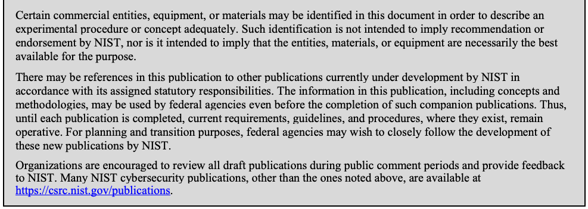
Comments on this publication may be submitted to: National Institute of Standards and Technology Attn: Computer Security Division, Information Technology Laboratory 100 Bureau Drive (Mail Stop 8930) Gaithersburg, MD 20899-8930 Email: 800-190comments@nist.gov
本刊行物に関するコメントは以下に提出することができる：National Institute of Standards and Technology Attn: Computer Security Division, Information Technology Laboratory 100 Bureau Drive (Mail Stop 8930) Gaithersburg, MD 20899-8930 Email: 800-190comments@nist.gov
未レビュー訳All comments are subject to release under the Freedom of Information Act (FOIA).
すべてのコメントは、情報自由法（FOIA）に基づく公開の対象となる。
Reports on Computer Systems Technology
コンピュータシステム技術に関するレポート
The Information Technology Laboratory (ITL) at the National Institute of Standards and Technology (NIST) promotes the U.S. economy and public welfare by providing technical leadership for the Nation’s measurement and standards infrastructure. ITL develops tests, test methods, reference data, proof of concept implementations, and technical analyses to advance the development and productive use of information technology. ITL’s responsibilities include the development of management, administrative, technical, and physical standards and guidelines for the cost-effective security and privacy of other than national security-related information in federal information systems. The Special Publication 800-series reports on ITL’s research, guidelines, and outreach efforts in information system security, and its collaborative activities with industry, government, and academic organizations.
米国国立標準技術研究所（NIST）の情報技術研究所（ITL）は、国の測定および標準インフラストラクチャに対する技術的リーダーシップを提供することにより、米国の経済と公共の福祉を推進している。ITLは、情報技術の開発と生産的な利用を促進するために、テスト、テスト方法、参照データ、概念実証の実装、および技術的分析を開発している。ITLの責務には、連邦政府情報システムにおける国家安全保障関連以外の情報に対する費用対効果の高いセキュリティとプライバシーのための、管理、行政、技術、および物理的な標準とガイドラインの開発が含まれる。Special Publication 800シリーズは、情報システムセキュリティにおけるITLの研究、ガイドライン、アウトリーチ活動、ならびに産業界、政府、学術機関との連携活動について報告している。
Abstract
概要
Application container technologies, also known as containers, are a form of operating system virtualization combined with application software packaging. Containers provide a portable, reusable, and automatable way to package and run applications. This publication explains the potential security concerns associated with the use of containers and provides recommendations for addressing these concerns.
アプリケーションコンテナ技術（コンテナとも呼ばれる）は、オペレーティングシステムの仮想化とアプリケーションソフトウェアのパッケージングを組み合わせた形態である。コンテナは、アプリケーションをパッケージ化して実行するための、ポータブルで再利用可能、かつ自動化可能な方法を提供する。本書では、コンテナの使用に関連する潜在的なセキュリティ上の懸念事項を説明し、これらの懸念事項に対処するための推奨事項を提供する。
Keywords
キーワード
未レビュー訳application; application container; application software packaging; container; container security; isolation; operating system virtualization; virtualization
アプリケーション; アプリケーションコンテナ; アプリケーションソフトウェアパッケージング; コンテナ; コンテナセキュリティ; 分離; オペレーティングシステム仮想化; 仮想化
未レビュー訳Acknowledgements
謝辞
未レビュー訳The authors wish to thank their colleagues who have reviewed drafts of this document and contributed to its technical content during its development, in particular Raghuram Yeluri from Intel Corporation, Paul Cichonski from Cisco Systems, Inc., Michael Bartock and Jeffrey Cichonski from NIST, and Edward Siewick. The authors also acknowledge the organizations that provided feedback during the public comment period, including Docker, Motorola Solutions, StackRox, United States Citizenship and Immigration Services (USCIS), and the US Army.
著者は、本書の作成過程において草案をレビューし、その技術的内容に貢献した同僚、特にIntel CorporationのRaghuram Yeluri氏、Cisco Systems, Inc.のPaul Cichonski氏、NISTのMichael Bartock氏およびJeffrey Cichonski氏、ならびにEdward Siewick氏に感謝の意を表する。著者はまた、Docker、Motorola Solutions、StackRox、米国市民権・移民局（USCIS）、米陸軍など、パブリックコメント期間中にフィードバックを提供した組織にも謝意を表する。
Audience
対象読者
未レビュー訳The intended audience for this document is system and security administrators, security program managers, information system security officers, application developers, and others who have responsibilities for or are otherwise interested in the security of application container technologies.
本書の想定読者は、システム管理者およびセキュリティ管理者、セキュリティプログラム管理者、情報システムセキュリティ責任者、アプリケーション開発者、ならびにアプリケーションコンテナ技術のセキュリティに責任を持つ、あるいは関心のあるその他の関係者である。
This document assumes that readers have some operating system, networking, and security expertise, as well as expertise with virtualization technologies (hypervisors and virtual machines). Because of the constantly changing nature of application container technologies, readers are encouraged to take advantage of other resources, including those listed in this document, for more current and detailed information.
本書は、読者がオペレーティングシステム、ネットワーク、およびセキュリティに関する一定の専門知識に加え、仮想化技術（ハイパーバイザーおよび仮想マシン）に関する専門知識を有していることを前提としている。アプリケーションコンテナ技術は絶えず変化する性質を持つため、より最新かつ詳細な情報を得るために、本書に記載されているものを含む他のリソースも活用することが推奨される。
Trademark Information
商標情報
未レビュー訳All registered trademarks or trademarks belong to their respective organizations.
すべての登録商標または商標は、それぞれの組織に帰属する。
Executive Summary
エグゼクティブサマリー
未レビュー訳Operating system (OS) virtualization provides a separate virtualized view of the OS to each application, thereby keeping each application isolated from all others on the server. Each application can only see and affect itself. Recently, OS virtualization has become increasingly popular due to advances in its ease of use and a greater focus on developer agility as a key benefit. Today’s OS virtualization technologies are primarily focused on providing a portable, reusable, and automatable way to package and run applications (apps). The terms application container or simply container are frequently used to refer to these technologies.
オペレーティングシステム（OS）仮想化は、各アプリケーションに対してOSの独立した仮想化ビューを提供し、それによってサーバー上の他のすべてのアプリケーションから各アプリケーションを隔離された状態に保つ。各アプリケーションは自身のみを参照し、自身にのみ影響を与えることができる。近年、OS仮想化は、使いやすさの向上や、主要な利点としての開発者のアジリティへの注目の高まりにより、ますます普及している。今日のOS仮想化技術は、主にアプリケーション（apps）をパッケージ化して実行するための、ポータブルで再利用可能、かつ自動化可能な方法を提供することに重点を置いている。これらの技術を指す用語として、「アプリケーションコンテナ」または単に「コンテナ」が頻繁に使用されている。
The purpose of the document is to explain the security concerns associated with container technologies and make practical recommendations for addressing those concerns when planning for, implementing, and maintaining containers. Many of the recommendations are specific to a particular component or tier within the container technology architecture, which is depicted in Figure 1.
本文書の目的は、コンテナ技術に関連するセキュリティ上の懸念事項を説明し、コンテナの計画、導入、および保守を行う際にそれらの懸念に対処するための実践的な推奨事項を提示することである。推奨事項の多くは、図1に示すコンテナ技術アーキテクチャ内の特定のコンポーネントまたは階層に特化したものである。
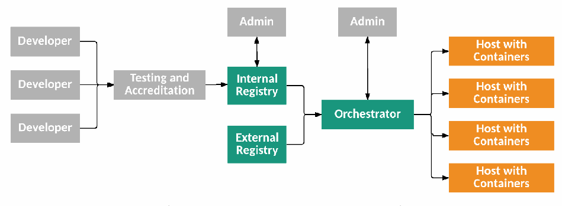
開発者からテスト・認定を経て内部または外部レジストリへコンテナイメージを登録し、オーケストレーターから複数のコンテナホストへ配備する構成。管理者は内部レジストリとオーケストレーターを管理する。
Figure 1: Container Technology Architecture Tiers and Components
図1: コンテナ技術アーキテクチャの階層とコンポーネント
未レビュー訳Organizations should follow these recommendations to help ensure the security of their container technology implementations and usage:
組織は、コンテナ技術の導入および利用におけるセキュリティを確保するのに役立てるため、これらの推奨事項に従うべきである:
Tailor the organization’s operational culture and technical processes to support the new way of developing, running, and supporting applications made possible by containers.
コンテナによって可能になったアプリケーションの開発、実行、およびサポートという新たな手法を支えるために、組織の運用文化および技術的プロセスを適応させる。
The introduction of container technologies might disrupt the existing culture and software development methodologies within the organization. Traditional development practices, patching techniques, and system upgrade processes might not directly apply to a containerized environment, and it is important that employees are willing to adapt to a new model. Staff should be encouraged to embrace the recommended practices for securely building and operating apps within containers, as covered in this guide, and the organization should be willing to rethink existing procedures to take advantage of containers. Education and training covering both the technology and the operational approach should be offered to anyone involved in the software development lifecycle.
コンテナ技術の導入は、組織内の既存の文化やソフトウェア開発手法を混乱させる可能性がある。従来の開発プラクティス、パッチ適用技術、およびシステムのアップグレードプロセスは、コンテナ化された環境には直接適用できない可能性があり、従業員が新たなモデルに進んで適応することが重要である。スタッフは、本ガイドで取り上げられている、コンテナ内で安全にアプリを構築および運用するための推奨プラクティスを積極的に受け入れるよう奨励されるべきであり、組織はコンテナの利点を活かすために既存の手順を進んで見直すべきである。技術と運用アプローチの双方を網羅する教育およびトレーニングは、ソフトウェア開発ライフサイクルに関与するすべての人に提供されるべきである。
Use container-specific host OSs instead of general-purpose ones to reduce attack surfaces.
攻撃対象領域を縮小するために、汎用OSではなくコンテナ専用ホストOSを使用する。
A container-specific host OS is a minimalist OS explicitly designed to only run containers, with all other services and functionality disabled, and with read-only file systems and other hardening practices employed. When using a container-specific host OS, attack surfaces are typically much smaller than they would be with a general-purpose host OS, so there are fewer opportunities to attack and compromise a container-specific host OS. Accordingly, whenever possible, organizations should use container-specific host OSs to reduce their risk. However, it is important to note that container-specific host OSs will still have vulnerabilities over time that require remediation.
コンテナ専用ホストOSとは、他のすべてのサービスや機能を無効化し、読み取り専用ファイルシステムやその他の堅牢化手法を採用した上で、コンテナの実行のみを行うよう明示的に設計された最小限のOSである。コンテナ専用ホストOSを使用する場合、攻撃対象領域は通常、汎用ホストOSよりもはるかに小さくなるため、コンテナ専用ホストOSを攻撃して侵害する機会は少なくなる。したがって、組織はリスクを低減するために、可能な限りコンテナ専用ホストOSを使用すべきである。ただし、コンテナ専用ホストOSであっても、時間の経過とともに修正が必要な脆弱性が依然として生じる点に留意することが重要である。
Only group containers with the same purpose, sensitivity, and threat posture on a single host OS kernel to allow for additional defense in depth.
さらなる多層防御を可能にするため、単一のホストOSカーネル上には、同じ目的、機密性、および脅威態勢を持つコンテナのみをグループ化する。
While most container platforms do an effective job of isolating containers from each other and from the host OS, it may be an unnecessary risk to run apps of different sensitivity levels together on the same host OS. Segmenting containers by purpose, sensitivity, and threat posture provides additional defense in depth. By grouping containers in this manner, organizations make it more difficult for an attacker who compromises one of the groups to expand that compromise to other groups. This increases the likelihood that compromises will be detected and contained and also ensures that any residual data, such as caches or local volumes mounted for temp files, stays within its security zone.
大半のコンテナプラットフォームはコンテナ同士やホストOSからコンテナを効果的に分離しているが、異なる機密性レベルのアプリを同一のホストOS上で混在させて実行することは、不必要なリスクとなる可能性がある。目的、機密性、および脅威態勢によってコンテナをセグメント化することは、さらなる多層防御を提供する。このようにコンテナをグループ化することで、組織は、いずれかのグループを侵害した攻撃者がその侵害を他のグループへ拡大させることをより困難にできる。これにより、侵害が検知および封じ込められる可能性が高まり、一時ファイル用にマウントされたキャッシュやローカルボリュームなどの残留データが確実に自身のセキュリティゾーン内に留まるようにもなる。
In larger-scale environments with hundreds of hosts and thousands of containers, this grouping must be automated to be practical to operationalize. Fortunately, container technologies typically include some notion of being able to group apps together, and container security tools can use attributes like container names and labels to enforce security policies across them.
数百のホストと数千のコンテナが存在する大規模な環境では、実用的に運用するためにこのグループ化を自動化しなければならない。幸いにも、コンテナ技術には通常、アプリ同士をグループ化できる何らかの概念が含まれており、コンテナセキュリティツールはコンテナ名やラベルなどの属性を使用して、それら全体にセキュリティポリシーを適用できる。
Adopt container-specific vulnerability management tools and processes for images to prevent compromises.
侵害を防止するため、イメージ向けのコンテナ固有の脆弱性管理ツールおよびプロセスを採用する。
Traditional vulnerability management tools make many assumptions about host durability and app update mechanisms and frequencies that are fundamentally misaligned with a containerized model. For example, they often assume that a given server runs a consistent set of apps over time, but different application containers may actually be run on different servers at any given time based on resource availability. Further, traditional tools are often unable to detect vulnerabilities within containers, leading to a false sense of safety. Organizations should use tools that take the declarative, step-by-step build approach and immutable nature of containers and images into their design to provide more actionable and reliable results.
従来の脆弱性管理ツールは、ホストの持続性やアプリの更新メカニズムおよび頻度に関して多くの前提を置いているが、これらはコンテナ化モデルと根本的に乖離している。たとえば、従来のツールは多くの場合、特定のサーバーが時間の経過とともに一貫したアプリのセットを実行することを前提としているが、実際にはリソースの可用性に基づいて、任意の時点で異なるアプリケーションコンテナが異なるサーバー上で実行される場合がある。さらに、従来のツールはコンテナ内の脆弱性を検出できないことが多く、誤った安心感を生むことにつながる。組織は、より実用的で信頼性の高い結果を得るために、コンテナやイメージの宣言的かつ段階的なビルド手法と不変性を設計に取り入れたツールを使用すべきである。
These tools and processes should take both image software vulnerabilities and configuration settings into account. Organizations should adopt tools and processes to validate and enforce compliance with secure configuration best practices for images. This should include having centralized reporting and monitoring of the compliance state of each image, and preventing non-compliant images from being run.
これらのツールおよびプロセスは、イメージのソフトウェアの脆弱性と構成設定の両方を考慮すべきである。組織は、イメージに対するセキュアな構成のベストプラクティスへの準拠を検証および強制するためのツールとプロセスを採用すべきである。これには、各イメージのコンプライアンス状態の一元的なレポートと監視を行うことや、非準拠のイメージの実行を防止することを含めるべきである。
未レビュー訳Consider using hardware-based countermeasures to provide a basis for trusted computing.
トラステッドコンピューティングの基盤を提供するために、ハードウェアベースの対策の使用を検討する。
Security should extend across all tiers of the container technology. The current way of accomplishing this is to base security on a hardware root of trust, such as the industry standard Trusted Platform Module (TPM). Within the hardware root of trust are stored measurements of the host’s firmware, software, and configuration data. Validating the current measurements against the stored measurements before booting the host provides assurance that the host can be trusted. The chain of trust rooted in hardware can be extended to the OS kernel and the OS components to enable cryptographic verification of boot mechanisms, system images, container runtimes, and container images. Trusted computing provides a secure way to build, run, orchestrate, and manage containers.
セキュリティは、コンテナ技術のすべての階層に及ぶべきである。これを達成する現在の方法は、業界標準であるTrusted Platform Module（TPM）など、ハードウェアの信頼の起点（Root of Trust）にセキュリティの基礎を置くことである。ハードウェアの信頼の起点内には、ホストのファームウェア、ソフトウェア、および構成データの測定値が格納されている。ホストを起動する前に、現在の測定値を格納されている測定値と照合して検証することにより、そのホストが信頼できるという確証が得られる。ハードウェアを起点とする信頼の連鎖（Chain of Trust）は、OSカーネルおよびOSコンポーネントにまで拡張することができ、ブートメカニズム、システムイメージ、コンテナランタイム、およびコンテナイメージの暗号論的検証を可能にする。トラステッドコンピューティングは、コンテナを構築、実行、オーケストレーション、および管理するためのセキュアな手法を提供する。
Use container-aware runtime defense tools.
コンテナ対応のランタイム防御ツールを使用する。
Deploy and use a dedicated container security solution capable of preventing, detecting, and responding to threats aimed at containers during runtime. Traditional security solutions, such as intrusion prevention systems (IPSs) and web application firewalls (WAFs), often do not provide suitable protection for containers. They may not be able to operate at the scale of containers, manage the rate of change in a container environment, and have visibility into container activity. Utilize a container-native security solution that can monitor the container environment and provide precise detection of anomalous and malicious activity within it.
実行時にコンテナを標的とする脅威を防止、検知、対応できる専用のコンテナセキュリティソリューションを導入して使用する。侵入防止システム（IPSs）やWebアプリケーションファイアウォール（WAFs）などの従来のセキュリティソリューションは、コンテナに対して適切な保護を提供しないことが多い。これらは、コンテナの規模で動作すること、コンテナ環境における変化のペースを管理すること、コンテナのアクティビティに対する可視性を確保することができない可能性がある。コンテナ環境を監視し、その内部における異常なアクティビティや悪意のあるアクティビティを正確に検知できるコンテナネイティブのセキュリティソリューションを活用する。
Table of Contents
目次
未レビュー訳Executive Summary ..................................................................................................... iv
エグゼクティブサマリー ..................................................................................................... iv
未レビュー訳1 Introduction — 1
1 はじめに — 1
未レビュー訳1.1 Purpose and Scope — 1
1.1 目的と適用範囲 — 1
未レビュー訳1.2 Document Structure — 1
1.2 本書の構成 — 1
未レビュー訳2 Introduction to Application Containers — 3
2 アプリケーションコンテナの概要 — 3
未レビュー訳2.1 Basic Concepts for Application Virtualization and Containers — 3
2.1 アプリケーション仮想化とコンテナの基本概念 — 3
2.2 Containers and the Host Operating System — 5
2.2 コンテナとホストオペレーティングシステム — 5
未レビュー訳2.3 Container Technology Architecture — 7
2.3 コンテナ技術のアーキテクチャ — 7
未レビュー訳2.3.1 Image Creation, Testing, and Accreditation — 9
2.3.1 イメージの作成、テスト、および認定 — 9
未レビュー訳2.3.2 Image Storage and Retrieval — 9
2.3.2 イメージの保存と取得 — 9
未レビュー訳2.3.3 Container Deployment and Management — 10
2.3.3 コンテナのデプロイと管理 — 10
未レビュー訳2.4 Container Uses — 11
2.4 コンテナの用途 — 11
3 Major Risks for Core Components of Container Technologies — 13
3 コンテナ技術のコアコンポーネントにおける主要なリスク — 13
3.1 Image Risks — 13
3.1 イメージのリスク — 13
未レビュー訳3.1.1 Image vulnerabilities — 13
3.1.1 イメージの脆弱性 — 13
未レビュー訳3.1.2 Image configuration defects — 13
3.1.2 イメージの設定上の欠陥 — 13
未レビュー訳3.1.3 Embedded malware — 14
3.1.3 埋め込まれたマルウェア — 14
未レビュー訳3.1.4 Embedded clear text secrets — 14
3.1.4 埋め込まれた平文の秘密情報 — 14
3.1.5 Use of untrusted images — 14
3.1.5 信頼されていないイメージの使用 — 14
未レビュー訳3.2 Registry Risks — 14
3.2 レジストリのリスク — 14
未レビュー訳3.2.1 Insecure connections to registries — 14
3.2.1 レジストリへの安全でない接続 — 14
未レビュー訳3.2.2 Stale images in registries — 14
3.2.2 レジストリ内の古いイメージ — 14
未レビュー訳3.2.3 Insufficient authentication and authorization restrictions — 14
3.2.3 不十分な認証および認可の制限 — 14
3.3 Orchestrator Risks — 15
3.3 オーケストレーターのリスク — 15
未レビュー訳3.3.1 Unbounded administrative access — 15
3.3.1 制限のない管理者アクセス — 15
3.3.2 Unauthorized access — 15
3.3.2 不正アクセス — 15
未レビュー訳3.3.3 Poorly separated inter-container network traffic — 15
3.3.3 不十分に分離されたコンテナ間ネットワークトラフィック — 15
未レビュー訳3.3.4 Mixing of workload sensitivity levels — 16
3.3.4 ワークロードの機密性レベルの混在 — 16
未レビュー訳3.3.5 Orchestrator node trust — 16
3.3.5 オーケストレーターノードの信頼 — 16
未レビュー訳3.4 Container Risks — 16
3.4 コンテナのリスク — 16
3.4.1 Vulnerabilities within the runtime software — 16
3.4.1 ランタイムソフトウェア内の脆弱性 — 16
未レビュー訳3.4.2 Unbounded network access from containers — 16
3.4.2 コンテナからの制限のないネットワークアクセス — 16
未レビュー訳3.4.3 Insecure container runtime configurations — 17
3.4.3 安全でないコンテナランタイムの設定 — 17
未レビュー訳3.4.4 App vulnerabilities — 17
3.4.4 アプリの脆弱性 — 17
未レビュー訳3.4.5 Rogue containers — 17
3.4.5 不正なコンテナ — 17
未レビュー訳3.5 Host OS Risks — 17
3.5 ホストOSのリスク — 17
未レビュー訳3.5.1 Large attack surface — 17
3.5.1 大きな攻撃対象領域 — 17
未レビュー訳3.5.2 Shared kernel — 18
3.5.2 共有カーネル — 18
未レビュー訳3.5.3 Host OS component vulnerabilities — 18
3.5.3 ホストOSコンポーネントの脆弱性 — 18
未レビュー訳3.5.4 Improper user access rights — 18
3.5.4 不適切なユーザーアクセス権 — 18
未レビュー訳3.5.5 Host OS file system tampering — 18
3.5.5 ホストOSファイルシステムの改ざん — 18
未レビュー訳4 Countermeasures for Major Risks — 19
4 主要なリスクへの対策 — 19
未レビュー訳4.1 Image Countermeasures — 19
4.1 イメージの対策 — 19
未レビュー訳4.1.1 Image vulnerabilities — 19
4.1.1 イメージの脆弱性 — 19
未レビュー訳4.1.2 Image configuration defects — 19
4.1.2 イメージの設定不備 — 19
未レビュー訳4.1.3 Embedded malware — 20
4.1.3 埋め込まれたマルウェア — 20
未レビュー訳4.1.4 Embedded clear text secrets — 20
4.1.4 埋め込まれた平文の秘密情報 — 20
未レビュー訳4.1.5 Use of untrusted images — 20
4.1.5 信頼できないイメージの使用 — 20
未レビュー訳4.2 Registry Countermeasures — 21
4.2 レジストリの対策 — 21
未レビュー訳4.2.1 Insecure connections to registries — 21
4.2.1 レジストリへの安全でない接続 — 21
未レビュー訳4.2.2 Stale images in registries — 21
4.2.2 レジストリ内の古いイメージ — 21
未レビュー訳4.2.3 Insufficient authentication and authorization restrictions — 21
4.2.3 不十分な認証および認可の制限 — 21
4.3 Orchestrator Countermeasures — 22
4.3 オーケストレータの対策 — 22
未レビュー訳4.3.1 Unbounded administrative access — 22
4.3.1 無制限の管理者アクセス — 22
未レビュー訳4.3.2 Unauthorized access — 22
4.3.2 不正アクセス — 22
未レビュー訳4.3.3 Poorly separated inter-container network traffic — 22
4.3.3 不十分に分離されたコンテナ間ネットワークトラフィック — 22
未レビュー訳4.3.4 Mixing of workload sensitivity levels — 23
4.3.4 ワークロードの機密性レベルの混在 — 23
未レビュー訳4.3.5 Orchestrator node trust — 24
4.3.5 オーケストレーターノードの信頼 — 24
未レビュー訳4.4 Container Countermeasures — 24
4.4 コンテナ対策 — 24
未レビュー訳4.4.1 Vulnerabilities within the runtime software — 24
4.4.1 ランタイムソフトウェア内の脆弱性 — 24
未レビュー訳4.4.2 Unbounded network access from containers — 24
4.4.2 コンテナからの無制限のネットワークアクセス — 24
未レビュー訳4.4.3 Insecure container runtime configurations — 25
4.4.3 安全でないコンテナランタイム設定 — 25
未レビュー訳4.4.4 App vulnerabilities — 25
4.4.4 アプリの脆弱性 — 25
未レビュー訳4.4.5 Rogue containers — 26
4.4.5 不正コンテナ — 26
未レビュー訳4.5 Host OS Countermeasures — 26
4.5 ホストOSの対策 — 26
未レビュー訳4.5.1 Large attack surface — 26
4.5.1 大きな攻撃対象領域 — 26
未レビュー訳4.5.2 Shared kernel — 27
4.5.2 共有カーネル — 27
未レビュー訳4.5.3 Host OS component vulnerabilities — 27
4.5.3 ホストOSコンポーネントの脆弱性 — 27
未レビュー訳4.5.4 Improper user access rights — 27
4.5.4 不適切なユーザーアクセス権 — 27
未レビュー訳4.5.5 Host file system tampering — 27
4.5.5 ホストファイルシステムの改ざん — 27
4.6 Hardware Countermeasures — 28
4.6 ハードウェア対策 — 28
未レビュー訳5 Container Threat Scenario Examples — 30
5 コンテナ脅威シナリオの例 — 30
5.1 Exploit of a Vulnerability within an Image — 30
5.1 イメージ内の脆弱性の悪用 — 30
未レビュー訳5.2 Exploit of the Container Runtime — 30
5.2 コンテナランタイムの悪用 — 30
未レビュー訳5.3 Running a Poisoned Image — 30
5.3 汚染されたイメージの実行 — 30
未レビュー訳6 Container Technology Life Cycle Security Considerations — 32
6 コンテナ技術ライフサイクルのセキュリティに関する考慮事項 — 32
未レビュー訳6.1 Initiation Phase — 32
6.1 開始フェーズ — 32
未レビュー訳6.2 Planning and Design Phase — 32
6.2 計画および設計フェーズ — 32
未レビュー訳6.3 Implementation Phase — 33
6.3 導入フェーズ — 33
未レビュー訳6.4 Operations and Maintenance Phase — 34
6.4 運用・保守フェーズ — 34
未レビュー訳6.5 Disposition Phase — 35
6.5 廃棄フェーズ — 35
未レビュー訳7 Conclusion — 36
7 結論 — 36
未レビュー訳List of Appendices
付録一覧
未レビュー訳Appendix A— NIST Resources for Securing Non-Core Components — 38
付録A— 非コアコンポーネントのセキュリティ確保のためのNISTリソース — 38
Appendix B— NIST SP 800-53 and NIST Cybersecurity Framework Security Controls Related to Container Technologies — 39
付録B— コンテナ技術に関連するNIST SP 800-53およびNISTサイバーセキュリティフレームワークのセキュリティ管理策 — 39
Appendix C— Acronyms and Abbreviations — 46
付録 C— 頭字語および略語 — 46
未レビュー訳Appendix D— Glossary — 48
付録 D— 用語集 — 48
未レビュー訳Appendix E— References — 50
付録 E— 参考文献 — 50
List of Tables and Figures
表および図の一覧
未レビュー訳Figure 1: Container Technology Architecture Tiers and Components.............................iv
図 1: コンテナ技術アーキテクチャの階層とコンポーネント.............................iv
未レビュー訳Figure 2: Virtual Machine and Container Deployments — 5
図 2: 仮想マシンおよびコンテナのデプロイメント — 5
未レビュー訳Figure 3: Container Technology Architecture Tiers, Components, and Lifecycle Phases8
図 3: コンテナ技術アーキテクチャの階層、コンポーネント、およびライフサイクルフェーズ8
未レビュー訳Table 1: NIST Resources for Securing Non-Core Components — 38
表 1: 非コアコンポーネントを保護するためのNISTリソース — 38
未レビュー訳Table 2: Security Controls from NIST SP 800-53 for Container Technology Security... 39 Table 3: NIST SP 800-53 Controls Supported by Container Technologies................... 43 Table 4: NIST Cybersecurity Framework Subcategories Supported by Container Technologies.......................................................................................................... 43
表 2: コンテナ技術セキュリティのためのNIST SP 800-53セキュリティ管理策... 39 表 3: コンテナ技術がサポートするNIST SP 800-53管理策................... 43 表 4: コンテナ技術がサポートするNISTサイバーセキュリティフレームワークのサブカテゴリ.......................................................................................................... 43
未レビュー訳1 Introduction
1 はじめに
未レビュー訳1.1 Purpose and Scope
1.1 目的と適用範囲
The purpose of the document is to explain the security concerns associated with application container technologies and make practical recommendations for addressing those concerns when planning for, implementing, and maintaining containers. Some aspects of containers may vary among technologies, but the recommendations in this document are intended to apply to most or all application container technologies.
本書の目的は、アプリケーションコンテナ技術に関連するセキュリティ上の懸念事項を説明し、コンテナの計画、実装、および保守を行う際にそれらの懸念に対処するための実践的な推奨事項を提供することである。コンテナの一部の側面は技術によって異なる場合があるが、本書の推奨事項は、大部分またはすべてのアプリケーションコンテナ技術に適用されることを意図している。
All forms of virtualization other than application containers, such as virtual machines, are outside the scope of this document.
仮想マシンなど、アプリケーションコンテナ以外のあらゆる形態の仮想化は、本書の適用範囲外である。
In addition to application container technologies, the term “container” is used to refer to concepts such as software that isolates enterprise data from personal data on mobile devices, and software that may be used to isolate applications from each other on desktop operating systems. While these may share some attributes with application container technologies, they are out of scope for this document.
アプリケーションコンテナ技術に加えて、「コンテナ」という用語は、モバイルデバイス上で個人データからエンタープライズデータを分離するソフトウェアや、デスクトップオペレーティングシステム上でアプリケーション同士を互いに分離するために使用される可能性のあるソフトウェアなどの概念を指すためにも使用される。これらはアプリケーションコンテナ技術と一部の属性を共有している場合があるが、本書の適用範囲外である。
This document assumes readers are already familiar with securing the technologies supporting and interacting with application container technologies. These include the following:
本書は、読者がアプリケーションコンテナ技術を支え、それと相互作用する技術のセキュリティ保護についてすでに熟知していることを前提としている。これらには以下が含まれる:
•The layers under application container technologies, including hardware, hypervisors, and operating systems;
•ハードウェア、ハイパーバイザ、オペレーティングシステムを含む、アプリケーションコンテナ技術の下位層；
•The administrative tools that use the applications within the containers; and
•コンテナ内のアプリケーションを使用する管理ツール；および
•The administrator endpoints used to manage the applications within the containers and the containers themselves.
•コンテナ内のアプリケーションおよびコンテナ自体を管理するために使用される管理者エンドポイント。
Appendix A contains pointers to resources with information on securing these technologies. Sections 3 and 4 offer additional information on security considerations for container-specific operating systems. All further discussion of securing the technologies listed above is out of scope for this document.
付録Aには、これらの技術のセキュリティ確保に関する情報を含むリソースへのポインタが記載されている。セクション3および4では、コンテナ専用オペレーティングシステムのセキュリティ上の考慮事項に関する追加情報を提供している。上記に挙げた技術のセキュリティ確保に関するこれ以上の議論は、本文書の対象外である。
1.2 Document Structure
1.2 文書の構成
The remainder of this document is organized into the following sections and appendices:
本文書の残りの部分は、以下のセクションおよび付録で構成されている：
•Section 2 introduces containers, including their technical capabilities, technology architectures, and uses.
•セクション2では、コンテナについて、その技術的能力、技術アーキテクチャ、および用途を含めて紹介する。
•Section 3 explains the major risks for the core components of application container technologies.
•セクション3では、アプリケーションコンテナ技術のコアコンポーネントにおける主要なリスクについて説明する。
•Section 4 recommends countermeasures for the risks identified in Section 3.
•セクション4では、セクション3で特定されたリスクに対する対策を推奨する。
•Section 5 defines threat scenario examples for containers.
•セクション5では、コンテナに関する脅威シナリオの例を定義する。
•Section 6 presents actionable information for planning, implementing, operating, and maintaining container technologies.
•セクション6では、コンテナ技術の計画、導入、運用、保守に関する実践的な情報を提示する。
•Section 7 provides the conclusion for the document.
•第7章では、本文書の結論を述べている。
•Appendix A lists NIST resources for securing non-core components of container technologies.
•付録Aでは、コンテナ技術のコア以外のコンポーネントをセキュアにするためのNISTのリソースの一覧を示している。
•Appendix B lists the NIST Special Publication 800-53 security controls and NIST Cybersecurity Framework subcategories that are most pertinent to application container technologies, explaining the relevancy of each.
•付録Bでは、アプリケーションコンテナ技術に最も関連性の高いNIST Special Publication 800-53のセキュリティ管理策およびNIST Cybersecurity Frameworkのサブカテゴリを一覧で示し、それぞれの関連性を説明している。
•Appendix C provides an acronym and abbreviation list for the document.
•付録Cでは、本文書の頭字語および略語の一覧を提供している。
•Appendix D presents a glossary of selected terms from the document.
•付録Dでは、本文書から選定された用語の用語集を提示している。
•Appendix E contains a list of references for the document.
•付録Eには、本文書の参考文献一覧が含まれている。
2 Introduction to Application Containers
2 アプリケーションコンテナの概要
未レビュー訳This section provides an introduction to containers for server applications (apps). First, it defines the basic concepts for application virtualization and containers needed to understand the rest of the document. Next, this section explains how containers interact with the operating system they run on top of. The next portion of the section illustrates the overall architecture of container technologies, defining all the major components typically found in a container implementation and explaining the workflows between components. The last part of the section describes common uses for containers.
本セクションでは、サーバーアプリケーション（apps）向けのコンテナの概要を説明する。まず、本文書の以降を理解するために必要な、アプリケーション仮想化およびコンテナの基本概念を定義する。次に、コンテナがその上で動作するオペレーティングシステムとどのように相互作用するかを説明する。本セクションの続く部分では、コンテナ技術の全体的なアーキテクチャを示し、一般的なコンテナ実装に見られるすべての主要コンポーネントを定義するとともに、コンポーネント間のワークフローを説明する。本セクションの最後の部分では、コンテナの一般的な用途について説明する。
2.1 Basic Concepts for Application Virtualization and Containers
2.1 アプリケーション仮想化およびコンテナの基本概念
NIST Special Publication (SP) 800-125 [1] defines virtualization as “the simulation of the software and/or hardware upon which other software runs.” Virtualization has been in use for many years, but it is best known for enabling cloud computing. In cloud environments, hardware virtualization is used to run many instances of operating systems (OSs) on a single physical server while keeping each instance separate. This allows more efficient use of hardware and supports multi-tenancy.
NIST Special Publication (SP) 800-125 [1] では、仮想化を「他のソフトウェアが動作するソフトウェアおよび／またはハードウェアのシミュレーション」と定義している。仮想化は長年にわたり使用されてきたが、クラウドコンピューティングを実現した技術として最もよく知られている。クラウド環境では、ハードウェア仮想化を利用して、各インスタンスを分離した状態に保ちながら、単一の物理サーバー上でオペレーティングシステム（OSs）の多数のインスタンスを実行する。これにより、ハードウェアのより効率的な利用が可能になり、マルチテナンシーがサポートされる。
In hardware virtualization, each OS instance interacts with virtualized hardware. Another form of virtualization known as operating system virtualization has a similar concept; it provides multiple virtualized OSs above a single actual OS kernel. This approach is often called an OS container, and various implementations of OS containers have existed since the early 2000s, starting with Solaris Zone and FreeBSD jails.1 Support initially became available in Linux in 2008 with the Linux Container (LXC) technology built into nearly all modern distributions. OS containers are different from the application containers that are the topic of this guide because OS containers are designed to provide an environment that behaves much like a normal OS in which multiple apps and services may co-exist.
ハードウェア仮想化では、各OSインスタンスが仮想化されたハードウェアと相互作用する。オペレーティングシステム仮想化として知られる別の形態の仮想化も同様の概念を持ち、単一の実際のOSカーネルの上で複数の仮想化されたOSを提供する。このアプローチはしばしばOSコンテナと呼ばれ、Solaris ZoneやFreeBSD jails.1をはじめとして、2000年代初頭からOSコンテナのさまざまな実装が存在している。Linuxにおけるサポートは、ほぼすべての最新ディストリビューションに組み込まれているLinux Container（LXC）技術によって2008年に初めて利用可能となった。OSコンテナは本書の主題であるアプリケーションコンテナとは異なる。なぜなら、OSコンテナは、複数のアプリやサービスが共存できる通常のOSと非常によく似た動作をする環境を提供するように設計されているためである。
未レビュー訳Recently, application virtualization has become increasingly popular due to advances in its ease of use and a greater focus on developer agility as a key benefit. In application virtualization, the same shared OS kernel is exposed virtually to multiple discrete apps. OS components keep each app instance isolated from all others on the server. In this case, each app sees only the OS and itself, and is isolated from other apps that may be running on this same OS kernel.
近年、アプリケーション仮想化は、使いやすさの向上と主要な利点としての開発者のアジリティへの注目の高まりにより、ますます普及している。アプリケーション仮想化では、同一の共有OSカーネルが複数の個別のアプリに対して仮想的に公開される。OSコンポーネントは、各アプリインスタンスをサーバー上の他のすべてのインスタンスから隔離された状態に保つ。この場合、各アプリにはOSと自身のみが見えており、この同一のOSカーネル上で動作している可能性のある他のアプリからは隔離されている。
The key difference between OS virtualization and application virtualization is that with application virtualization, each virtual instance typically runs only a single app. Today’s application virtualization technologies are primarily focused on providing a portable, reusable, and automatable way to package and run apps. The terms application container or simply container are frequently used to refer to these technologies. The term is meant as an analogy to shipping containers, which provide a standardized way of grouping disparate contents together while isolating them from each other.
OS仮想化とアプリケーション仮想化の主な違いは、アプリケーション仮想化では各仮想インスタンスが通常単一のアプリのみを実行する点である。今日のアプリケーション仮想化技術は主に、アプリをパッケージ化して実行するための、ポータブルで再利用可能、かつ自動化可能な手段を提供することに重点を置いている。これらの技術を指す用語として、「アプリケーションコンテナ」または単に「コンテナ」という用語が頻繁に使われる。この用語は輸送用コンテナになぞらえたものであり、輸送用コンテナは異なる積荷を互いに隔離しながら1つにまとめる標準化された方法を提供する。
Unlike traditional app architectures, which often divide an app into a few tiers (e.g., web, app, and database) and have a server or VM for each tier, container architectures often have an app divided into many more components, each with a single well-defined function and typically running in its own container(s). Each app component runs in a separate container. In application container technologies, sets of containers that work together to compose an app are referred to as microservices. With this approach, app deployment is more flexible and scalable. Development is also simpler because functionality is more self-contained. However, there are many more objects to manage and secure, which may cause problems for app management and security tools and processes.
アプリをいくつかの層（例：Web、アプリ、データベース）に分割し、層ごとにサーバーまたはVMを配置することが多い従来のアプリアーキテクチャとは異なり、コンテナアーキテクチャでは多くの場合、アプリがはるかに多くのコンポーネントに分割され、各コンポーネントは明確に定義された単一の機能を持ち、通常は独自のコンテナで実行される。各アプリコンポーネントは個別のコンテナで実行される。アプリケーションコンテナ技術では、連携してアプリを構成するコンテナ群はマイクロサービスと呼ばれる。このアプローチにより、アプリのデプロイはより柔軟かつスケーラブルになる。また、機能の自己完結性が高まるため、開発もよりシンプルになる。しかし、管理および保護すべきオブジェクトがはるかに多くなり、これがアプリの管理やセキュリティのツールおよびプロセスに問題を引き起こす可能性がある。
Most application container technologies implement the concept of immutability. In other words, the containers themselves should be operated as stateless entities that are deployed but not changed.2 When a running container needs to be upgraded or have its contents changed, it is simply destroyed and replaced with a new container that has the updates. This enables developers and support engineers to make and push changes to apps at a much faster pace. Organizations may go from deploying a new version of their app every quarter, to deploying new components weekly or daily. Immutability is a fundamental operational difference between containers and hardware virtualization. Traditional VMs are typically run as stateful entities that are deployed, reconfigured, and upgraded throughout their life. Legacy security tools and processes often assume largely static operations and may need to be adjusted to adapt to the rate of change in containerized environments.
ほとんどのアプリケーションコンテナ技術は、イミュータビリティ（不変性）の概念を実装している。言い換えれば、コンテナ自体は、デプロイされた後は変更されないステートレスなエンティティとして運用されるべきである2。実行中のコンテナをアップグレードしたり、その内容を変更したりする必要がある場合、そのコンテナは単に破棄され、更新が適用された新しいコンテナに置き換えられる。これにより、開発者やサポートエンジニアは、はるかに速いペースでアプリへの変更を作成し、プッシュできるようになる。組織は、四半期ごとにアプリの新しいバージョンをデプロイすることから、毎週または毎日のように新しいコンポーネントをデプロイすることへと移行する場合がある。イミュータビリティは、コンテナとハードウェア仮想化との間の運用上の根本的な相違点である。従来のVMは通常、そのライフサイクルを通じてデプロイ、再構成、アップグレードが行われるステートフルなエンティティとして実行される。レガシーなセキュリティツールやプロセスは、ほぼ静的な運用を前提としていることが多く、コンテナ化された環境における変化の速度に適応するために調整が必要となる場合がある。
未レビュー訳The immutable nature of containers also has implications for data persistence. Rather than intermingling the app with the data it uses, containers stress the concept of isolation. Data persistence should be achieved not through simple writes to the container root file system, but instead by using external, persistent data stores such as databases or cluster-aware persistent volumes. The data containers use should be stored outside of the containers themselves so that when the next version of an app replaces the containers running the existing version, all data is still available to the new version.
コンテナのイミュータブルな性質は、データの永続性にも影響を及ぼす。コンテナは、アプリとそれが使用するデータとを混在させるのではなく、分離の概念を重視する。データの永続化は、コンテナのルートファイルシステムへの単純な書き込みによって達成されるべきではなく、データベースやクラスタ対応の永続ボリュームなどの外部の永続データストアを使用することによって達成されるべきである。アプリの次のバージョンが既存のバージョンを実行しているコンテナを置き換える際に、すべてのデータが新しいバージョンでも引き続き利用できるように、コンテナが使用するデータはコンテナ自体の外部に保存されるべきである。
Modern container technologies have largely emerged along with the adoption of development and operations (DevOps) practices that seek to increase the integration between building and running apps, emphasizing close coordination between development and operational teams.3 The portable and declarative nature of containers is particularly well suited to these practices because they allow an organization to have great consistency between development, test, and production environments. Organizations often utilize continuous integration processes to put their apps into containers directly in the build process itself, such that from the very beginning of the app’s lifecycle, there is guaranteed consistency of its runtime environment. Container images— packages containing the files required to run containers—are typically designed to be portable across machines and environments, so that an image created in a development lab can be easily moved to a test lab for evaluation, then copied into a production environment to run without needing to make any modifications. The downside of this is that the security tools and processes used to protect containers should not make assumptions about specific cloud providers, host OSs, network topologies, or other aspects of the container runtime environment which may frequently change. Even more critically, security should be consistent across all these environments and throughout the app lifecycle from development to test to production.
現代のコンテナ技術は、アプリの構築と実行の間の統合を高めることを目指し、開発チームと運用チームの間の緊密な連携を重視する開発・運用（DevOps）プラクティスの採用とともに主に登場してきた3。コンテナのポータブルかつ宣言的な性質は、組織が開発環境、テスト環境、本番環境の間で高い一貫性を保つことを可能にするため、これらのプラクティスに特に適している。組織は多くの場合、継続的インテグレーションプロセスを活用してビルドプロセス自体の中でアプリを直接コンテナに格納し、アプリのライフサイクルの最初からそのランタイム環境の一貫性が保証されるようにしている。コンテナイメージ—コンテナの実行に必要なファイルを含むパッケージ—は、通常、マシンや環境間でポータブルになるように設計されているため、開発ラボで作成されたイメージを評価のためにテストラボに簡単に移動し、その後、変更を加えることなく本番環境にコピーして実行することができる。このことのデメリットは、コンテナを保護するために使用されるセキュリティツールやプロセスが、特定のクラウドプロバイダー、ホストOS、ネットワークトポロジ、または頻繁に変更される可能性のあるコンテナランタイム環境のその他の側面について前提を置くべきではないということである。さらに重要な点として、セキュリティはこれらすべての環境にわたって、また開発からテスト、本番に至るアプリのライフサイクル全体を通じて一貫しているべきである。
未レビュー訳Recently, projects such as Docker [2] and rkt [3] have provided additional functionality designed to make OS component isolation features easier to use and scale. Container technologies are also available on the Windows platform beginning with Windows Server 2016. The fundamental architecture of all these implementations is consistent enough so that this document can discuss containers in detail while remaining implementation agnostic.
近年、Docker [2] や rkt [3] などのプロジェクトにより、OSコンポーネントの分離機能をより使いやすく、スケーラブルにすることを目的とした追加機能が提供されている。また、コンテナ技術は Windows Server 2016 以降、Windowsプラットフォームでも利用可能になっている。これらすべての実装の基本的なアーキテクチャは十分に一貫しているため、本書は特定の実装に依存することなくコンテナについて詳細に論じることができる。
2.2 Containers and the Host Operating System
2.2 コンテナとホストオペレーティングシステム
Explaining the deployment of apps within containers is made easier by comparing it with the deployment of apps within virtual machines (VMs) from hardware virtualization technologies, which many readers are already familiar with. Figure 2 shows the VM deployment on the left, a container deployment without VMs (installed on “bare metal”) in the middle, and a container deployment that runs within a VM on the right.
コンテナ内でのアプリのデプロイについての説明は、多くの読者がすでによく知っているハードウェア仮想化テクノロジーによる仮想マシン（VM）内でのアプリのデプロイと比較することで、より容易になる。図2では、左側にVMデプロイメント、中央にVMを使用しない（「ベアメタル」にインストールされた）コンテナデプロイメント、右側にVM内で実行されるコンテナデプロイメントを示している。
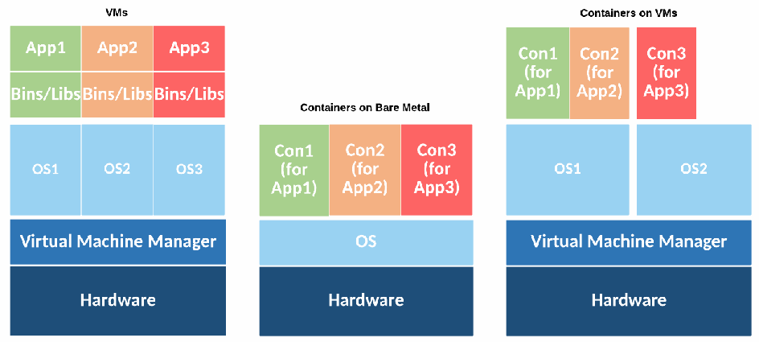
仮想マシン、ベアメタル上のコンテナ、仮想マシン上のコンテナの3構成を比較。仮想マシンでは各アプリとバイナリ・ライブラリの下に個別のOSがあり、その下に仮想マシンマネージャーとハードウェアがある。ベアメタル上のコンテナでは各コンテナの下でOSを共有し、コンテナを仮想マシンマネージャーとハードウェア上に配置する。仮想マシン上のコンテナでは、コンテナとOSが仮想マシンマネージャー上の仮想マシンに載る。
Figure 2: Virtual Machine and Container Deployments
図2：仮想マシンおよびコンテナのデプロイメント
未レビュー訳Both VMs and containers allow multiple apps to share the same physical infrastructure, but they use different methods of separation. VMs use a hypervisor that provides hardware-level isolation of resources across VMs. Each VM sees its own virtual hardware and includes a complete guest OS in addition to the app and its data. VMs allow different OSs, such as Linux and Windows, to share the same physical hardware.
VMとコンテナはどちらも複数のアプリが同一の物理インフラストラクチャを共有することを可能にするが、異なる分離方法を使用する。VMはハイパーバイザを使用し、VM間でリソースのハードウェアレベルの分離を提供する。各VMは独自の仮想ハードウェアを認識し、アプリとそのデータに加えて完全なゲストOSを含んでいる。VMにより、LinuxやWindowsなどの異なるOSが同一の物理ハードウェアを共有できるようになる。
With containers, multiple apps share the same OS kernel instance but are segregated from each other. The OS kernel is part of what is called the host operating system. The host OS sits below the containers and provides OS capabilities to them. Containers are OS-family specific; a Linux host can only run containers built for Linux, and a Windows host can only run Windows containers. Also, a container built for one OS family should run on any recent OS from that family.
コンテナでは、複数のアプリが同一のOSカーネルインスタンスを共有するが、互いに隔離されている。OSカーネルは、ホストオペレーティングシステムと呼ばれるものの一部である。ホストOSはコンテナの下位に位置し、コンテナにOS機能を提供する。コンテナはOSファミリ固有のものである。LinuxホストはLinux用に構築されたコンテナのみを実行でき、WindowsホストはWindowsコンテナのみを実行できる。また、あるOSファミリ向けに構築されたコンテナは、そのファミリの最近のOSであればいずれでも動作するはずである。
未レビュー訳There are two general categories of host OSs used for running containers. General-purpose OSs like Red Hat Enterprise Linux, Ubuntu, and Windows Server can be used for running many kinds of apps and can have container-specific functionality added to them. Container-specific OSs, like CoreOS Container Linux [4], Project Atomic [5], and Google Container-Optimized OS [6] are minimalistic OSs explicitly designed to only run containers. They typically do not come with package managers, they have only a subset of the core administration tools, and they actively discourage running apps outside containers. Often, a container-specific OS uses a read-only file system design to reduce the likelihood of an attacker being able to persist data within it, and it also utilizes a simplified upgrade process since there is little concern around app compatibility.
コンテナの実行に使用されるホストOSには、大きく分けて2つのカテゴリがある。Red Hat Enterprise Linux、Ubuntu、Windows Serverなどの汎用OSは、多種のアプリの実行に使用でき、コンテナ固有の機能を追加することができる。CoreOS Container Linux [4]、Project Atomic [5]、Google Container-Optimized OS [6]などのコンテナ特化型OSは、コンテナの実行のみを行うよう明示的に設計された最小限のOSである。これらには通常、パッケージマネージャが付属しておらず、コア管理ツールのサブセットのみを備え、コンテナ外でのアプリの実行を積極的に抑止している。多くの場合、コンテナ特化型OSは攻撃者がその内部にデータを永続化できる可能性を低減するために読み取り専用ファイルシステム設計を採用しており、またアプリの互換性に関する懸念がほとんどないため、簡素化されたアップグレードプロセスも活用している。
未レビュー訳Every host OS used for running containers has binaries that establish and maintain the environment for each container, also known as the container runtime. The container runtime coordinates multiple OS components that isolate resources and resource usage so that each container sees its own dedicated view of the OS and is isolated from other containers running concurrently. Effectively, the containers and the host OS interact through the container runtime. The container runtime also provides management tools and application programming interfaces (APIs) to allow DevOps personnel and others to specify how to run containers on a given host. The runtime eliminates the need to manually create all the necessary configurations and simplifies the process of starting, stopping, and operating containers. Examples of runtimes include Docker [2], rkt [3], and the Open Container Initiative Daemon [7].
コンテナの実行に使用されるすべてのホストOSには、各コンテナの環境を確立および維持するバイナリ（コンテナランタイムとしても知られる）が存在する。コンテナランタイムは、各コンテナがOSの専用ビューを認識し、同時に実行されている他のコンテナから隔離されるように、リソースおよびリソース使用状況を分離する複数のOSコンポーネントを調整する。事実上、コンテナとホストOSはコンテナランタイムを介して相互作用する。コンテナランタイムはまた、管理ツールとアプリケーションプログラミングインタフェース（API）を提供し、DevOps担当者などが所定のホスト上でコンテナを実行する方法を指定できるようにする。このランタイムにより、必要なすべての構成を手動で作成する必要がなくなり、コンテナの起動、停止、運用のプロセスが簡素化される。ランタイムの例としては、Docker [2]、rkt [3]、Open Container Initiative Daemon [7]などがある。
Examples of technical capabilities the container runtime ensures the host OS provides include the following:
コンテナランタイムがホストOSから確実に提供されるようにする技術的機能の例には、以下が含まれる。
•Namespace isolation limits which resources a container may interact with. This includes file systems, network interfaces, interprocess communications, host names, user information, and processes. Namespace isolation ensures that apps and processes inside a container only see the physical and virtual resources allocated to that container. For example, if you run ‘ps –A’ inside a container running Apache on a host with many other containers running other apps, you would only see httpd listed in the results. Namespace isolation provides each container with its own networking stack, including unique interfaces and IP addresses. Containers on Linux use technologies like masked process identities to achieve namespace isolation, whereas on Windows, object namespaces are used.
•名前空間の分離は、コンテナが対話できるリソースを制限する。これには、ファイルシステム、ネットワークインターフェース、プロセス間通信、ホスト名、ユーザー情報、プロセスが含まれる。名前空間の分離により、コンテナ内のアプリやプロセスには、そのコンテナに割り当てられた物理リソースおよび仮想リソースのみが見えるようになる。たとえば、他のアプリを実行している他の多くのコンテナが存在するホスト上で、Apacheを実行しているコンテナの内部で‘ps –A’を実行した場合、結果にはhttpdのみがリストされて表示される。名前空間の分離は、固有のインターフェースやIPアドレスを含む独自のネットワークスタックを各コンテナに提供する。Linux上のコンテナは名前空間の分離を実現するためにマスクされたプロセスIDなどのテクノロジーを使用するが、Windowsではオブジェクト名前空間が使用される。
•• Resource allocation limits how much of a host’s resources a given container can consume. For example, if your host OS has 10 gigabytes (GB) of total memory, you may wish to allocate 1 GB each to nine separate containers. No container should be able to interfere with the operations of another container, so resource allocation ensures that each container can only utilize the amount of resources assigned to it. On Linux, this is accomplished primarily with control groups (cgroups)4, whereas on Windows job objects serve a similar purpose.
•• リソース割り当ては、特定のコンテナがホストのリソースをどれだけ消費できるかを制限する。例えば、ホストOSに合計10ギガバイト（GB）のメモリがある場合、9つの個別のコンテナにそれぞれ1 GBを割り当てたいことがある。どのコンテナも他のコンテナの動作を妨害できるべきではないため、リソース割り当てによって、各コンテナが自身に割り当てられた量のリソースのみを利用できることが保証される。Linuxでは、これは主にコントロールグループ（cgroups）4によって実現され、Windowsではジョブオブジェクトが同様の目的を果たす。
•Filesystem virtualization allows multiple containers to share the same physical storage without the ability to access or alter the storage of other containers. While arguably similar to namespace isolation, filesystem virtualization is called out separately because it also often involves optimizations to ensure that containers are efficiently using the host’s storage through techniques like copy-on-write. For example, if multiple containers using the same image are running Apache on a single host, filesystem virtualization ensures that there is only one copy of the httpd binary stored on disk. If one of the containers modifies files within itself, only the specifically changed bits will be written to disk, and those changes will only be visible to the container that executed them. On Linux, these capabilities are provided by technologies like the Advanced Multi-Layered Unification Filesystem (AUFS), whereas on Windows they are an extension of the NT File System (NTFS).
•ファイルシステム仮想化により、複数のコンテナは他のコンテナのストレージにアクセスしたり変更したりすることなく、同じ物理ストレージを共有できる。名前空間の分離と類似しているとも言えるが、ファイルシステム仮想化が個別に挙げられているのは、コピーオンライトのような技術を通じてコンテナがホストのストレージを効率的に使用できるようにするための最適化を伴うことも多いためである。例えば、同一のイメージを使用する複数のコンテナが単一のホスト上でApacheを実行している場合、ファイルシステム仮想化によって、ディスクに保存されるhttpdバイナリのコピーが1つだけであることが保証される。コンテナの1つが自身の内部でファイルを変更した場合、具体的に変更されたビットのみがディスクに書き込まれ、それらの変更はそれを実行したコンテナからのみ参照可能となる。Linuxでは、これらの機能はAdvanced Multi-Layered Unification Filesystem（AUFS）のような技術によって提供されるのに対し、WindowsではNT File System（NTFS）の拡張となっている。
The technical capabilities of containers vary by host OS family. Containers are fundamentally a mechanism to give each app a unique view of a single OS, so the tools for achieving this separation are largely OS family-dependent. For example, the methods used to isolate processes from each other differ between Linux and Windows. However, while the underlying implementation may be different, commonly used container runtimes provide a common interface format that largely abstracts these differences from users.
コンテナの技術的機能は、ホストOSファミリーによって異なる。コンテナは根本的には各アプリに単一のOSの固有のビューを提供する仕組みであるため、この分離を実現するためのツールは主にOSファミリーに依存する。例えば、プロセス同士を分離するために使用される手法はLinuxとWindowsで異なる。しかし、基盤となる実装は異なる場合があるものの、一般的に使用されるコンテナランタイムは、これらの違いをユーザーから大幅に抽象化する共通のインターフェース形式を提供する。
While containers provide a strong degree of isolation, they do not offer as clear and concrete of a security boundary as a VM. Because containers share the same kernel and can be run with varying capabilities and privileges on a host, the degree of segmentation between them is far less than that provided to VMs by a hypervisor. Thus, carelessly configured environments can result in containers having the ability to interact with each other and the host far more easily and directly than multiple VMs on the same host.
コンテナは強力な分離を提供するものの、VMほど明確かつ具体的なセキュリティ境界を提供するわけではない。コンテナは同一のカーネルを共有し、ホスト上でさまざまなケーパビリティや特権で実行できるため、コンテナ間のセグメンテーションの度合いは、ハイパーバイザがVMに提供するものよりもはるかに低い。したがって、不用意に設定された環境では、同一ホスト上の複数のVMよりもはるかに容易かつ直接的に、コンテナ同士やホストと相互作用できるようになってしまう可能性がある。
Although containers are sometimes thought of as the next phase of virtualization, surpassing hardware virtualization, the reality for most organizations is less about revolution than evolution. Containers and hardware virtualization not only can, but very frequently do, coexist well and actually enhance each other’s capabilities. VMs provide many benefits, such as strong isolation, OS automation, and a wide and deep ecosystem of solutions. Organizations do not need to make a choice between containers and VMs. Instead, organizations can continue to use VMs to deploy, partition, and manage their hardware, while using containers to package their apps and utilize each VM more efficiently.
コンテナはハードウェア仮想化を超える仮想化の次のフェーズと考えられることもあるが、多くの組織にとっての現実は、革命というよりも進化である。コンテナとハードウェア仮想化は良好に共存できるだけでなく、非常によく共存しており、実際に互いの機能を強化し合っている。VMは、強力な分離、OSの自動化、広範で深遠なソリューションのエコシステムなど、多くの利点を提供する。組織はコンテナとVMのどちらかを選択する必要はない。その代わりに、組織は引き続きVMを使用してハードウェアの導入、分割、管理を行いながら、コンテナを使用してアプリをパッケージ化し、各VMをより効率的に活用することができる。
2.3 Container Technology Architecture
2.3 コンテナ技術アーキテクチャ
Figure 3 shows the five tiers of the container technology architecture:
図3は、コンテナ技術アーキテクチャの5つの階層を示している：
1.Developer systems (generate images and send them to testing and accreditation)
1.開発者システム（イメージを生成し、テストおよび認定へ送信する）
2.Testing and accreditation systems (validate and verify the contents of images, sign images, and send images to the registry)
2.テストおよび認定システム（イメージの内容を検証および確認し、イメージに署名し、レジストリにイメージを送信する）
3.Registries (store images and distribute images to the orchestrator upon request)
3.レジストリ（イメージを保存し、要求に応じてオーケストレータにイメージを配布する）
4.Orchestrators (convert images into containers and deploy containers to hosts)
4.オーケストレータ（イメージをコンテナに変換し、ホストにコンテナをデプロイする）
5.Hosts (run and stop containers as directed by the orchestrator)
5.ホスト（オーケストレータの指示に従ってコンテナを実行および停止する）
未レビュー訳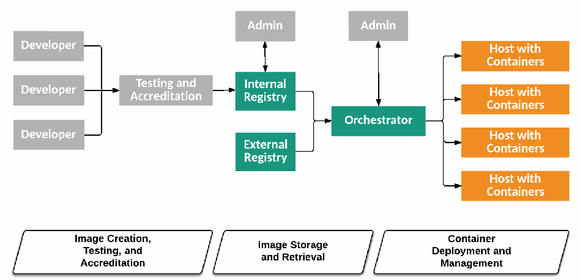
開発者からテスト・認定、内部または外部レジストリ、オーケストレーターを経てコンテナホストへ至る構成と、コンテナのライフサイクル（イメージ作成・テスト・認定、イメージ保管・取得、コンテナ配備・管理）を示す。
Figure 3: Container Technology Architecture Tiers, Components, and Lifecycle Phases
図3: コンテナ技術アーキテクチャの階層、コンポーネント、およびライフサイクルフェーズ
未レビュー訳Although there are many administrator system personas involved in the overall process, the figure depicts only the administrator systems for the internal registry and the orchestrator.
プロセス全体には多くの管理者システムのペルソナが関与しているが、図では内部レジストリとオーケストレータの管理者システムのみを示している。
The systems in gray (developer systems, testing and accreditation system, and administrator systems) are outside the scope of the container technology architecture, but they do have important interactions with it. In most organizations that use containers, the development and test environments also leverage containers, and this consistency is one of the key benefits of using containers. This document does not focus on systems in these environments because the recommendations for securing them are largely the same as those for the production environment. The systems in green (internal registry, external registry, and orchestrator) are core components of a container technology architecture. Finally, the systems in orange (hosts with containers) are where the containers are used.
灰色で示されたシステム（開発者システム、テストおよび認定システム、管理者システム）は、コンテナ技術アーキテクチャの対象範囲外であるが、それと重要な相互作用を持つ。コンテナを使用するほとんどの組織では、開発環境およびテスト環境でもコンテナが活用されており、この一貫性はコンテナを使用する主なメリットの1つである。これらの環境におけるシステムを保護するための推奨事項は本番環境向けの推奨事項とほぼ同じであるため、本文書ではこれらの環境のシステムには焦点を当てていない。緑色で示されたシステム（内部レジストリ、外部レジストリ、オーケストレータ）は、コンテナ技術アーキテクチャの中核コンポーネントである。最後に、オレンジ色で示されたシステム（コンテナを持つホスト）は、コンテナが使用される場所である。
Another way to understand the container technology architecture is to consider the container lifecycle phases, which are depicted at the bottom of Figure 3. The three phases are discussed in more detail below.
コンテナ技術アーキテクチャを理解するもう1つの方法は、図3の下部に示されているコンテナライフサイクルの各フェーズを検討することである。これら3つのフェーズについては、以下でさらに詳しく説明する。
Because organizations are typically building and deploying many different apps at once, these lifecycle phases often occur concurrently within the same organization and should not be seen as progressive stages of maturity. Instead, think of them as cycles in an engine that is continuously running. In this metaphor, each app is a cylinder within the engine, and different apps may be at different phases of this lifecycle at the same time.
組織は通常、同時に多くの異なるアプリをビルドおよびデプロイしているため、これらのライフサイクルフェーズは同一組織内で同時に発生することが多く、段階的な成熟度のステージと見なすべきではない。そうではなく、継続的に稼働しているエンジン内のサイクルのように考えること。この比喩では、各アプリはエンジン内のシリンダーであり、異なるアプリが同時にこのライフサイクルの異なるフェーズにある場合がある。
2.3.1 Image Creation, Testing, and Accreditation
2.3.1 イメージの作成、テスト、および認定
In the first phase of the container lifecycle, an app’s components are built and placed into an image (or perhaps into multiple images). An image is a package that contains all the files required to run a container. For example, an image to run Apache would include the httpd binary, along with associated libraries and configuration files. An image should only include the executables and libraries required by the app itself; all other OS functionality is provided by the OS kernel within the underlying host OS. Images often use techniques like layering and copy-on-write (in which shared master images are read only and changes are recorded to separate files) to minimize their size on disk and improve operational efficiency.
コンテナライフサイクルの第1フェーズでは、アプリのコンポーネントがビルドされ、イメージ内（または場合によっては複数のイメージ内）に配置される。イメージとは、コンテナを実行するために必要なすべてのファイルを含むパッケージである。たとえば、Apacheを実行するためのイメージには、httpdバイナリとともに、関連するライブラリや設定ファイルが含まれる。イメージには、アプリ自体に必要な実行可能ファイルとライブラリのみを含めるべきであり、その他のすべてのOS機能は基盤となるホストOS内のOSカーネルによって提供される。イメージでは、ディスク上のサイズを最小限に抑え、運用効率を向上させるために、レイヤリングやコピーオンライト（共有マスターイメージは読み取り専用であり、変更は個別のファイルに記録される技術）などの手法がよく使用される。
未レビュー訳Because images are built in layers, the underlying layer upon which all other components are added is often called the base layer. Base layers are typically minimalistic distributions of common OSs like Ubuntu and Windows Nano Server with the OS kernel omitted. Users begin building their full images by starting with one of these base layers, then adding application frameworks and their own custom code to develop a fully deployable image of their unique app. Container runtimes support using images from within the same OS family, even if the specific host OS version is dissimilar. For example, a Red Hat host running Docker can run images created on any Linux base layer, such as Alpine or Ubuntu. However, it cannot run images created with a Windows base layer.
イメージはレイヤ構造で構築されるため、他のすべてのコンポーネントが追加される基盤となるレイヤは、しばしばベースレイヤと呼ばれる。ベースレイヤは通常、OSカーネルが省略された、UbuntuやWindows Nano Serverなどの一般的なOSの最小限のディストリビューションである。ユーザーは、これらのベースレイヤのいずれかから開始し、アプリケーションフレームワークや独自のカスタムコードを追加して、独自のアプリの完全にデプロイ可能なイメージを開発することで、完全なイメージの構築を開始する。コンテナランタイムは、特定のホストOSバージョンが異なっていても、同じOSファミリ内のイメージの使用をサポートする。たとえば、Dockerを実行しているRed Hatホストは、AlpineやUbuntuなど、任意のLinuxベースレイヤ上で作成されたイメージを実行できる。ただし、Windowsベースレイヤで作成されたイメージを実行することはできない。
The image creation process is managed by developers responsible for packaging an app for handoff to testing. Image creation typically uses build management and automation tools, such as Jenkins [8] and TeamCity [9], to assist with what is called the “continuous integration” process. These tools take the various libraries, binaries, and other components of an app, perform testing on them, and then assemble images out of them based on the developer-created manifest that describes how to build an image for the app.
イメージ作成プロセスは、テストへの引き渡しに向けてアプリをパッケージ化する責任を担う開発者によって管理される。イメージ作成では通常、Jenkins [8] や TeamCity [9] などのビルド管理および自動化ツールを使用して、「継続的インテグレーション」と呼ばれるプロセスを支援する。これらのツールは、アプリのさまざまなライブラリ、バイナリ、その他のコンポーネントを取り込み、それらのテストを実行した上で、アプリ用のイメージを構築する方法を記述した開発者作成のマニフェストに基づいて、それらからイメージを組み立てる。
Most container technologies have a declarative way of describing the components and requirements for the app. For example, an image for a web server would include not only the executables for the web server, but also some machine-parseable data to describe how the web server should run, such as the ports it listens on or the configuration parameters it uses.
ほとんどのコンテナ技術には、アプリのコンポーネントと要件を宣言的に記述する方法がある。たとえば、Webサーバー用のイメージには、Webサーバー用の実行可能ファイルだけでなく、リッスンするポートや使用する設定パラメータなど、Webサーバーがどのように動作すべきかを記述した機械可読データも含まれる。
After image creation, organizations typically perform testing and accreditation. For example, test automation tools and personnel would use the images built to validate the functionality of the final form application, and security teams would perform accreditation on these same images. The consistency of building, testing, and accrediting exactly the same artifacts for an app is one of the key operational and security benefits of containers.
イメージ作成後、組織は通常、テストおよび認定を実施する。例えば、テスト自動化ツールや担当者は、ビルドされたイメージを使用して最終形態のアプリケーションの機能を検証し、セキュリティチームはこれらと同じイメージに対して認定を実施する。アプリに対してまったく同じ成果物をビルド、テスト、認定するという一貫性は、コンテナにおける運用上およびセキュリティ上の主要な利点の1つである。
2.3.2 Image Storage and Retrieval
2.3.2 イメージの保存と取得
Images are typically stored in central locations to make it easy to control, share, find, and reuse them across hosts. Registries are services that allow developers to easily store images as they are created, tag and catalog images for identification and version control to aid in discovery and reuse, and find and download images that others have created. Registries may be self-hosted or consumed as a service. Examples of registries include Amazon EC2 Container Registry [10], Docker Hub [11], Docker Trusted Registry [12], and Quay Container Registry [13].
イメージは通常、ホスト間での管理、共有、検索、再利用を容易にするために、中央の場所に保存される。レジストリとは、開発者が作成したイメージを容易に保存し、発見や再利用を支援するために識別やバージョン管理を目的としてイメージにタグ付けやカタログ化を行い、他者が作成したイメージを検索してダウンロードすることを可能にするサービスである。レジストリは、セルフホストされる場合もあれば、サービスとして利用される場合もある。レジストリの例としては、Amazon EC2 Container Registry [10]、Docker Hub [11]、Docker Trusted Registry [12]、Quay Container Registry [13] などがある。
Registries provide APIs that enable automating common image-related tasks. For example, organizations may have triggers in the image creation phase that automatically push images to a registry once tests pass. The registry may have further triggers that automate the deployment of new images once they have been added. This automation enables faster iteration on projects with more consistent results.
レジストリは、一般的なイメージ関連タスクの自動化を可能にするAPIを提供する。例えば、組織はイメージ作成フェーズにトリガーを設定し、テストに合格した時点でイメージをレジストリへ自動的にプッシュするようにしている場合がある。レジストリには、新しいイメージが追加された時点でそのデプロイを自動化するさらなるトリガーが備わっている場合もある。この自動化により、より一貫した結果を得ながら、プロジェクトのより迅速なイテレーションが可能になる。
Once stored in a registry, images can be easily pulled and then run by DevOps personas across any environment in which they run containers. This is another example of the portability benefits of containers; image creation may occur in a public cloud provider, which pushes an image to a registry hosted in a private cloud, which is then used to distribute images for running the app in a third location.
一度レジストリに保存されれば、イメージはDevOpsペルソナによって容易にプルされ、コンテナを実行する任意の環境で実行することができる。これは、コンテナのポータビリティの利点を示すもう1つの例である。すなわち、パブリッククラウドプロバイダーでイメージの作成が行われ、それがプライベートクラウドでホストされているレジストリにプッシュされ、さらに第3の場所でアプリを実行するためにそのレジストリからイメージが配布される、というような場合がある。
2.3.3 Container Deployment and Management
2.3.3 コンテナのデプロイと管理
Tools known as orchestrators enable DevOps personas or automation working on their behalf to pull images from registries, deploy those images into containers, and manage the running containers. This deployment process is what actually results in a usable version of the app, running and ready to respond to requests. When an image is deployed into a container, the image itself is not changed, but instead a copy of it is placed within the container and transitioned from being a dormant set of app code to a running instance of the app. Examples of orchestrators are Kubernetes [14], Mesos [15], and Docker Swarm [16].
オーケストレータとして知られるツールにより、DevOpsペルソナまたはその代理として動作する自動化機能は、レジストリからイメージをプルし、それらのイメージをコンテナにデプロイして、実行中のコンテナを管理することができる。このデプロイプロセスによって、実際に利用可能なバージョンのアプリが実行され、リクエストに応答できる状態になる。イメージがコンテナにデプロイされる際、イメージ自体は変更されず、代わりにそのコピーがコンテナ内に配置されて、休眠状態のアプリコードの集合からアプリの実行中インスタンスへと移行する。オーケストレータの例としては、Kubernetes [14]、Mesos [15]、Docker Swarm [16] が挙げられる。
Note that a small, simple container implementation could omit a full-fledged orchestrator. Orchestrators may also be circumvented or unnecessary in other circumstances. For example, a host could directly contact a registry in order to pull an image from it for a container runtime. To simplify the discussions in this publication, the use of an orchestrator will be assumed.
なお、小規模でシンプルなコンテナ実装では、本格的なオーケストレータを省略できる場合もあることに留意されたい。また、他の状況ではオーケストレータが回避されたり、不要であったりする場合もある。例えば、コンテナランタイム用のイメージをプルするために、ホストがレジストリに直接アクセスすることも可能である。本出版物における議論を単純化するため、オーケストレータの使用を前提とする。
The abstraction provided by an orchestrator allows a DevOps persona to simply specify how many containers need to be running a given image and what resources, such as memory, processing, and disk need to be allocated to each. The orchestrator knows the state of each host within the cluster, including what resources are available for each host, and determines which containers will run on which hosts. The orchestrator then pulls the required images from the registry and runs them as containers with the designated resources.
オーケストレータが提供する抽象化により、DevOps担当者は、特定のイメージを実行するコンテナがいくつ必要であるか、また各コンテナにメモリ、処理能力、ディスクなどのどのようなリソースを割り当てる必要があるかを指定するだけで済む。オーケストレータは、各ホストでどのようなリソースが利用可能であるかを含め、クラスタ内の各ホストの状態を把握しており、どのコンテナをどのホストで実行するかを決定する。その後、オーケストレータは必要なイメージをレジストリからプルし、指定されたリソースを持つコンテナとしてそれらを実行する。
Orchestration tools are also responsible for monitoring container resource consumption, job execution, and machine health across hosts. Depending on its configuration, an orchestrator may automatically restart containers on new hosts if the hosts they were initially running on failed. Many orchestrators enable cross-host container networking and service discovery. Most orchestrators also include a software-defined networking (SDN) component known as an overlay network that can be used to isolate communication between apps that share the same physical network.
オーケストレーションツールは、ホスト間におけるコンテナのリソース消費量、ジョブの実行、およびマシンの健全性の監視も担う。設定によっては、オーケストレータは、コンテナが最初に実行されていたホストで障害が発生した場合、新しいホスト上でコンテナを自動的に再起動することがある。多くのオーケストレータは、ホスト間のコンテナネットワーキングとサービス検出を可能にする。また、大半のオーケストレータにはオーバーレイネットワークとして知られるソフトウェア定義ネットワーキング（SDN）コンポーネントが含まれており、同一の物理ネットワークを共有するアプリ間の通信を分離するために使用できる。
When apps in containers need to be updated, the existing containers are not changed, but rather they are destroyed and new containers created from updated images. This is a key operational difference with containers: the baseline software from the initial deployment should not change over time, and updates are done by replacing the entire image at once. This approach has significant potential security benefits because it enables organizations to build, test, validate, and deploy exactly the same software in exactly the same configuration in each phase. As updates are made to apps, organizations can ensure that the most recent versions are used, typically by leveraging orchestrators. Orchestrators are usually configured to pull the most up-to-date version of an image from the registry so that the app is always up-to-date. This “continuous delivery” automation enables developers to simply build a new version of the image for their app, test the image, push it to the registry, and then rely on the automation tools to deploy it to the target environment.
コンテナ内のアプリを更新する必要がある場合、既存のコンテナを変更するのではなく、それらを破棄して更新されたイメージから新しいコンテナを作成する。これはコンテナにおける重要な運用上の違いである。すなわち、初期デプロイ時のベースラインソフトウェアが時間の経過とともに変更されるべきではなく、更新はイメージ全体を一度に置き換えることによって行われる。このアプローチには、組織が各フェーズにおいてまったく同じソフトウェアをまったく同じ構成で構築、テスト、検証、デプロイできるようになるため、セキュリティ上の大きな潜在的メリットがある。アプリに更新が加えられる際、組織は通常、オーケストレータを活用することで最新バージョンが使用されることを保証できる。オーケストレータは通常、アプリが常に最新の状態に保たれるよう、レジストリから最新バージョンのイメージをプルするように構成される。この「継続的デリバリー」の自動化により、開発者はアプリ用の新しいバージョンのイメージをビルドし、イメージをテストし、それをレジストリにプッシュするだけで、あとは自動化ツールを利用してターゲット環境へデプロイできるようになる。
未レビュー訳This means that all vulnerability management, including patches and configuration settings, is typically taken care of by the developer when building a new image version. With containers, developers are largely responsible for the security of apps and images instead of the operations team. This change in responsibilities often requires much greater coordination and cooperation among personnel than was previously necessary. Organizations adopting containers should ensure that clear process flows and team responsibilities are established for each stakeholder group.
これは、パッチや構成設定を含むすべての脆弱性管理が、通常、開発者が新しいイメージバージョンをビルドする際に対処されることを意味する。コンテナを使用する場合、運用チームではなく開発者がアプリやイメージのセキュリティに対して大きな責任を負うことになる。このような責任の変化により、従来必要とされていたよりもはるかに緊密な関係者間の調整と協力が求められることがよくある。コンテナを採用する組織は、各ステークホルダーグループに対して明確なプロセスフローとチームの責任が確立されるようにすべきである。
Container management includes security management and monitoring. However, security controls designed for non-container environments are often not well suited for use with containers. For example, consider security controls that take IP addresses into account. This works well for VMs and bare metal servers with static IP addresses that remain the same for months or years. Conversely, containers are typically allocated IP addresses by orchestrators, and because containers are created and destroyed much more frequently than VMs, these IP addresses change frequently over time as well. This makes it difficult or impossible to protect containers using security techniques that rely on static IP addresses, such as firewall rulesets filtering traffic based on IP address. Additionally, a container network can include communications between containers on the same node, across different nodes, and even across clouds.
コンテナ管理には、セキュリティ管理と監視が含まれる。しかし、コンテナ以外の環境向けに設計されたセキュリティコントロールは、コンテナでの使用に適していないことが少なくない。例えば、IPアドレスを考慮するセキュリティコントロールを考えてみる。これは、数か月または数年間にわたって不変の静的IPアドレスを持つVMやベアメタルサーバーにはうまく機能する。逆に、コンテナは通常オーケストレーターによってIPアドレスが割り当てられ、VMよりもはるかに頻繁に作成および破棄されるため、これらのIPアドレスも時間の経過とともに頻繁に変更される。これにより、IPアドレスに基づいてトラフィックをフィルタリングするファイアウォールルールセットなど、静的IPアドレスに依存するセキュリティ技術を使用してコンテナを保護することが困難、あるいは不可能になる。さらに、コンテナネットワークには、同一ノード上のコンテナ間、異なるノード間、さらにはクラウドをまたぐコンテナ間の通信が含まれる場合がある。
2.4 Container Uses
2.4 コンテナの用途
Like any other technology, containers are not a panacea. They are a valuable tool for many scenarios, but are not necessarily the best choice for every scenario. For example, an organization with a large base of legacy off-the-shelf software is unlikely to be able to take advantage of containers for running most of that software since the vendors may not support it. However, most organizations will have multiple valuable uses for containers. Examples include:
他のあらゆるテクノロジーと同様、コンテナは万能薬ではない。多くのシナリオにおいて価値あるツールであるが、すべてのシナリオで必ずしも最良の選択肢であるとは限らない。例えば、レガシーな市販ソフトウェアの膨大な資産を持つ組織では、ベンダーがサポートしていない可能性があるため、それらのソフトウェアの大部分を実行するのにコンテナを活用できる可能性は低い。しかし、大半の組織にはコンテナの価値ある用途が複数ある。例としては以下が挙げられる：
•Agile development, where apps are frequently updated and deployed. The portability and declarative nature of containers makes these frequent updates more efficient and easier to test. This allows organizations to accelerate their innovation and deliver software more quickly. This also allows vulnerabilities in app code to be fixed and the updated software tested and deployed much faster.
•アプリが頻繁に更新およびデプロイされるアジャイル開発。コンテナの可搬性と宣言的な性質により、こうした頻繁な更新の効率が高まり、テストが容易になる。これにより、組織はイノベーションを加速し、ソフトウェアをより迅速に提供できるようになる。また、アプリコードの脆弱性を修正し、更新されたソフトウェアをはるかに迅速にテストおよびデプロイすることも可能になる。
•Environmental consistency and compartmentalization, where developers can have identical yet separate environments for building, testing, and running the app. Containers give developers the ability to run the entirety of an exact copy of a production app locally on a development laptop system, limiting the need for coordination and sharing of testing environments as well as eliminating the hassle of stale testing environments.
•環境の一貫性と区画化。開発者は、アプリのビルド、テスト、実行のために、同一でありながら分離された環境を持つことができる。コンテナにより、開発者は本番アプリの正確なコピーの全体を開発用ラップトップシステム上でローカルに実行できるようになり、テスト環境の調整や共有の必要性が低減されるとともに、陳腐化したテスト環境の手間が排除される。
•‘Scale out’ scenarios, where an app may need to have many new instances deployed or decommissioned quickly depending on the load at a given point in time. The immutability of containers makes it easier to reliably scale out instances, knowing that each instance is exactly like all the others. Further, because containers are typically stateless, it is easier to decommission them when they are no longer needed.
•「スケールアウト」シナリオ。特定の時点における負荷に応じて、アプリの多数の新規インスタンスを迅速にデプロイまたは廃棄する必要が生じることがある。各インスタンスが他のすべてのインスタンスと完全に同一であることが分かっているため、コンテナの不変性により、確実にインスタンスをスケールアウトすることが容易になる。さらに、コンテナは通常ステートレスであるため、不要になったときに容易に廃棄できる。
•Cloud-native apps, where developers can build for a microservices architecture from the beginning, ensuring more efficient iteration of the app and simplified deployment.
•クラウドネイティブアプリ。開発者は当初からマイクロサービスアーキテクチャ向けに構築でき、アプリのより効率的なイテレーションと簡素化されたデプロイが確実になる。
Containers provide additional benefits; for example, they can increase the effectiveness of build pipelines due to the immutable nature of container images. Containers shift the time and location of production code installation. In non-container systems, app installation happens in production (i.e., at server runtime), typically by running hand-crafted scripts that manage installation of app code (e.g., programming language runtime, dependent third-party libraries, init scripts, and OS tools) on servers. This means that any tests running in a pre-production build pipeline (and on developers’ workstations) are not testing the actual production artifact, but a best-guess approximation contained in the build system. This approximation of production tends to drift from production over time, especially if the teams managing production and the build system are different. This scenario is the embodiment of the “it works on my machine” problem.
コンテナはさらなる利点をもたらす。例えば、コンテナイメージの不変的な性質により、ビルドパイプラインの有効性を高めることができる。コンテナは、本番コードのインストールの時期と場所をシフトさせる。非コンテナシステムでは、アプリのインストールは本番環境（すなわち、サーバー実行時）で行われ、通常、サーバー上でアプリコード（例：プログラミング言語ランタイム、依存するサードパーティライブラリ、initスクリプト、OSツール）のインストールを管理する手動作成スクリプトを実行することによって行われる。これは、本番前のビルドパイプライン（および開発者のワークステーション）で実行されるいかなるテストも、実際の本番アーティファクトをテストしているのではなく、ビルドシステムに含まれる最善の推測に基づく近似物をテストしていることを意味する。本番環境のこの近似物は、特に本番環境とビルドシステムを管理するチームが異なる場合、時間の経過とともに本番環境から乖離する傾向がある。このシナリオは、「私のマシンでは動く」問題を具現化したものである。
With container technologies, the build system installs the app within the image it creates (i.e., at compile-time). The image is an immutable snapshot of all userspace requirements of the app (i.e., programming language runtime, dependent third-party libraries, init scripts, and OS tools). In production the container image constructed by the build system is simply downloaded and run. This solves the “works on my machine” problem since the developer, build system, and production all run the same immutable artifact.
コンテナ技術では、ビルドシステムは自身が作成するイメージ内にアプリをインストールする（すなわち、コンパイル時）。このイメージは、アプリのすべてのユーザー空間要件（すなわち、プログラミング言語ランタイム、依存するサードパーティライブラリ、initスクリプト、OSツール）の不変のスナップショットである。本番環境では、ビルドシステムによって構築されたコンテナイメージが単にダウンロードされて実行される。開発者、ビルドシステム、本番環境のすべてが同じ不変のアーティファクトを実行するため、これにより「私のマシンでは動く」問題が解決される。
Modern container technologies often also emphasize reuse, such that a container image created by one developer can be easily shared and reused by other developers, either within the same organization or among other organizations. Registry services provide centralized image sharing and discovery services to make it easy for developers to find and reuse software created by others. This ease of use is also leading many popular software vendors and projects to use containers as a way to make it easy for customers to find and quickly run their software. For example, rather than directly installing an app like MongoDB on the host OS, a user can simply run a container image of MongoDB. Further, since the container runtime isolates containers from one another and the host OS, these apps can be run more safely and reliably, and users do not have to worry about them disturbing the underlying host OS.
現代のコンテナ技術は再利用を重視することも多く、ある開発者が作成したコンテナイメージを、同一組織内または他の組織の他の開発者が容易に共有し再利用できるようになっている。レジストリサービスは、一元化されたイメージ共有および検出サービスを提供し、開発者が他者によって作成されたソフトウェアを容易に見つけて再利用できるようにする。この使いやすさから、多くの人気ソフトウェアベンダーやプロジェクトも、顧客が自社のソフトウェアを見つけて迅速に実行できるようにする手段としてコンテナを採用するようになっている。例えば、ホストOS上にMongoDBのようなアプリを直接インストールするのではなく、ユーザーは単にMongoDBのコンテナイメージを実行すればよい。さらに、コンテナランタイムはコンテナ同士やホストOSからコンテナを隔離するため、これらのアプリをより安全かつ確実に実行でき、ユーザーは基盤となるホストOSに支障をきたすことを心配する必要がない。
3 Major Risks for Core Components of Container Technologies
3 コンテナ技術のコアコンポーネントにおける主要なリスク
未レビュー訳This section identifies and analyzes major risks for the core components of container technologies—images, registries, orchestrators, containers, and host OSs. Because the analysis looks at core components only, it is applicable to most container deployments regardless of container technology, host OS platform, or location (public cloud, private cloud, etc.) Two types of risks are considered:
本セクションでは、コンテナ技術のコアコンポーネント—イメージ、レジストリ、オーケストレーター、コンテナ、およびホストOS—における主要なリスクを特定し、分析する。この分析はコアコンポーネントのみを対象としているため、コンテナ技術、ホストOSプラットフォーム、または場所（パブリッククラウド、プライベートクラウドなど）に関係なく、ほとんどのコンテナデプロイメントに適用可能である。2種類のリスクが検討される：
1.Compromise of an image or container. This risk was evaluated using the data-centric system threat modeling approach described in NIST SP 800-154 [17]. The primary “data” to protect is the images and containers, which may hold app files, data files, etc. The secondary data to protect is container data within shared host resources such as memory, storage, and network interfaces.
1.イメージまたはコンテナの侵害。このリスクは、NIST SP 800-154 [17] に記載されているデータ中心のシステム脅威モデリング手法を用いて評価された。保護すべき主要な「データ」はイメージおよびコンテナであり、これらにはアプリファイルやデータファイルなどが含まれている場合がある。保護すべき二次的なデータは、メモリ、ストレージ、ネットワークインターフェースなどの共有ホストリソース内にあるコンテナデータである。
2. Misuse of a container to attack other containers, the host OS, other hosts, etc.
2. 他のコンテナ、ホストOS、他のホストなどを攻撃するためのコンテナの悪用。
未レビュー訳All other risks involving the core components, as well as risks involving non-core container technology components, including developer systems, testing and accreditation systems, administrator systems, and host hardware and virtual machine managers, are outside the scope of this document. Appendix A contains pointers to general references for securing non-core container technology components.
コアコンポーネントに関連するその他すべてのリスク、ならびに開発者システム、テストおよび認定システム、管理者システム、ホストハードウェアおよび仮想マシンマネージャーを含む非コアコンテナ技術コンポーネントに関連するリスクは、本書の対象外である。付録Aには、非コアコンテナ技術コンポーネントを保護するための一般的な参考文献へのポインタが記載されている。
3.1 Image Risks
3.1 イメージのリスク
3.1.1 Image vulnerabilities
3.1.1 イメージの脆弱性
Because images are effectively static archive files that include all the components used to run a given app, components within an image may be missing critical security updates or are otherwise outdated. An image created with fully up-to-date components may be free of known vulnerabilities for days or weeks after its creation, but at some time vulnerabilities will be discovered in one or more image components, and thus the image will no longer be up-to-date.
イメージは事実上、特定のアプリを実行するために使用されるすべてのコンポーネントを含む静的アーカイブファイルであるため、イメージ内のコンポーネントには重要なセキュリティ更新が適用されていなかったり、あるいは他の理由で古くなっていたりする可能性がある。完全に最新のコンポーネントで作成されたイメージであっても、作成後数日から数週間は既知の脆弱性が存在しない場合があるが、いつかは1つ以上のイメージコンポーネントで脆弱性が発見され、その結果、そのイメージはもはや最新ではなくなる。
Unlike traditional operational patterns in which deployed software is updated ‘in the field’ on the hosts it runs on, with containers these updates must be made upstream in the images themselves, which are then redeployed. Thus, a common risk in containerized environments is deployed containers having vulnerabilities because the version of the image used to generate the containers has vulnerabilities.
デプロイされたソフトウェアが実行されているホスト上の‘現場’で更新される従来の運用パターンとは異なり、コンテナでは、これらの更新はアップストリームのイメージ自体で行われ、その後に再デプロイされる必要がある。したがって、コンテナ化された環境における一般的なリスクは、コンテナの生成に使用されたバージョンのイメージに脆弱性があるために、デプロイされたコンテナにも脆弱性が存在することである。
3.1.2 Image configuration defects
3.1.2 イメージの設定の欠陥
In addition to software defects, images may also have configuration defects. For example, an image may not be configured with a specific user account to “run as” and thus run with greater privileges than needed. As another example, an image may include an SSH daemon, which exposes the container to unnecessary network risk. Much like in a traditional server or VM, where a poor configuration can still expose a fully up-to-date system to attack, so too can a poorly configured image increase risk even if all the included components are up-to-date.
ソフトウェアの欠陥に加えて、イメージには設定上の欠陥が存在する場合もある。例えば、イメージに「run as」となる特定のユーザーアカウントが設定されておらず、結果として必要以上の権限で実行される場合がある。別の例として、イメージにSSHデーモンが含まれていることがあり、これによりコンテナが不要なネットワークリスクにさらされる。不適切な設定によって完全に最新の状態のシステムであっても攻撃にさらされる可能性がある従来のサーバーやVMとまったく同様に、適切に設定されていないイメージも、含まれるすべてのコンポーネントが最新であったとしてもリスクを増大させる可能性がある。
3.1.3 Embedded malware
3.1.3 埋め込まれたマルウェア
Because images are just collections of files packaged together, malicious files could be included intentionally or inadvertently within them. Such malware would have the same capabilities as any other component within the image and thus could be used to attack other containers or hosts within the environment. A possible source of embedded malware is the use of base layers and other images provided by third parties of which the full provenance is not known.
イメージはパッケージ化されたファイルの集合体にすぎないため、悪意のあるファイルが意図的または不用意にその中に含まれる可能性がある。そのようなマルウェアはイメージ内の他のコンポーネントと同じ能力を持つため、環境内の他のコンテナやホストを攻撃するために使用される可能性がある。埋め込まれたマルウェアの発生源として考えられるのは、サードパーティによって提供された、完全な来歴が不明なベースレイヤーやその他のイメージの使用である。
3.1.4 Embedded clear text secrets
3.1.4 埋め込まれた平文のシークレット
Many apps require secrets to enable secure communication between components. For example, a web app may need a username and password to connect to a backend database. Other examples of embedded secrets include connection strings, SSH private keys, and X.509 private keys. When an app is packaged into an image, these secrets can be embedded directly into the image file system. However, this practice creates a security risk because anyone with access to the image can easily parse it to learn these secrets.
多くのアプリは、コンポーネント間のセキュアな通信を可能にするためにシークレットを必要とする。例えば、Webアプリはバックエンドデータベースに接続するためにユーザー名とパスワードを必要とする場合がある。埋め込まれたシークレットのその他の例としては、接続文字列、SSH秘密鍵、X.509秘密鍵などが挙げられる。アプリがイメージにパッケージ化される際、これらのシークレットがイメージのファイルシステムに直接埋め込まれることがある。しかし、イメージへのアクセス権を持つ者であれば誰でも容易にそれを解析してこれらのシークレットを知ることができるため、この慣行はセキュリティリスクを生じさせる。
3.1.5 Use of untrusted images
3.1.5 信頼されていないイメージの使用
One of the most common high-risk scenarios in any environment is the execution of untrusted software. The portability and ease of reuse of containers increase the temptation for teams to run images from external sources that may not be well validated or trustworthy. For example, when troubleshooting a problem with a web app, a user may find another version of that app available in an image provided by a third party. Using this externally provided image results in the same types of risks that external software traditionally has, such as introducing malware, leaking data, or including components with vulnerabilities.
どのような環境においても最も一般的な高リスクシナリオの1つは、信頼されていないソフトウェアの実行である。コンテナの可搬性と再利用の容易さにより、十分に検証されていない、あるいは信頼できない可能性のある外部ソースからのイメージをチームが実行しようとする誘惑が高まる。例えば、Webアプリの問題をトラブルシューティングする際、ユーザーはサードパーティから提供されたイメージで利用可能なそのアプリの別バージョンを見つけることがある。このように外部から提供されたイメージを使用することは、マルウェアの混入、データの漏えい、脆弱性を持つコンポーネントの含有など、従来の外部ソフトウェアが典型的に持つものと同じ種類のリスクをもたらす。
3.2 Registry Risks
3.2 レジストリのリスク
3.2.1 Insecure connections to registries
3.2.1 レジストリへの安全でない接続
Images often contain sensitive components like an organization’s proprietary software and embedded secrets. If connections to registries are performed over insecure channels, the contents of images are subject to the same confidentiality risks as any other data transmitted in the clear. There is also an increased risk of man-in-the-middle attacks that could intercept network traffic intended for registries and steal developer or administrator credentials within that traffic, provide fraudulent or outdated images to orchestrators, etc.
イメージには多くの場合、組織独自のソフトウェアや埋め込まれたシークレットなど、機微なコンポーネントが含まれている。レジストリへの接続が安全でないチャネルを介して行われる場合、イメージの内容は、平文で送信される他のあらゆるデータと同じ機密性リスクにさらされる。また、レジストリ宛てのネットワークトラフィックを傍受し、そのトラフィック内の開発者や管理者の認証情報を窃取したり、オーケストレーターに不正または古いイメージを提供したりするなどの中間者攻撃のリスクも高まる。
3.2.2 Stale images in registries
3.2.2 レジストリ内の古いイメージ
Because registries are typically the source location for all the images an organization deploys, over time the set of images they store can include many vulnerable, out-of-date versions. While these vulnerable images do not directly pose a threat simply by being stored in the registry, they increase the likelihood of accidental deployment of a known-vulnerable version.
レジストリは通常、組織がデプロイするすべてのイメージの提供元となる場所であるため、時間の経過とともに、そこに保管されているイメージ群には脆弱な古いバージョンが多数含まれるようになる可能性がある。これらの脆弱なイメージは、単にレジストリに保管されているだけでは直接的な脅威とはならないものの、既知の脆弱性を持つバージョンが誤ってデプロイされる可能性を高める。
3.2.3 Insufficient authentication and authorization restrictions
3.2.3 不十分な認証および認可の制限
Because registries may contain images used to run sensitive or proprietary apps and to access sensitive data, insufficient authentication and authorization requirements can lead to intellectual property loss and expose significant technical details about an app to an attacker. Even more critically, because registries are typically trusted as a source of valid, approved software, compromise of a registry can potentially lead to compromise of downstream containers and hosts.
レジストリには機微または独自のアプリケーションを実行したり、機微なデータにアクセスしたりするために使用されるイメージが含まれる場合があるため、認証および認可の要件が不十分であると、知的財産の喪失につながったり、アプリケーションに関する重大な技術的詳細が攻撃者に漏洩したりする可能性がある。さらに重大なことに、レジストリは通常、有効で承認されたソフトウェアの提供元として信頼されているため、レジストリが侵害されると、下流のコンテナやホストの侵害につながるおそれがある。
未レビュー訳3.3 Orchestrator Risks
3.3 オーケストレーターのリスク
3.3.1 Unbounded administrative access
3.3.1 無制限な管理者アクセス
Historically, many orchestrators were designed with the assumption that all users interacting with them would be administrators and those administrators should have environment-wide control. However, in many cases, a single orchestrator may run many different apps, each managed by different teams, and with different sensitivity levels. If the access provided to users and groups is not scoped to their specific needs, a malicious or careless user could affect or subvert the operation of other containers managed by the orchestrator.
歴史的に、多くのオーケストレーターは、それらを操作するすべてのユーザーが管理者であり、それらの管理者が環境全体にわたる制御権限を持つべきであるという前提で設計されていた。しかし、多くの場合、単一のオーケストレーターが、それぞれ異なるチームによって管理され、異なる機密度レベルを持つ多くの異なるアプリを実行することがある。ユーザーやグループに付与されるアクセス権が個々の特定のニーズに限定されていない場合、悪意のあるユーザーや不注意なユーザーが、オーケストレーターによって管理されている他のコンテナの運用に影響を及ぼしたり、損なったりする可能性がある。
3.3.2 Unauthorized access
3.3.2 不正アクセス
Orchestrators often include their own authentication directory service, which may be separate from the typical directories already in use within an organization. This can lead to weaker account management practices and ‘orphaned’ accounts in the orchestrator because these systems are less rigorously managed. Because many of these accounts are highly privileged within the orchestrator, compromise of them can lead to systemwide compromise.
オーケストレーターには独自の認証ディレクトリサービスが含まれていることが多く、これは組織内で既に使用されている一般的なディレクトリとは分離されている場合がある。これらのシステムはそれほど厳密には管理されないため、オーケストレーターにおけるアカウント管理プラクティスの脆弱化や「孤立した」アカウントの発生につながる可能性がある。これらのアカウントの多くはオーケストレーター内で高い特権を持っているため、それらが侵害されるとシステム全体の侵害につながるおそれがある。
Containers typically use data storage volumes that are managed by the orchestration tool and are not host specific. Because a container may run on any given node within a cluster, the data required by the app within the container must be available to the container regardless of which host it is running on. At the same time, many organizations manage data that must be encrypted at rest to prevent unauthorized access.
コンテナは通常、オーケストレーションツールによって管理され、特定のホストに依存しないデータストレージボリュームを使用する。コンテナはクラスタ内の任意のノード上で実行される可能性があるため、コンテナ内のアプリが必要とするデータは、それがどのホストで実行されているかに関係なく、コンテナから利用可能でなければならない。同時に、多くの組織は不正アクセスを防止するために保管時に暗号化しなければならないデータを管理している。
3.3.3 Poorly separated inter-container network traffic
3.3.3 不十分に分離されたコンテナ間ネットワークトラフィック
In most containerized environments, traffic between individual nodes is routed over a virtual overlay network. This overlay network is typically managed by the orchestrator and is often opaque to existing network security and management tools. For example, instead of seeing database queries being sent from a web server container to a database container on another host, traditional network filters would only see encrypted packets flowing between two hosts, with no visibility into the actual container endpoints, nor the traffic being sent. Although an encrypted overlay network provides many operational and security benefits, it can also create a security ‘blindness’ scenario in which organizations are unable to effectively monitor traffic within their own networks.
ほとんどのコンテナ化環境では、個々のノード間のトラフィックは仮想オーバーレイネットワークを介してルーティングされる。このオーバーレイネットワークは通常オーケストレーターによって管理され、既存のネットワークセキュリティツールや管理ツールからは不透明であることが多い。例えば、あるWebサーバーコンテナから別のホスト上のデータベースコンテナに送信されるデータベースクエリを確認する代わりに、従来のネットワークフィルターには2つのホスト間を流れる暗号化パケットしか見えず、実際のコンテナエンドポイントや送信されているトラフィックに対する可視性はない。暗号化されたオーバーレイネットワークは運用面およびセキュリティ面で多くの利点をもたらすが、組織が自らのネットワーク内のトラフィックを効果的に監視できなくなるという、セキュリティ上の「盲目（blindness）」シナリオを生み出す可能性もある。
Potentially even more critical is the risk of traffic from different apps sharing the same virtual networks. If apps of different sensitivity levels, such as a public-facing web site and an internal treasury management app, are using the same virtual network, sensitive internal apps may be exposed to greater risk from network attack. For example, if the public-facing web site is compromised, attackers may be able to use shared networks to attack the treasury app.
さらに重大となる可能性があるのは、異なるアプリからのトラフィックが同一の仮想ネットワークを共有することによるリスクである。一般公開されているWebサイトと社内の財務管理アプリのように、機密度レベルの異なるアプリが同一の仮想ネットワークを使用している場合、機密性の高い社内アプリがネットワーク攻撃によるより大きなリスクにさらされるおそれがある。例えば、一般公開されているWebサイトが侵害された場合、攻撃者は共有ネットワークを利用して財務アプリを攻撃できる可能性がある。
3.3.4 Mixing of workload sensitivity levels
3.3.4 ワークロードの機密度レベルの混在
Orchestrators are typically focused primarily on driving the scale and density of workloads. This means that, by default, they can place workloads of differing sensitivity levels on the same host. For example, in a default configuration, an orchestrator may place a container running a public-facing web server on the same host as one processing sensitive financial data, simply because that host happens to have the most available resources at the time of deployment. In the case of a critical vulnerability in the web server, this can put the container processing sensitive financial data at significantly greater risk of compromise.
オーケストレーターは通常、主にワークロードのスケールと密度を高めることに重点を置いている。これは、デフォルトでは、機密性レベルの異なるワークロードが同一ホスト上に配置される可能性があることを意味する。例えば、デフォルト設定では、単にデプロイ時にそのホストがたまたま最も多くの利用可能リソースを有していたという理由だけで、オーケストレーターが、外部公開されているWebサーバーを実行するコンテナを、機密性の高い財務データを処理するコンテナと同一のホスト上に配置することがある。Webサーバーに重大な脆弱性がある場合、これにより機密性の高い財務データを処理するコンテナが侵害されるリスクが著しく高まる可能性がある。
未レビュー訳3.3.5 Orchestrator node trust
3.3.5 オーケストレーターノードの信頼
Maintenance of trust between the nodes in the environment requires special care. The orchestrator is the most foundational node. Weak orchestrator configurations can expose the orchestrator and all other container technology components to increased risk. Examples of possible consequences include:
環境内のノード間における信頼の維持には、特別な注意が必要である。オーケストレーターは最も基盤となるノードである。脆弱なオーケストレーター設定は、オーケストレーターおよび他のすべてのコンテナ技術コンポーネントをより高いリスクにさらす可能性がある。考えられる影響の例としては、以下のようなものが挙げられる:
•Unauthorized hosts joining the cluster and running containers
•認可されていないホストがクラスタに参加し、コンテナを実行すること
•The compromise of a single cluster host implying compromise of the entire cluster—for example, if the same key pairs used for authentication are shared across all nodes
•単一のクラスタホストの侵害がクラスタ全体の侵害を意味すること—例えば、認証に使用される同一の鍵ペアがすべてのノード間で共有されている場合など
•Communications between the orchestrator and DevOps personnel, administrators, and hosts being unencrypted and unauthenticated
•オーケストレーターとDevOps担当者、管理者、およびホストとの間の通信が暗号化および認証されていないこと
未レビュー訳3.4 Container Risks
3.4 コンテナのリスク
3.4.1 Vulnerabilities within the runtime software
3.4.1 ランタイムソフトウェア内の脆弱性
While relatively uncommon, vulnerabilities within the runtime software are particularly dangerous if they allow ‘container escape’ scenarios in which malicious software can attack resources in other containers and the host OS itself. An attacker may also be able to exploit vulnerabilities to compromise the runtime software itself, and then alter that software so it allows the attacker to access other containers, monitor container-to-container communications, etc.
比較的稀ではあるものの、ランタイムソフトウェア内の脆弱性は、悪意のあるソフトウェアが他のコンテナ内のリソースやホストOS自体を攻撃できる‘コンテナエスケープ’シナリオを許す場合、特に危険である。攻撃者は脆弱性を悪用してランタイムソフトウェア自体を侵害し、そのソフトウェアを改変して他のコンテナへのアクセスやコンテナ間通信の監視などを可能にする場合もある。
3.4.2 Unbounded network access from containers
3.4.2 コンテナからの無制限のネットワークアクセス
By default in most container runtimes, individual containers are able to access each other and the host OS over the network. If a container is compromised and acting maliciously, allowing this network traffic may expose other resources in the environment to risk. For example, a compromised container may be used to scan the network it is connected to in order to find other weaknesses for an attacker to exploit. This risk is related to that from poorly separated virtual networks, as discussed in Section 3.3.3, but different because it is focused more on flows from containers to any outbound destination, not on app “cross talk” scenarios.
大半のコンテナランタイムでは、デフォルトで個々のコンテナがネットワーク経由で互いに、またホストOSにアクセスできるようになっている。コンテナが侵害され悪意を持って動作している場合、このネットワークトラフィックを許可すると環境内の他のリソースがリスクにさらされる可能性がある。例えば、攻撃者が悪用できる他の弱点を見つけるために、侵害されたコンテナが接続先のネットワークをスキャンする目的で使用される可能性がある。このリスクは、Section 3.3.3で説明されている不適切に分離された仮想ネットワークによるリスクと関連しているが、アプリの“クロストーク”シナリオではなく、コンテナから任意のアウトバウンド宛先へのフローにより焦点を当てている点で異なる。
Egress network access is more complex to manage in a containerized environment because so much of the connection is virtualized between containers. Thus, traffic from one container to another may appear simply as encapsulated packets on the network without directly indicating the ultimate source, destination, or payload. Tools and operational processes that are not container aware are not able to inspect this traffic or determine whether it represents a threat.
コンテナ化された環境では、コンテナ間の接続の多くが仮想化されているため、エグレスネットワークアクセスの管理はより複雑になる。したがって、あるコンテナから別のコンテナへのトラフィックは、最終的な送信元、宛先、またはペイロードを直接示すことなく、ネットワーク上で単にカプセル化されたパケットとして現れる可能性がある。コンテナを認識しないツールや運用プロセスでは、このトラフィックを検査したり、それが脅威を表しているかどうかを判断したりすることができない。
3.4.3 Insecure container runtime configurations
3.4.3 安全でないコンテナランタイム設定
Container runtimes typically expose many configurable options to administrators. Setting them improperly can lower the relative security of the system. For example, on Linux container hosts, the set of allowed system calls is often limited by default to only those required for safe operation of containers. If this list is widened, it may expose containers and the host OS to increased risk from a compromised container. Similarly, if a container is run in privileged mode, it has access to all the devices on the host, thus allowing it to essentially act as part of the host OS and impact all other containers running on it.
コンテナランタイムは通常、管理者に対して多くの設定可能なオプションを公開している。それらを不適切に設定すると、システムの相対的なセキュリティが低下する可能性がある。例えば、Linuxコンテナホストでは、許可されるシステムコールのセットは、多くの場合デフォルトでコンテナの安全な運用のために必要なものだけに制限されている。このリストが拡張されると、侵害されたコンテナによるリスクの増大にコンテナおよびホストOSがさらされる可能性がある。同様に、コンテナが特権モードで実行される場合、ホスト上のすべてのデバイスへのアクセス権を持つため、実質的にホストOSの一部として動作し、その上で稼働している他のすべてのコンテナに影響を与えることが可能になる。
Another example of an insecure runtime configuration is allowing containers to mount sensitive directories on the host. Containers should rarely make changes to the host OS file system and should almost never make changes to locations that control the basic functionality of the host OS (e.g., /boot or /etc for Linux containers, C:\Windows for Windows containers). If a compromised container is allowed to make changes to these paths, it could be used to elevate privileges and attack the host itself as well as other containers running on the host.
安全でないランタイム設定のもう1つの例は、コンテナがホスト上の機密性の高いディレクトリをマウントすることを許可することである。コンテナがホストOSのファイルシステムを変更することは稀であるべきであり、ホストOSの基本機能を制御する場所（例えば、Linuxコンテナの場合は/bootや/etc、Windowsコンテナの場合はC:\Windows）を変更することはほぼ決してあってはならない。侵害されたコンテナがこれらのパスへの変更を許可されている場合、権限を昇格し、ホスト自体やホスト上で稼働している他のコンテナを攻撃するために悪用される可能性がある。
3.4.4 App vulnerabilities
3.4.4 アプリの脆弱性
Even when organizations are taking the precautions recommended in this guide, containers may still be compromised due to flaws in the apps they run. This is not a problem with containers themselves, but instead is just the manifestation of typical software flaws within a container environment. For example, a containerized web app may be vulnerable to cross-site scripting vulnerabilities, and a database front end container may be subject to Structured Query Language (SQL) injection. When a container is compromised, it can be misused in many ways, such as granting unauthorized access to sensitive information or enabling attacks against other containers or the host OS.
組織が本ガイドで推奨されている予防策を講じている場合であっても、実行しているアプリの欠陥によってコンテナが侵害される可能性がある。これはコンテナ自体の問題ではなく、コンテナ環境内における典型的なソフトウェアの欠陥の現れにすぎない。例えば、コンテナ化されたWebアプリはクロスサイトスクリプティングの脆弱性に晒される可能性があり、データベースフロントエンドコンテナはStructured Query Language（SQL）インジェクションを受ける可能性がある。コンテナが侵害されると、機密情報への不正アクセスを許可したり、他のコンテナやホストOSに対する攻撃を可能にしたりするなど、さまざまな方法で悪用される可能性がある。
3.4.5 Rogue containers
3.4.5 不正なコンテナ
Rogue containers are unplanned or unsanctioned containers in an environment. This can be a common occurrence, especially in development environments, where app developers may launch containers as a means of testing their code. If these containers are not put through the rigors of vulnerability scanning and proper configuration, they may be more susceptible to exploits. Rogue containers therefore pose additional risk to the organization, especially when they persist in the environment without the awareness of development teams and security administrators.
不正なコンテナとは、環境内における計画外または未承認のコンテナのことである。これは、特にアプリ開発者がコードをテストする手段としてコンテナを起動することがある開発環境において、よくある事象である。これらのコンテナが厳密な脆弱性スキャンや適切な設定を経由していない場合、エクスプロイトの影響をより受けやすくなる可能性がある。したがって、不正なコンテナは組織に追加のリスクをもたらし、特に開発チームやセキュリティ管理者が気付かないまま環境内に残り続ける場合はそのリスクが顕著になる。
3.5 Host OS Risks
3.5 ホストOSのリスク
3.5.1 Large attack surface
3.5.1 大きなアタックサーフェス
Every host OS has an attack surface, which is the collection of all ways attackers can attempt to access and exploit the host OS’s vulnerabilities. For example, any network-accessible service provides a potential entry point for attackers, adding to the attack surface. The larger the attack surface is, the better the odds are that an attacker can find and access a vulnerability, leading to a compromise of the host OS and the containers running on top of it.
すべてのホストOSにはアタックサーフェスが存在し、これは攻撃者がホストOSの脆弱性へのアクセスや悪用を試みることができるあらゆる方法の集合体である。例えば、ネットワーク経由でアクセス可能なサービスは攻撃者に潜在的な侵入経路を提供し、アタックサーフェスを増大させる。アタックサーフェスが大きければ大きいほど、攻撃者が脆弱性を発見してアクセスできる可能性が高まり、ホストOSやその上で実行されているコンテナの侵害につながる。
3.5.2 Shared kernel
3.5.2 共有カーネル
Container-specific OSs have a much smaller attack surface than that of general-purpose OSs. For example, they do not contain libraries and package managers that enable a general-purpose OS to directly run database and web server apps. However, although containers provide strong software-level isolation of resources, the use of a shared kernel invariably results in a larger inter-object attack surface than seen with hypervisors, even for container-specific OSs. In other words, the level of isolation provided by container runtimes is not as high as that provided by hypervisors.
コンテナ専用OSは、汎用OSよりもアタックサーフェスがはるかに小さい。例えば、汎用OSがデータベースやWebサーバーのアプリを直接実行できるようにするライブラリやパッケージマネージャーは含まれていない。しかし、コンテナはリソースの強力なソフトウェアレベルの分離を提供するものの、共有カーネルを使用しているため、コンテナ専用OSであっても、ハイパーバイザーで見られる場合と比べてオブジェクト間のアタックサーフェスが必然的に大きくなる。言い換えれば、コンテナランタイムによって提供される分離のレベルは、ハイパーバイザーによって提供されるものほど高くはない。
3.5.3 Host OS component vulnerabilities
3.5.3 ホストOSコンポーネントの脆弱性
All host OSs, even container-specific ones, provide foundational system components—for example, the cryptographic libraries used to authenticate remote connections and the kernel primitives used for general process invocation and management. Like any other software, these components can have vulnerabilities and, because they exist low in the container technology architecture, they can impact all the containers and apps that run on these hosts.
すべてのホストOSは、コンテナ専用のものであっても、基本的なシステムコンポーネント—例えば、リモート接続の認証に使用される暗号ライブラリや、一般的なプロセスの起動および管理に使用されるカーネルプリミティブなど—を提供する。他のあらゆるソフトウェアと同様に、これらのコンポーネントにも脆弱性が存在する可能性があり、コンテナ技術アーキテクチャの下層に位置するため、これらのホスト上で実行されるすべてのコンテナやアプリケーションに影響を及ぼす可能性がある。
3.5.4 Improper user access rights
3.5.4 不適切なユーザーアクセス権
Container-specific OSs are typically not optimized to support multiuser scenarios since interactive user logon should be rare. Organizations are exposed to risk when users log on directly to hosts to manage containers, rather than going through an orchestration layer. Direct management enables wide-ranging changes to the system and all containers on it, and can potentially enable a user that only needs to manage a specific app’s containers to impact many others.
対話型のユーザーログオンは稀であるはずであるため、コンテナ専用OSは通常、マルチユーザーシナリオをサポートするようには最適化されていない。ユーザーがオーケストレーション層を経由するのではなく、コンテナを管理するためにホストへ直接ログオンすると、組織はリスクにさらされる。直接管理を行うと、システムおよびその上のすべてのコンテナに対して広範な変更が可能になり、特定のアプリケーションのコンテナのみを管理する必要があるユーザーが、他の多くのコンテナに影響を及ぼす可能性が生じる。
3.5.5 Host OS file system tampering
3.5.5 ホストOSファイルシステムの改ざん
Insecure container configurations can expose host volumes to greater risk of file tampering. For example, if a container is allowed to mount sensitive directories on the host OS, that container can then change files in those directories. These changes could impact the stability and security of the host and all other containers running on it.
安全でないコンテナ設定は、ホストボリュームをファイル改ざんのより大きなリスクにさらす可能性がある。例えば、コンテナにホストOS上の機密ディレクトリのマウントが許可されている場合、そのコンテナはそれらのディレクトリ内のファイルを変更できる。こうした変更は、ホストおよびその上で実行されている他のすべてのコンテナの安定性とセキュリティに影響を及ぼす可能性がある。
4 Countermeasures for Major Risks
4 主要なリスクに対する対策
未レビュー訳This section recommends countermeasures for the major risks identified in Section 3.
本セクションでは、セクション3で特定された主要なリスクに対する対策を推奨する。
4.1 Image Countermeasures
4.1 イメージの対策
4.1.1 Image vulnerabilities
4.1.1 イメージの脆弱性
There is a need for container technology-specific vulnerability management tools and processes. Traditional vulnerability management tools make many assumptions about host durability and app update mechanisms and frequencies that are fundamentally misaligned with a containerized model. These tools are often unable to detect vulnerabilities within containers, leading to a false sense of safety.
コンテナ技術に特化した脆弱性管理ツールおよびプロセスが必要とされている。従来の脆弱性管理ツールは、ホストの耐久性やアプリケーションの更新メカニズムおよび頻度について多くの前提を置いているが、それらはコンテナ化されたモデルとは根本的に合致していない。これらのツールはコンテナ内の脆弱性を検出できないことが多く、誤った安心感につながる。
Organizations should use tools that take the pipeline-based build approach and immutable nature of containers and images into their design to provide more actionable and reliable results. Key aspects of effective tools and processes include:
組織は、より実用的で信頼性の高い結果を提供するために、パイプラインベースのビルドアプローチとコンテナおよびイメージの不変の性質を設計に取り入れたツールを使用すべきである。効果的なツールおよびプロセスの主な側面には、次のようなものがある。
1.Integration with the entire lifecycle of images, from the beginning of the build process, to whatever registries the organization is using, to runtime.
1.ビルドプロセスの最初から、組織が使用しているどのようなレジストリ、そしてランタイムに至るまで、イメージのライフサイクル全体との統合。
2.Visibility into vulnerabilities at all layers of the image, not just the base layer of the image but also application frameworks and custom software the organization is using. Visibility should be centralized across the organization and provide flexible reporting and monitoring views aligned with organizations’ business processes.
2.イメージのベースレイヤーだけでなく、アプリケーションフレームワークや組織が使用しているカスタムソフトウェアも含めた、イメージのすべてのレイヤーにおける脆弱性の可視性。可視性は組織全体で一元化されるべきであり、組織のビジネスプロセスに沿った柔軟なレポートおよびモニタリングのビューを提供すべきである。
3.Policy-driven enforcement; organizations should be able to create “quality gates” at each stage of the build and deployment process to ensure that only images that meet the organization’s vulnerability and configuration policies are allowed to progress. For example, organizations should be able to configure a rule in the build process to prevent the progression of images that include vulnerabilities with Common Vulnerability Scoring System (CVSS) [18] ratings above a selected threshold.
3.ポリシーに基づく強制；組織は、組織の脆弱性ポリシーおよび設定ポリシーを満たすイメージのみが先へ進むことを許可されるよう、ビルドおよびデプロイプロセスの各段階で“品質ゲート”を作成できるようにすべきである。たとえば、選択されたしきい値を超える共通脆弱性評価システム（CVSS）[18] の評価を持つ脆弱性を含むイメージの進行を防ぐために、組織はビルドプロセスでルールを設定できるようにすべきである。
4.1.2 Image configuration defects
4.1.2 イメージの設定不備
Organizations should adopt tools and processes to validate and enforce compliance with secure configuration best practices. For example, images should be configured to run as non-privileged users. Tools and processes that should be adopted include:
組織は、安全な構成のベストプラクティスへの準拠を検証および強制するためのツールやプロセスを採用すべきである。例えば、イメージは非特権ユーザーとして実行するように構成すべきである。採用すべきツールやプロセスには、以下が含まれる。
1.Validation of image configuration settings, including vendor recommendations and third-party best practices.
1.ベンダーの推奨事項やサードパーティのベストプラクティスを含む、イメージ設定の検証。
未レビュー訳2.Ongoing, continuously updated, centralized reporting and monitoring of image compliance state to identify weaknesses and risks at the organizational level.
2.組織レベルでの弱点やリスクを特定するための、イメージのコンプライアンス状態に関する継続的かつ随時更新される一元的なレポート作成および監視。
3.Enforcement of compliance requirements by optionally preventing the running of non-compliant images.
3.非準拠イメージの実行を任意で防止することによる、コンプライアンス要件の強制。
未レビュー訳4.Use of base layers from trusted sources only, frequent updates of base layers, and selection of base layers from minimalistic technologies like Alpine Linux and Windows Nano Server to reduce attack surface areas.
4.アタックサーフェスを削減するための、信頼できるソースからのベースレイヤーのみの使用、ベースレイヤーの頻繁な更新、およびAlpine LinuxやWindows Nano Serverのような最小限のテクノロジーからのベースレイヤーの選択。
A final recommendation for image configuration is that SSH and other remote administration tools designed to provide remote shells to hosts should never be enabled within containers. Containers should be run in an immutable manner to derive the greatest security benefit from their use. Enabling remote access to them via these tools implies a degree of change that violates this principle and exposes them to greater risk of network-based attack. Instead, all remote management of containers should be done through the container runtime APIs, which may be accessed via orchestration tools, or by creating remote shell sessions to the host on which the container is running.
イメージ構成に関する最後の推奨事項は、ホストへのリモートシェルを提供するように設計されたSSHやその他のリモート管理ツールを、コンテナ内で決して有効にすべきではないということである。コンテナの使用から最大のセキュリティ上のメリットを得るには、コンテナをイミュータブル（不変）な形で実行すべきである。これらのツールを介してコンテナへのリモートアクセスを有効にすることは、この原則に反する変更を伴うことを意味し、ネットワーク経由の攻撃という、より大きなリスクにコンテナを晒すことになる。代わりに、コンテナのすべてのリモート管理は、オーケストレーションツール経由でアクセス可能なコンテナランタイムAPIを通じて行うか、コンテナが実行されているホストへのリモートシェルセッションを作成することによって行うべきである。
4.1.3 Embedded malware
4.1.3 埋め込まれたマルウェア
Organizations should continuously monitor all images for embedded malware. The monitoring processes should include the use of malware signature sets and behavioral detection heuristics based largely on actual “in the wild” attacks.
組織は、埋め込まれたマルウェアがないか、すべてのイメージを継続的に監視すべきである。監視プロセスには、主に実際の「in the wild」攻撃に基づいたマルウェアシグネチャセットや振る舞い検知ヒューリスティックの使用を含めるべきである。
4.1.4 Embedded clear text secrets
4.1.4 埋め込まれた平文シークレット
Secrets should be stored outside of images and provided dynamically at runtime as needed. Most orchestrators, such as Docker Swarm and Kubernetes, include native management of secrets. These orchestrators not only provide secure storage of secrets and ‘just in time’ injection to containers, but also make it much simpler to integrate secret management into the build and deployment processes. For example, an organization could use these tools to securely provision the database connection string into a web application container. The orchestrator can ensure that only the web application container had access to this secret, that it is not persisted to disk, and that anytime the web app is deployed, the secret is provisioned into it.
シークレットはイメージの外部に保存し、必要に応じてランタイム時に動的に提供されるべきである。Docker Swarm や Kubernetes など、ほとんどのオーケストレーターにはシークレットのネイティブ管理機能が備わっている。これらのオーケストレーターは、シークレットの安全な保存とコンテナへの ‘just in time’ 注入を提供するだけでなく、ビルドおよびデプロイプロセスへのシークレット管理の統合を大幅に容易にする。例えば、組織はこれらのツールを使用して、データベース接続文字列をWebアプリケーションコンテナに安全にプロビジョニングすることができる。オーケストレーターは、そのWebアプリケーションコンテナのみがこのシークレットにアクセスできること、シークレットがディスクに永続化されないこと、そしてWebアプリがデプロイされるたびにシークレットがそこにプロビジョニングされることを確実にすることができる。
Organizations may also integrate their container deployments with existing enterprise secret management systems that are already in use for storing secrets in non-container environments. These tools typically provide APIs to retrieve secrets securely as containers are deployed, which eliminates the need to persist them within images.
組織は、非コンテナ環境でシークレットを保存するためにすでに使用されている既存のエンタープライズシークレット管理システムと、コンテナのデプロイを統合することもできる。これらのツールは通常、コンテナのデプロイ時にシークレットを安全に取得するためのAPIを提供しており、これによりイメージ内にシークレットを永続化する必要がなくなる。
Regardless of the tool chosen, organizations should ensure that secrets are only provided to the specific containers that require them, based on a pre-defined and administrator-controlled setting, and that secrets are always encrypted at rest and in transit using Federal Information Processing Standard (FIPS) 140 approved cryptographic algorithms5 contained in validated cryptographic modules.
選択したツールにかかわらず、組織は、事前定義され管理者が制御する設定に基づいて、シークレットを必要とする特定のコンテナにのみシークレットが提供されるようにすること、そして、検証済み暗号モジュールに含まれる連邦情報処理規格（FIPS）140承認の暗号アルゴリズム5を使用して、保存時および転送時にシークレットが常に暗号化されていることを確実にすべきである。
未レビュー訳4.1.5 Use of untrusted images
4.1.5 信頼されていないイメージの使用
Organizations should maintain a set of trusted images and registries and ensure that only images from this set are allowed to run in their environment, thus mitigating the risk of untrusted or malicious components being deployed.
組織は、信頼されたイメージおよびレジストリのセットを維持し、このセットのイメージのみが自らの環境で実行を許可されるように確実にすべきであり、これにより、信頼されていないコンポーネントや悪意のあるコンポーネントがデプロイされるリスクを軽減する。
To mitigate these risks, organizations should take a multilayered approach that includes:
これらのリスクを軽減するために、組織は以下を含む多層的なアプローチを講じるべきである：
•Capability to centrally control exactly what images and registries are trusted in their environment;
•自組織の環境において、どのイメージおよびレジストリが信頼されているかを正確に一元管理する能力；
•Discrete identification of each image by cryptographic signature, using a NIST-validated implementation6;
•NIST検証済みの実装6を使用した、暗号署名による各イメージの個別識別；
未レビュー訳•Enforcement to ensure that all hosts in the environment only run images from these approved lists;
•環境内のすべてのホストがこれらの承認済みリストのイメージのみを実行することを確実にする強制適用；
•Validation of image signatures before image execution to ensure images are from trusted sources and have not been tampered with; and
•イメージが信頼できるソースからのものであり改ざんされていないことを確実にするための、イメージ実行前のイメージ署名の検証；および
•Ongoing monitoring and maintenance of these repositories to ensure images within them are maintained and updated as vulnerabilities and configuration requirements change.
•脆弱性や設定要件の変化に応じて、これらのリポジトリ内のイメージが維持および更新されることを確実にするための、リポジトリの継続的な監視および保守。
4.2 Registry Countermeasures
4.2 レジストリの対策
4.2.1 Insecure connections to registries
4.2.1 レジストリへの安全でない接続
Organizations should configure their development tools, orchestrators, and container runtimes to only connect to registries over encrypted channels. The specific steps vary between tools, but the key goal is to ensure that all data pushed to and pulled from a registry occurs between trusted endpoints and is encrypted in transit.
組織は、開発ツール、オーケストレーター、およびコンテナランタイムが、暗号化されたチャネル経由でのみレジストリに接続するように構成すべきである。具体的な手順はツールによって異なるが、主要な目標は、レジストリに対してプッシュおよびプルされるすべてのデータが信頼できるエンドポイント間で行われ、転送中に暗号化されることを確実にすることである。
4.2.2 Stale images in registries
4.2.2 レジストリ内の古いイメージ
The risk of using stale images can be mitigated through two primary methods. First, organizations can prune registries of unsafe, vulnerable images that should no longer be used. This process can be automated based on time triggers and labels associated with images. Second, operational practices should emphasize accessing images using immutable names that specify discrete versions of images to be used. For example, rather than configuring a deployment job to use the image called my-app, configure it to deploy specific versions of the image, such as my-app:2.3 and my-app:2.4 to ensure that specific, known good instances of images are deployed as part of each job.
古いイメージを使用するリスクは、主に2つの方法で軽減できる。第1に、組織は、もはや使用すべきではない安全でない脆弱なイメージをレジストリから整理（プルーニング）することができる。このプロセスは、時間トリガーやイメージに関連付けられたラベルに基づいて自動化できる。第2に、運用プラクティスでは、使用するイメージの個別のバージョンを指定する不変の名前を使用してイメージにアクセスすることを重視すべきである。例えば、デプロイジョブでmy-appという名前のイメージを使用するように設定するのではなく、各ジョブの一部として特定の既知の正常なイメージインスタンスが確実にデプロイされるように、my-app:2.3やmy-app:2.4など、イメージの特定のバージョンをデプロイするように設定する。
Another option is using a “latest” tag for images and referencing this tag in deployment automation. However, because this tag is only a label attached to the image and not a guarantee of freshness, organizations should be cautious to not overly trust it. Regardless of whether an organization chooses to use discrete names or to use a “latest” tag, it is critical that processes be put in place to ensure that either the automation is using the most recent unique name or the images tagged “latest” actually do represent the most up-to-date versions.
もう1つの選択肢は、イメージに“latest”タグを使用し、デプロイ自動化においてこのタグを参照することである。しかし、このタグはイメージに付加されたラベルにすぎず、新しさを保証するものではないため、組織はそれを過度に信頼しないよう注意すべきである。組織が個別の名前を使用するか、“latest”タグを使用するかにかかわらず、自動化が最新の一意の名前を使用しているか、あるいは“latest”タグが付けられたイメージが実際に最新バージョンを表しているかのいずれかを確実にするプロセスを導入することが極めて重要である。
4.2.3 Insufficient authentication and authorization restrictions
4.2.3 不十分な認証および認可の制限
All access to registries that contain proprietary or sensitive images should require authentication. Any write access to a registry should require authentication to ensure that only images from trusted entities can be added to it. For example, only allow developers to push images to the specific repositories they are responsible for, rather than being able to update any repository.
プロプライエタリまたは機密性の高いイメージを含むレジストリへのすべてのアクセスには、認証を要求すべきである。信頼できるエンティティからのイメージのみが追加されることを確実にするため、レジストリへのいかなる書き込みアクセスにも認証を要求すべきである。例えば、開発者が任意のリポジトリを更新できるようにするのではなく、自身が責任を負う特定のリポジトリにのみイメージをプッシュできるようにする。
Organizations should consider federating with existing accounts, such as their own or a cloud provider’s directory service to take advantage of security controls already in place for those accounts. All write access to registries should be audited and any read actions for sensitive images should similarly be logged.
組織は、既存のアカウントに対してすでに導入されているセキュリティ管理策を活用するために、自組織やクラウドプロバイダーのディレクトリサービスなど、既存のアカウントとの連携を検討すべきである。レジストリへのすべての書き込みアクセスは監査されるべきであり、機密性の高いイメージに対するすべての読み取りアクションも同様にログに記録されるべきである。
Registries also provide an opportunity to apply context-aware authorization controls to actions. For example, organizations can configure their continuous integration processes to allow images to be signed by the authorized personnel and pushed to a registry only after they have passed a vulnerability scan and compliance assessment. Organizations should integrate these automated scans into their processes to prevent the promotion and deployment of vulnerable or misconfigured images.
レジストリは、アクションに対してコンテキストアウェアな認可制御を適用する機会も提供する。例えば、組織は、イメージが脆弱性スキャンおよびコンプライアンス評価に合格した後にのみ、承認された担当者によって署名され、レジストリにプッシュされることを許可するように、継続的インテグレーションプロセスを構成できる。組織は、脆弱なイメージや誤設定されたイメージのプロモーションおよびデプロイを防止するために、これらの自動スキャンを自らのプロセスに統合すべきである。
4.3 Orchestrator Countermeasures
4.3 オーケストレーターの対策
4.3.1 Unbounded administrative access
4.3.1 制限のない管理者アクセス
Especially because of their wide-ranging span of control, orchestrators should use a least privilege access model in which users are only granted the ability to perform the specific actions on the specific hosts, containers, and images their job roles require. For example, members of the test team should only be given access to the images used in testing and the hosts used for running them, and should only be able to manipulate the containers they created. Test team members should have limited or no access to containers used in production.
特にオーケストレーターはその管理範囲が広範に及ぶため、ユーザーの職務役割が必要とする特定のホスト、コンテナ、およびイメージに対する特定のアクションを実行する権限のみをユーザーに付与する、最小権限アクセスモデルを使用すべきである。例えば、テストチームのメンバーには、テストで使用されるイメージとそれらを実行するために使用されるホストへのアクセスのみが付与されるべきであり、自身が作成したコンテナのみを操作できるようにすべきである。テストチームのメンバーは、本番環境で使用されているコンテナへのアクセスが制限されているか、まったくアクセスできないようにすべきである。
4.3.2 Unauthorized access
4.3.2 不正アクセス
Access to cluster-wide administrative accounts should be tightly controlled as these accounts provide ability to affect all resources in the environment. Organizations should use strong authentication methods, such as requiring multifactor authentication instead of just a password.
クラスター全体の管理者アカウントは環境内のすべてのリソースに影響を与える能力を提供するため、これらのアカウントへのアクセスは厳格に管理されるべきである。組織は、単なるパスワードの代わりに多要素認証を要求するなど、強力な認証方法を使用すべきである。
Organizations should implement single sign-on to existing directory systems where applicable. Single sign-on simplifies the orchestrator authentication experience, makes it easier for users to use strong authentication credentials, and centralizes auditing of access, making anomaly detection more effective.
組織は、適用可能な場合、既存のディレクトリシステムへのシングルサインオンを実装すべきである。シングルサインオンは、オーケストレーターの認証体験を簡素化し、ユーザーが強力な認証資格情報を使用することを容易にし、アクセスの監査を一元化して、異常検知をより効果的にする。
Traditional approaches for data at rest encryption often involve the use of host-based capabilities that may be incompatible with containers. Thus, organizations should use tools for encrypting data used with containers that allow the data to be accessed properly from containers regardless of the node they are running on. Such encryption tools should provide the same barriers to unauthorized access and tampering, using the same cryptographic approaches as those defined in
保管データの暗号化に対する従来のアプローチでは、コンテナと互換性がない可能性のあるホストベースの機能を使用することが多い。したがって、組織は、コンテナが実行されているノードに関係なく、コンテナからデータに適切にアクセスできるようにする、コンテナで使用されるデータを暗号化するためのツールを使用すべきである。このような暗号化ツールは、以下で定義されているものと同じ暗号化アプローチを使用して、不正アクセスや改ざんに対する同一の障壁を提供すべきである：
未レビュー訳NIST SP 800-111 [19].
NIST SP 800-111 [19]。
未レビュー訳4.3.3 Poorly separated inter-container network traffic
4.3.3 コンテナ間ネットワークトラフィックの不十分な分離
Orchestrators should be configured to separate network traffic into discrete virtual networks by sensitivity level. While per-app segmentation is also possible, for most organizations and use cases, simply defining networks by sensitivity level provides sufficient mitigation of risk with a manageable degree of complexity. For example, public-facing apps can share a virtual network, internal apps can use another, and communication between the two should occur through a small number of well-defined interfaces.
オーケストレーターは、機密性レベルごとにネットワークトラフィックを個別の仮想ネットワークに分離するように設定されるべきである。アプリケーションごとのセグメンテーションも可能であるが、大半の組織やユースケースにおいては、単に機密性レベルごとにネットワークを定義するだけで、管理可能な複雑さで十分なリスク軽減が図れる。例えば、外部公開アプリケーションで1つの仮想ネットワークを共有し、内部アプリケーションで別の仮想ネットワークを使用し、両者間の通信は明確に定義された少数のインターフェースを介して行われるように設定できる。
未レビュー訳4.3.4 Mixing of workload sensitivity levels
4.3.4 ワークロードの機密性レベルの混在
Orchestrators should be configured to isolate deployments to specific sets of hosts by sensitivity levels. The particular approach for implementing this varies depending on the orchestrator in use, but the general model is to define rules that prevent high sensitivity workloads from being placed on the same host as those running lower sensitivity workloads. This can be accomplished through the use of host ‘pinning’ within the orchestrator or even simply by having separate, individually managed clusters for each sensitivity level.
オーケストレーターは、機密性レベルごとに特定のホスト群へデプロイを隔離するように設定されるべきである。これを実装するための具体的なアプローチは使用するオーケストレーターによって異なるが、一般的なモデルは、機密性の高いワークロードが、より機密性の低いワークロードを実行しているホストと同じホストに配置されないようにするルールを定義することである。これは、オーケストレーター内でホストの「ピニング（pinning）」を使用することや、あるいは単に機密性レベルごとに個別に管理された別々のクラスターを用意することによっても達成できる。
While most container runtime environments do an effective job of isolating containers from each other and from the host OS, in some cases it may be an unnecessary risk to run apps of different sensitivity levels together on the same host OS. Segmenting containers by purpose, sensitivity, and threat posture provides additional defense in depth. Concepts such as application tiering and network and host segmentation should be taken into consideration when planning app deployments. For example, suppose a host is running containers for both a financial database and a public-facing blog. While normally the container runtime will effectively isolate these environments from each other, there is also a shared responsibility amongst the DevOps teams for each app to operate them securely and eliminate unnecessary risk. If the blog app were to be compromised by an attacker, there would be far fewer layers of defense to protect the database if the two apps are running on the same host.
大半のコンテナランタイム環境は、コンテナ同士やホストOSからコンテナを効果的に隔離するが、場合によっては、異なる機密性レベルのアプリケーションを同じホストOS上で混在して実行することが不必要なリスクとなる可能性がある。目的、機密性、および脅威態勢に応じてコンテナをセグメント化することで、多層防御をさらに強化できる。アプリケーションの階層化や、ネットワークおよびホストのセグメンテーションといった概念は、アプリケーションのデプロイを計画する際に考慮されるべきである。例えば、あるホストが財務データベース用と外部公開ブログ用の両方のコンテナを実行していると仮定する。通常、コンテナランタイムはこれらの環境を相互に効果的に隔離するが、アプリケーションを安全に運用し不必要なリスクを排除するためには、各アプリケーションのDevOpsチーム間での責任共有も存在する。もしブログアプリケーションが攻撃者によって侵害された場合、2つのアプリケーションが同じホスト上で実行されていれば、データベースを保護するための防御層ははるかに少なくなってしまう。
Thus, a best practice is to group containers together by relative sensitivity and to ensure that a given host kernel only runs containers of a single sensitivity level. This segmentation may be provided by using multiple physical servers, but modern hypervisors also provide strong enough isolation to effectively mitigate these risks. From the previous example, this may mean that the organization has two sensitivity levels for their containers. One is for financial apps and the database is included in that group. The other is for web apps and the blog is included in that group. The organization would then have two pools of VMs that would each host containers of a single severity level. For example, the host called vm-financial may host the containers running the financial database as well as the tax reporting software, while a host called vm-web may host the blog and the public website.
したがって、ベストプラクティスは、相対的な機密性に基づいてコンテナをグループ化し、特定のホストカーネルが単一の機密性レベルのコンテナのみを実行するようにすることである。このセグメンテーションは複数の物理サーバーを使用することによって実現できるが、現代のハイパーバイザーもこれらのリスクを効果的に軽減するのに十分な強力な分離を提供する。前述の例に当てはめると、これは組織がコンテナに対して2つの機密性レベルを設けることを意味する場合がある。1つは財務アプリケーション用であり、データベースはそのグループに含まれる。もう1つはWebアプリケーション用であり、ブログはそのグループに含まれる。その場合、組織は単一の重要度レベルのコンテナをそれぞれホストする2つのVMプールを持つことになる。例えば、vm-financialというホストは財務データベースや税務報告ソフトウェアを実行するコンテナをホストしうるし、vm-webというホストはブログや公開Webサイトをホストしうる。
By segmenting containers in this manner, it will be much more difficult for an attacker who compromises one of the segments to expand that compromise to other segments. An attacker who compromises a single server would have limited capabilities to perform reconnaissance and attacks on other containers of a similar sensitivity level and not have any additional access beyond it. This approach also ensures that any residual data, such as caches or local volumes mounted for temp files, stays within the data’s security zone. From the previous example, this zoning would ensure that any financial data cached locally and residually after container termination would never be available on a host running an app at a lower sensitivity level.
このようにコンテナをセグメント化することで、あるセグメントを侵害した攻撃者がその侵害を他のセグメントへと拡大することがはるかに困難になる。単一のサーバーを侵害した攻撃者は、同等の機密性レベルにある他のコンテナに対する偵察や攻撃を行う能力が限られ、それを超えた追加のアクセス権を得ることはできない。また、このアプローチにより、一時ファイル用にマウントされたローカルボリュームやキャッシュなどの残留データが、そのデータのセキュリティゾーン内に留まることも保証される。前述の例で言えば、このゾーニングによって、コンテナの終了後にローカルに残存・キャッシュされた財務データが、より低い機密性レベルのアプリケーションを実行しているホスト上で利用可能になることは決してない。
In larger-scale environments with hundreds of hosts and thousands of containers, this segmentation must be automated to be practical to operationalize. Fortunately, common orchestration platforms typically include some notion of being able to group apps together, and container security tools can use attributes like container names and labels to enforce security policies across them. In these environments, additional layers of defense in depth beyond simple host isolation may also leverage this segmentation. For example, an organization may implement separate hosting zones or networks to not only isolate these containers within hypervisors but also to isolate their network traffic more discretely such that traffic for apps of one sensitivity level is separate from that of other sensitivity levels.
数百台のホストと数千個のコンテナが存在するような大規模環境では、実用的な運用を可能にするためにこのセグメンテーションを自動化する必要がある。幸いなことに、一般的なオーケストレーションプラットフォームには通常、アプリケーションをグループ化できる概念が含まれており、コンテナセキュリティツールはコンテナ名やラベルなどの属性を使用して、それらにまたがるセキュリティポリシーを適用できる。このような環境では、単純なホストの隔離にとどまらない多層防御の追加レイヤーでも、このセグメンテーションを活用できる。例えば、ある組織では個別のホスティングゾーンやネットワークを実装し、ハイパーバイザー内でこれらのコンテナを隔離するだけでなく、ある機密性レベルのアプリケーショントラフィックが他の機密性レベルのものから分離されるよう、ネットワークトラフィックをよりきめ細かく分離することができる。
未レビュー訳4.3.5 Orchestrator node trust
4.3.5 オーケストレーターノードの信頼
Orchestration platforms should be configured to provide features that create a secure environment for all the apps they run. Orchestrators should ensure that nodes are securely introduced to the cluster, have a persistent identity throughout their lifecycle, and can also provide an accurate inventory of nodes and their connectivity states. Organizations should ensure that orchestration platforms are designed specifically to be resilient to compromise of individual nodes without compromising the overall security of the cluster. A compromised node must be able to be isolated and removed from the cluster without disrupting or degrading overall cluster operations. Finally, organizations should choose orchestrators that provide mutually authenticated network connections between cluster members and end-to-end encryption of intra-cluster traffic. Because of the portability of containers, many deployments may occur across networks organizations do not directly control, so a secure-by-default posture is particularly important for this scenario.
オーケストレーションプラットフォームは、実行するすべてのアプリに対してセキュアな環境を創出する機能を提供するよう構成されるべきである。オーケストレーターは、ノードがクラスターに安全に導入され、ライフサイクル全体を通じて永続的なアイデンティティを持ち、ノードとその接続状態の正確なインベントリも提供できるように徹底すべきである。組織は、クラスター全体のセキュリティを損なうことなく個々のノードの侵害に耐えられるよう、オーケストレーションプラットフォームが専用に設計されていることを確実にすべきである。侵害されたノードは、クラスター全体の運用を混乱させたり低下させたりすることなく、クラスターから隔離および削除できなければならない。最後に、組織は、クラスターメンバー間の相互認証されたネットワーク接続と、クラスター内トラフィックのエンドツーエンド暗号化を提供するオーケストレーターを選択すべきである。コンテナのポータビリティの高さから、多くのデプロイメントが組織が直接管理していないネットワークをまたいで行われる可能性があるため、このシナリオではデフォルトでセキュア（secure-by-default）な姿勢が特に重要である。
未レビュー訳4.4 Container Countermeasures
4.4 コンテナ対策
4.4.1 Vulnerabilities within the runtime software
4.4.1 ランタイムソフトウェア内の脆弱性
The container runtime must be carefully monitored for vulnerabilities, and when problems are detected, they must be remediated quickly. A vulnerable runtime exposes all containers it supports, as well as the host itself, to potentially significant risk. Organizations should use tools to look for Common Vulnerabilities and Exposures (CVEs) vulnerabilities in the runtimes deployed, to upgrade any instances at risk, and to ensure that orchestrators only allow deployments to properly maintained runtimes.
コンテナランタイムは脆弱性がないか注意深く監視されなければならず、問題が検出された場合は迅速に対処されなければならない。脆弱なランタイムは、サポートするすべてのコンテナだけでなくホスト自体も、潜在的に重大なリスクにさらすことになる。組織は、デプロイされたランタイム内のCommon Vulnerabilities and Exposures（CVEs）の脆弱性を調査し、リスクのあるインスタンスをアップグレードし、適切に維持管理されたランタイムへのデプロイのみをオーケストレーターが許可するように徹底するためのツールを使用すべきである。
4.4.2 Unbounded network access from containers
4.4.2 コンテナからの無制限なネットワークアクセス
Organizations should control the egress network traffic sent by containers. At minimum, these controls should be in place at network borders, ensuring containers are not able to send traffic across networks of differing sensitivity levels, such as from an environment hosting secure data to the internet, similar to the patterns used for traditional architectures. However, the virtualized networking model of inter-container traffic poses an additional challenge.
組織は、コンテナから送信されるエグレスネットワークトラフィックを制御すべきである。従来のアーキテクチャで使用されていたパターンと同様に、少なくともこれらの制御はネットワーク境界に配置され、機密保護されたデータをホストする環境からインターネットへなど、機密性レベルの異なるネットワーク間でコンテナがトラフィックを送信できないようにするべきである。しかし、コンテナ間トラフィックの仮想化ネットワークモデルは、さらなる課題をもたらす。
Because containers deployed across multiple hosts typically communicate over a virtual, encrypted network, traditional network devices are often blind to this traffic. Additionally, containers are typically assigned dynamic IP addresses automatically when deployed by orchestrators, and these addresses change continuously as the app is scaled and load balanced. Thus, ideally, organizations should use a combination of existing network level devices and more app-aware network filtering. App-aware tools should be able to not just see the inter-container traffic, but also to dynamically generate the rules used to filter this traffic based on the specific characteristics of the apps running in the containers. This dynamic rule management is critical due to the scale and rate of change of containerized apps, as well as their ephemeral networking topology.
複数のホストにまたがってデプロイされたコンテナは通常、仮想の暗号化されたネットワーク経由で通信するため、従来のネットワーク機器はこのトラフィックを把握できない（ブラインドとなる）ことが多い。さらに、コンテナにはオーケストレーターによってデプロイされる際に動的IPアドレスが自動的に割り当てられるのが一般的であり、これらのアドレスはアプリがスケーリングやロードバランシングされるにつれて絶えず変化する。したがって、理想的には、組織は既存のネットワークレベルの機器と、よりアプリを意識した（app-awareな）ネットワークフィルタリングの組み合わせを使用すべきである。アプリ対応（App-aware）ツールは、コンテナ間トラフィックを可視化するだけでなく、コンテナ内で実行されているアプリの特定の特性に基づいて、このトラフィックをフィルタリングするためのルールを動的に生成できるべきである。この動的なルール管理は、コンテナ化されたアプリの規模と変化の速度、そしてそのエフェメラルなネットワークトポロジのために不可欠である。
未レビュー訳Specifically, app-aware tools should provide the following capabilities:
具体的には、アプリケーション対応ツールは以下の機能を提供すべきである：
•Automated determination of proper container networking surfaces, including both inbound ports and process-port bindings;
•インバウンドポートとプロセス・ポートバインディングの両方を含む、適切なコンテナネットワークサーフェスの自動決定；
•Detection of traffic flows both between containers and other network entities, over both ‘on the wire’ traffic and encapsulated traffic; and
•‘on the wire’トラフィックとカプセル化されたトラフィックの両方における、コンテナ間および他のネットワークエンティティとの間の両方のトラフィックフローの検出；および
•Detection of network anomalies, such as unexpected traffic flows within the organization’s network, port scanning, or outbound access to potentially dangerous destinations.
•組織のネットワーク内における予期しないトラフィックフロー、ポートスキャン、または潜在的に危険な宛先へのアウトバウンドアクセスなどのネットワーク異常の検出。
4.4.3 Insecure container runtime configurations
4.4.3 セキュアでないコンテナランタイム構成
Organizations should automate compliance with container runtime configuration standards. Documented technical implementation guidance, such as the Center for Internet Security Docker Benchmark [20], provides details on options and recommended settings, but operationalizing this guidance depends on automation. Organizations can use a variety of tools to “scan” and assess their compliance at a point in time, but such approaches do not scale. Instead, organizations should use tools or processes that continuously assess configuration settings across the environment and actively enforce them.
組織は、コンテナランタイム構成基準への準拠を自動化すべきである。Center for Internet Security Docker Benchmark [20]などの文書化された技術実装ガイダンスは、オプションや推奨設定に関する詳細を提供しているが、このガイダンスの運用化は自動化に依存している。組織はさまざまなツールを使用して、ある一時点における準拠状況を“scan”して評価することができるが、そのようなアプローチはスケールしない。代わりに、組織は環境全体の設定を継続的に評価し、それらを積極的に強制適用するツールまたはプロセスを使用すべきである。
Additionally, mandatory access control (MAC) technologies like SELinux [21] and AppArmor [22] provide enhanced control and isolation for containers running Linux OSs. For example, these technologies can be used to provide additional segmentation and assurance that containers should only be able to access specific file paths, processes, and network sockets, further constraining the ability of even a compromised container to impact the host or other containers. MAC technologies provide protection at the host OS layer, ensuring that only specific files, paths, and processes are accessible to containerized apps. Organizations are encouraged to use the MAC technologies provided by their host OSs in all container deployments.
さらに、SELinux [21]やAppArmor [22]などの強制アクセス制御（MAC）技術は、Linux OSを実行するコンテナに対して強化された制御と分離を提供する。例えば、これらの技術を使用して追加のセグメンテーションを提供し、コンテナが特定のファイルパス、プロセス、およびネットワークソケットにのみアクセスできるように保証することで、侵害されたコンテナであってもホストや他のコンテナに影響を与える能力をさらに制限することができる。MAC技術はホストOSレイヤーで保護を提供し、コンテナ化されたアプリが特定のファイル、パス、およびプロセスにのみアクセスできるようにする。組織は、すべてのコンテナ導入において、ホストOSによって提供されるMAC技術を使用することが推奨される。
Secure computing (seccomp)7 profiles are another mechanism that can be used to constrain the system-level capabilities containers are allocated at runtime. Common container runtimes like Docker include default seccomp profiles that drop system calls that are unsafe and typically unnecessary for container operation. Additionally, custom profiles can be created and passed to container runtimes to further limit their capabilities. At a minimum, organizations should ensure that containers are run with the default profiles provided by their runtime and should consider using additional profiles for high-risk apps.
Secure computing（seccomp）7プロファイルは、実行時にコンテナに割り当てられるシステムレベルの機能を制限するために使用できるもう1つのメカニズムである。Dockerなどの一般的なコンテナランタイムには、安全でなく、通常はコンテナの運用に不要なシステムコールを破棄するデフォルトのseccompプロファイルが含まれている。さらに、カスタムプロファイルを作成してコンテナランタイムに渡し、その機能をさらに制限することができる。最低限、組織はコンテナがランタイムによって提供されるデフォルトのプロファイルで実行されることを確実にする必要があり、高リスクなアプリに対しては追加のプロファイルの使用を検討すべきである。
未レビュー訳4.4.4 App vulnerabilities
4.4.4 アプリケーションの脆弱性
Existing host-based intrusion detection processes and tools are often unable to detect and prevent attacks within containers due to the differing technical architecture and operational practices previously discussed. Organizations should implement additional tools that are container aware and designed to operate at the scale and change rate typically seen with containers. These tools should be able to automatically profile containerized apps using behavioral learning and build security profiles for them to minimize human interaction. These profiles should then be able to prevent and detect anomalies at runtime, including events such as:
既存のホストベースの侵入検知プロセスやツールは、前述した技術的アーキテクチャや運用プラクティスの違いにより、コンテナ内の攻撃を検知および防止できないことが多い。組織は、コンテナを認識し、コンテナで通常見られる規模や変更頻度で動作するように設計された追加のツールを導入すべきである。これらのツールは、ふるまい学習を用いてコンテナ化されたアプリケーションを自動的にプロファイリングし、それらのセキュリティプロファイルを構築して人間の介入を最小限に抑えることができるべきである。そして、これらのプロファイルは、ランタイム時に異常を防止および検知できるべきであり、これには次のようなイベントが含まれる：
未レビュー訳•Invalid or unexpected process execution,
•無効または予期しないプロセスの実行、
•Invalid or unexpected system calls,
•無効または予期しないシステムコール、
•Changes to protected configuration files and binaries,
•保護された設定ファイルおよびバイナリの変更、
•Writes to unexpected locations and file types,
•予期しない場所およびファイルタイプへの書き込み、
•Creation of unexpected network listeners,
•予期しないネットワークリスナーの作成、
•Traffic sent to unexpected network destinations, and
•予期しないネットワーク宛先に送信されるトラフィック、および
•Malware storage or execution.
•マルウェアの保存または実行。
Containers should also be run with their root filesystems in read-only mode. This approach isolates writes to specifically defined directories, which can then be more easily monitored by the aforementioned tools. Furthermore, using read-only filesystems makes the containers more resilient to compromise since any tampering is isolated to these specific locations and can be easily separated from the rest of the app.
コンテナはまた、ルートファイルシステムを読み取り専用モードで実行すべきである。このアプローチにより、書き込みが明確に定義された特定のディレクトリに隔離され、前述のツールによってより容易に監視できるようになる。さらに、読み取り専用ファイルシステムを使用することで、いかなる改ざんもこれらの特定の場所に隔離され、アプリケーションの他の部分から容易に分離できるようになるため、コンテナの侵害に対する耐性が高まる。
4.4.5 Rogue containers
4.4.5 不正なコンテナ
Organizations should institute separate environments for development, test, production, and other scenarios, each with specific controls to provide role-based access control for container deployment and management activities. All container creation should be associated with individual user identities and logged to provide a clear audit trail of activity. Further, organizations are encouraged to use security tools that can enforce baseline requirements for vulnerability management and compliance prior to allowing an image to be run.
組織は、開発、テスト、本番、およびその他のシナリオ向けに個別の環境を設けるべきであり、それぞれにコンテナのデプロイおよび管理アクティビティに対するロールベースのアクセス制御を提供する特定のコントロールを適用すべきである。すべてのコンテナ作成は個々のユーザーアイデンティティに関連付けられ、アクティビティの明確な監査証跡を提供するためにログに記録されるべきである。さらに組織は、イメージの実行を許可する前に、脆弱性管理およびコンプライアンスのベースライン要件を強制できるセキュリティツールを使用することが推奨される。
4.5 Host OS Countermeasures
4.5 ホストOSの対策
4.5.1 Large attack surface
4.5.1 大きな攻撃対象領域
For organizations using container-specific OSs, the threats are typically more minimal to start with since the OSs are specifically designed to host containers and have other services and functionality disabled. Further, because these optimized OSs are designed specifically for hosting containers, they typically feature read-only file systems and employ other hardening practices by default. Whenever possible, organizations should use these minimalistic OSs to reduce their attack surfaces and mitigate the typical risks and hardening activities associated with general-purpose OSs.
コンテナ専用OSを使用している組織にとって、そのOSはコンテナをホストするために特化して設計されており、他のサービスや機能が無効化されているため、そもそも脅威は通常より軽微である。さらに、これらの最適化されたOSはコンテナのホストに特化して設計されているため、通常は読み取り専用ファイルシステムを備えており、デフォルトでその他の堅牢化策を採用している。可能な限り、組織はこれらのミニマルなOSを使用して攻撃対象領域を縮小し、汎用OSに伴う典型的なリスクや堅牢化作業を軽減すべきである。
Organizations that cannot use a container-specific OS should follow the guidance in NIST SP 800-123, Guide to General Server Security [23] to reduce the attack surface of their hosts as much as possible. For example, hosts that run containers should only run containers and not run other apps, like a web server or database, outside of containers. The host OS should not run unnecessary system services, such as a print spooler, that increase its attack and patching surface areas. Finally, hosts should be continuously scanned for vulnerabilities and updates applied quickly, not just to the container runtime but also to lower-level components such as the kernel that containers rely upon for secure, compartmentalized operation.
コンテナ専用OSを使用できない組織は、ホストのアタックサーフェスを可能な限り縮小するために、NIST SP 800-123, Guide to General Server Security [23] のガイダンスに従うべきである。例えば、コンテナを実行するホストはコンテナのみを実行すべきであり、コンテナ外でWebサーバーやデータベースなどの他のアプリケーションを実行すべきではない。ホストOSは、攻撃およびパッチ適用の対象領域を拡大させる、プリントスプーラーなどの不要なシステムサービスを実行すべきではない。最後に、ホストに対して継続的に脆弱性スキャンを実施し、コンテナランタイムだけでなく、コンテナが安全で区画化された運用のために依存しているカーネルなどの低レベルコンポーネントに対しても、アップデートを迅速に適用すべきである。
未レビュー訳4.5.2 Shared kernel
4.5.2 共有カーネル
In addition to grouping container workloads onto hosts by sensitivity level, organizations should not mix containerized and non-containerized workloads on the same host instance. For example, if a host is running a web server container, it should not also run a web server (or any other app) as a regularly installed component directly within the host OS. Keeping containerized workloads isolated to container-specific hosts makes it simpler and safer to apply countermeasures and defenses that are optimized for protecting containers.
機密性レベルに応じてコンテナワークロードをホストごとにグループ化することに加え、組織は同一のホストインスタンス上でコンテナ化されたワークロードとコンテナ化されていないワークロードを混在させるべきではない。例えば、ホストがWebサーバーコンテナを実行している場合、そのホストOS内に直接通常インストールされたコンポーネントとしてWebサーバー（または他のアプリケーション）を同時に実行すべきではない。コンテナ化されたワークロードをコンテナ専用ホストに隔離しておくことで、コンテナの保護に最適化された対抗策や防御策を、よりシンプルかつ安全に適用できるようになる。
4.5.3 Host OS component vulnerabilities
4.5.3 ホストOSコンポーネントの脆弱性
Organizations should implement management practices and tools to validate the versioning of components provided for base OS management and functionality. Even though container-specific OSs have a much more minimal set of components than general-purpose OSs, they still do have vulnerabilities and still require remediation. Organizations should use tools provided by the OS vendor or other trusted organizations to regularly check for and apply updates to all software components used within the OS. The OS should be kept up to date not only with security updates, but also the latest component updates recommended by the vendor. This is particularly important for the kernel and container runtime components as newer releases of these components often add additional security protections and capabilities beyond simply correcting vulnerabilities. Some organizations may choose to simply redeploy new OS instances with the necessary updates, rather than updating existing systems. This approach is also valid, although it often requires more sophisticated operational practices.
組織は、ベースOSの管理および機能のために提供されるコンポーネントのバージョニングを検証するための管理プラクティスとツールを導入すべきである。コンテナ専用OSは汎用OSに比べてコンポーネントの構成がはるかに最小限であるものの、依然として脆弱性が存在し、修復が必要である。組織は、OSベンダーやその他の信頼できる組織が提供するツールを使用して、OS内で使用されているすべてのソフトウェアコンポーネントのアップデートを定期的に確認し、適用すべきである。OSは、セキュリティアップデートだけでなく、ベンダーが推奨する最新のコンポーネントアップデートによっても最新の状態に維持されるべきである。これはカーネルやコンテナランタイムのコンポーネントにおいて特に重要である。これらのコンポーネントの新しいリリースでは、単に脆弱性を修正するだけでなく、追加のセキュリティ保護や機能が追加されることが多いためである。一部の組織は、既存のシステムをアップデートするのではなく、必要なアップデートを含んだ新しいOSインスタンスを単に再デプロイすることを選択する場合もある。このアプローチも有効であるが、多くの場合、より高度な運用プラクティスが必要となる。
未レビュー訳Host OSs should be operated in an immutable manner with no data or state stored uniquely and persistently on the host and no application-level dependencies provided by the host. Instead, all app components and dependencies should be packaged and deployed in containers. This enables the host to be operated in a nearly stateless manner with a greatly reduced attack surface. Additionally, it provides a more trustworthy way to identify anomalies and configuration drift.
ホストOSは、データや状態がホスト上に固有かつ永続的に保存されることがなく、ホストからアプリケーションレベルの依存関係が提供されることもないよう、イミュータブル（不変）な形で運用されるべきである。代わりに、すべてのアプリケーションコンポーネントおよび依存関係は、コンテナ内にパッケージ化されてデプロイされるべきである。これにより、攻撃対象領域が大幅に縮小され、ホストをほぼステートレスな状態で運用できるようになる。さらに、異常や構成ドリフトを特定するためのより信頼性の高い方法が提供される。
4.5.4 Improper user access rights
4.5.4 不適切なユーザーアクセス権
Though most container deployments rely on orchestrators to distribute jobs across hosts, organizations should still ensure that all authentication to the OS is audited, login anomalies are monitored, and any escalation to perform privileged operations is logged. This makes it possible to identify anomalous access patterns such as an individual logging on to a host directly and running privileged commands to manipulate containers.
ほとんどのコンテナデプロイメントはホスト間でジョブを分散するためにオーケストレーターに依存しているが、それでも組織は、OSへのすべての認証が監査され、ログインの異常が監視され、特権操作を実行するための権限昇格がすべてログに記録されるように徹底すべきである。これにより、個人がホストに直接ログインして特権コマンドを実行しコンテナを操作するなどの異常なアクセスパターンを特定することが可能になる。
4.5.5 Host file system tampering
4.5.5 ホストファイルシステムの改ざん
Ensure that containers are run with the minimal set of file system permissions required. Very rarely should containers mount local file systems on a host. Instead, any file changes that containers need to persist to disk should be made within storage volumes specifically allocated for this purpose. In no case should containers be able to mount sensitive directories on a host’s file system, especially those containing configuration settings for the operating system.
コンテナが必要とされる最小限のファイルシステム権限で実行されるように徹底すること。コンテナがホスト上のローカルファイルシステムをマウントすることは、極めて稀であるべきである。代わりに、コンテナがディスクに永続化する必要があるファイル変更は、この目的のために特別に割り当てられたストレージボリューム内で行われるべきである。いかなる場合も、コンテナがホストのファイルシステム上の機密性の高いディレクトリ、特にオペレーティングシステムの設定情報を含むディレクトリをマウントできるようにしてはならない。
Organizations should use tools that can monitor what directories are being mounted by containers and prevent the deployment of containers that violate these policies.
組織は、コンテナによってどのディレクトリがマウントされているかを監視し、これらのポリシーに違反するコンテナのデプロイを防止できるツールを使用すべきである。
4.6 Hardware Countermeasures
4.6 ハードウェア対策
Software-based security is regularly defeated, as acknowledged in NIST SP 800-164 [24]. NIST defines trusted computing requirements in NIST SPs 800-147 [25], 800-155 [26], and 800-164. To NIST, “trusted” means that the platform behaves as it is expected to: the software inventory is accurate, the configuration settings and security controls are in place and operating as they should, and so on. “Trusted” also means that it is known that no unauthorized person has tampered with the software or its configuration on the hosts. Hardware root of trust is not a concept unique to containers, but container management and security tools can leverage attestations for the rest of the container technology architecture to ensure containers are being run in secure environments.
NIST SP 800-164 [24] で認められているように、ソフトウェアベースのセキュリティは日常的に破られている。NISTは、NIST SP 800-147 [25]、800-155 [26]、および800-164においてトラステッドコンピューティングの要件を定義している。NISTにとって、「信頼できる（trusted）」とは、プラットフォームが期待通りに動作することを意味する。すなわち、ソフトウェアインベントリが正確であり、構成設定とセキュリティ制御が適切に導入されて意図した通りに機能している、などである。また「信頼できる」とは、ホスト上のソフトウェアやその構成が権限のない者によって改ざんされていないことが判明していることも意味する。ハードウェアの信頼の基点（Hardware Root of Trust）はコンテナに固有の概念ではないが、コンテナ管理ツールおよびセキュリティツールは、コンテナテクノロジーアーキテクチャのその他の部分に対する構成証明（アテステーション）を活用して、コンテナが安全な環境で実行されていることを保証できる。
The currently available way to provide trusted computing is to:
トラステッドコンピューティングを提供するために現在利用可能な方法は、以下の通りである。
1.Measure firmware, software, and configuration data before it is executed using a Root of Trust for Measurement (RTM).
1.測定の信頼の基点（Root of Trust for Measurement: RTM）を使用して、実行前にファームウェア、ソフトウェア、および構成データを測定すること。
2.Store those measurements in a hardware root of trust, like a trusted platform module (TPM).
2.それらの測定値を、トラステッドプラットフォームモジュール（TPM）のようなハードウェアの信頼の基点に格納すること。
3.Validate that the current measurements match the expected measurements. If so, it can be attested that the platform can be trusted to behave as expected.
3.現在の測定値が期待される測定値と一致することを検証する。一致する場合、プラットフォームが期待どおりに動作すると信頼できることを証明できる。
TPM-enabled devices can check the integrity of the machine during the boot process, enabling protection and detection mechanisms to function in hardware, at pre-boot, and in the secure boot process. This same trust and integrity assurance can be extended beyond the OS and the boot loader to the container runtimes and apps. Note that while standards are being developed to enable verification of hardware trust by users of cloud services, not all clouds expose this functionality to their customers. In cases where technical verification is not provided, organizations should address hardware trust requirements as part of their service agreements with cloud providers.
TPM対応デバイスはブートプロセス中にマシンの完全性を確認でき、保護および検知メカニズムをハードウェア、プリブート時、およびセキュアブートプロセスで機能させることができる。これと同じ信頼と完全性の保証は、OSやブートローダーを越えてコンテナランタイムやアプリにまで拡張できる。なお、クラウドサービスの利用者によるハードウェアの信頼性検証を可能にする標準策定が進められているものの、すべてのクラウドがこの機能を顧客に公開しているわけではない点に注意が必要である。技術的な検証が提供されない場合、組織はクラウドプロバイダーとのサービス合意の一環としてハードウェアの信頼要件に対処すべきである。
The increasing complexity of systems and the deeply embedded nature of today’s threats means that security should extend across all container technology components, starting with the hardware and firmware. This would form a distributed trusted computing model and provide the most trusted and secure way to build, run, orchestrate, and manage containers.
システムの複雑性の増大と今日の脅威の深く入り込んだ性質は、ハードウェアおよびファームウェアをはじめとして、すべてのコンテナ技術コンポーネントにセキュリティを及ぼすべきであることを意味している。これにより分散型のトラステッドコンピューティングモデルが形成され、コンテナの構築、実行、オーケストレーション、および管理を行うための最も信頼性が高く安全な方法が提供される。
The trusted computing model should start with measured/secure boot, which provides a verified system platform, and build a chain of trust rooted in hardware and extended to the bootloaders, the OS kernel, and the OS components to enable cryptographic verification of boot mechanisms, system images, container runtimes, and container images. For container technologies, these techniques are currently applicable at the hardware, hypervisor, and host OS layers, with early work in progress to apply these to container-specific components.
トラステッドコンピューティングモデルは、検証済みのシステムプラットフォームを提供するメジャードブート／セキュアブートから開始し、ハードウェアをルートとしてブートローダー、OSカーネル、およびOSコンポーネントへと拡張される信頼の連鎖を構築して、ブートメカニズム、システムイメージ、コンテナランタイム、およびコンテナイメージの暗号検証を可能にすべきである。コンテナ技術においては、これらの技術は現在、ハードウェア、ハイパーバイザー、およびホストOSの各レイヤーで適用可能であり、これらをコンテナ固有のコンポーネントに適用するための初期の取り組みが進められている。
As of this writing, NIST is collaborating with industry partners to build reference architectures based on commercial off-the-shelf products that demonstrate the trusted computing model for container environments.8
本稿執筆時点で、NISTは業界パートナーと協力し、コンテナ環境向けのトラステッドコンピューティングモデルを実証する商用オフザシェルフ製品に基づくリファレンスアーキテクチャの構築を進めている。8
未レビュー訳5 Container Threat Scenario Examples
5 コンテナ脅威シナリオの例
未レビュー訳To illustrate the effectiveness of the recommended countermeasures from Section 4, consider the following threat scenario examples for containers.
セクション4で推奨された対策の有効性を説明するために、コンテナに関する以下の脅威シナリオの例を検討する。
5.1 Exploit of a Vulnerability within an Image
5.1 イメージ内の脆弱性の悪用
One of the most common threats to a containerized environment is application-level vulnerabilities in the software within containers. For example, an organization may build an image based on a common web app. If that app has a vulnerability, it may be used to subvert the app within the container. Once compromised, the attacker may be able to map other systems in the environment, attempt to elevate privileges within the compromised container, or abuse the container for use in attacks on other systems (such as acting as a file dropper or command and control endpoint).
コンテナ化された環境に対する最も一般的な脅威の1つは、コンテナ内のソフトウェアにおけるアプリケーションレベルの脆弱性である。例えば、組織が一般的なWebアプリケーションに基づいてイメージを構築することがある。そのアプリケーションに脆弱性がある場合、コンテナ内のアプリケーションを侵害するためにそれが悪用される可能性がある。ひとたび侵害されると、攻撃者は環境内の他のシステムをマッピングしたり、侵害されたコンテナ内で特権昇格を試みたり、他のシステムへの攻撃にコンテナを悪用したり（ファイルドロッパーやコマンド＆コントロールのエンドポイントとして機能するなど）できるようになる可能性がある。
Organizations that adopt the recommended countermeasures would have multiple layers of defense in depth against such threats:
推奨される対策を採用する組織は、このような脅威に対して多層防御の複数の層を備えることになる：
1.Detecting the vulnerable image early in the deployment process and having controls in place to prevent vulnerable images from being deployed would prevent the vulnerability from being introduced into production.
1.デプロイプロセスの早い段階で脆弱なイメージを検出し、脆弱なイメージがデプロイされるのを防ぐ管理策を講じておくことで、本番環境に脆弱性が持ち込まれるのを防ぐことができる。
2.Container-aware network monitoring and filtering would detect anomalous connections to other containers during the attempt to map other systems.
2.コンテナ対応のネットワーク監視およびフィルタリングは、他のシステムをマッピングしようとする試みの際に、他のコンテナへの異常な接続を検出する。
3.Container-aware process monitoring and malware detection would detect the running of invalid or unexpected malicious processes and the data they introduce into the environment.
3.コンテナ対応のプロセス監視およびマルウェア検出は、無効または予期しない悪意のあるプロセスの実行と、それらが環境に持ち込むデータを検出する。
5.2 Exploit of the Container Runtime
5.2 コンテナランタイムの悪用
While an uncommon occurrence, if a container runtime were compromised, an attacker could utilize this access to attack all the containers on the host and even the host itself.
発生することは稀であるが、コンテナランタイムが侵害された場合、攻撃者はこのアクセスを利用して、ホスト上のすべてのコンテナ、さらにはホスト自体をも攻撃できる可能性がある。
Relevant mitigations for this threat scenario include:
この脅威シナリオに関連する緩和策には以下が含まれる：
1.The usage of mandatory access control capabilities can provide additional barriers to ensure that process and file system activity is still segmented within the defined boundaries.
1.強制アクセス制御機能の使用により、プロセスおよびファイルシステムのアクティビティが定義された境界内で確実にセグメント化された状態を維持するための、追加の障壁を提供できる。
2.Segmentation of workloads ensures that the scope of the compromise would be limited to apps of a common sensitivity level that are sharing the host. For example, a compromised runtime on a host only running web apps would not impact runtimes on other hosts running containers for financial apps.
2.ワークロードのセグメンテーションにより、侵害の影響範囲はそのホストを共有する共通の機密レベルのアプリに限定されることが確実になる。例えば、Webアプリのみを実行しているホスト上で侵害されたランタイムは、金融アプリ用のコンテナを実行している他のホスト上のランタイムには影響を与えない。
3.Security tools that can report on the vulnerability state of runtimes and prevent the deployment of images to vulnerable runtimes can prevent workloads from running there.
3.ランタイムの脆弱性状態をレポートし、脆弱なランタイムへのイメージのデプロイを阻止できるセキュリティツールは、そこでワークロードが実行されるのを防ぐことができる。
5.3 Running a Poisoned Image
5.3 汚染されたイメージの実行
Because images are easily sourced from public locations, often with unknown provenance, an attacker may embed malicious software within images known to be used by a target. For example, if an attacker determines that a target is active on a discussion board about a particular project and uses images provided by that project’s web site, the attacker may seek to craft malicious versions of these images for use in an attack.
イメージは出所が不明なまま公開の場所から容易に入手されることが多いため、攻撃者は標的によって使用されていることが知られているイメージ内に悪意のあるソフトウェアを埋め込む可能性がある。例えば、攻撃者が、標的が特定のプロジェクトに関するディスカッションボードで活発に活動しており、そのプロジェクトのWebサイトから提供されるイメージを使用していることを突き止めた場合、攻撃者は攻撃で使用するためにこれらのイメージの悪意のあるバージョンを作成しようとする可能性がある。
未レビュー訳Relevant mitigations include:
関連する緩和策には以下が含まれる：
1.Ensuring that only vetted, tested, validated, and digitally signed images are allowed to be uploaded to an organization’s registries.
1.審査、テスト、検証が行われ、デジタル署名されたイメージのみが組織のレジストリにアップロードを許可されるように確実にすること。
2.Ensuring that only trusted images are allowed to run, which will prevent images from external, unvetted sources from being used.
2.信頼できるイメージのみの実行を許可することを徹底し、外部の未審査のソースからのイメージが使用されるのを防ぐ。
3.Automatically scanning images for vulnerabilities and malware, which may detect malicious code such as rootkits embedded within an image.
3.イメージの脆弱性やマルウェアを自動的にスキャンすることで、イメージ内に埋め込まれたルートキットなどの悪意のあるコードを検出できる場合がある。
4.Implementing runtime controls that limit the container's ability to abuse resources, escalate privileges, and run executables.
4.コンテナがリソースを乱用し、特権を昇格させ、実行可能ファイルを実行する能力を制限するランタイム制御を実装する。
5.Using container-level network segmentation to limit the “blast radius” of what the poisoned image might do.
5.コンテナレベルのネットワークセグメンテーションを使用して、汚染されたイメージが及ぼし得る“ブラスト半径”を制限する。
6.Validating a container runtime operates following least-privilege and least-access principles.
6.コンテナランタイムが最小特権および最小アクセスの原則に従って動作していることを検証する。
7.Building a threat profile of the container's runtime. This includes, but is not limited to, processes, network calls, and filesystem changes.
7.コンテナのランタイムの脅威プロファイルを構築する。これには、プロセス、ネットワークコール、およびファイルシステムの変更が含まれるが、これらに限定されない。
8.Validating the integrity of images before runtime by leveraging hashes and digital signatures.
8.ハッシュとデジタル署名を活用して、ランタイム前にイメージの完全性を検証する。
9.Restrict images from being run based on rules establishing acceptable vulnerability severity levels. For example, prevent images with vulnerabilities that have a Moderate or higher CVSS rating from being run.
9.許容可能な脆弱性の深刻度レベルを定めるルールに基づいて、イメージの実行を制限する。例えば、CVSSレーティングがModerate以上の脆弱性を持つイメージの実行を防止する。
6 Container Technology Life Cycle Security Considerations
6 コンテナ技術のライフサイクルにおけるセキュリティ上の考慮事項
未レビュー訳It is critically important to carefully plan before installing, configuring, and deploying container technologies. This helps ensure that the container environment is as secure as possible and is in compliance with all relevant organizational policies, external regulations, and other requirements.
コンテナ技術をインストール、設定、およびデプロイする前に、入念に計画することが極めて重要である。これにより、コンテナ環境が可能な限り安全であり、関連するすべての組織のポリシー、外部規制、およびその他の要件に準拠していることを確実にするのに役立つ。
There is a great deal of similarity in the planning and implementation recommendations for container technologies and virtualization solutions. Section 5 of NIST SP 800-125 [1] already contains a full set of recommendations for virtualization solutions. Instead of repeating all those recommendations here, this section points readers to that document and states that, besides the exceptions listed below, organizations should apply all the NIST SP 800-125 Section 5 recommendations in a container technology context. For example, instead of creating a virtualization security policy, create a container technology security policy.
コンテナ技術と仮想化ソリューションの計画および実装に関する推奨事項には、多くの類似点がある。NIST SP 800-125 [1] のセクション5には、仮想化ソリューションに関する推奨事項が一式すべて既に含まれている。本書のこのセクションでは、それらすべての推奨事項をここで繰り返す代わりに、読者にその文書を参照させ、以下に挙げる例外を除き、組織はコンテナ技術のコンテキストにおいてNIST SP 800-125 セクション5のすべての推奨事項を適用すべきであると述べている。例えば、仮想化セキュリティポリシーを作成する代わりに、コンテナ技術セキュリティポリシーを作成する。
This section of the document lists exceptions and additions to the NIST SP 800-125 Section 5 recommendations, grouped by the corresponding phase in the planning and implementation life cycle.
本書のこのセクションでは、計画および実装のライフサイクルにおける対応するフェーズごとにグループ化された、NIST SP 800-125 セクション5の推奨事項に対する例外と追加事項を一覧で示している。
6.1 Initiation Phase
6.1 開始フェーズ
Organizations should consider how other security policies may be affected by containers and adjust these policies as needed to take containers into consideration. For example, policies for incident response (especially forensics) and vulnerability management may need to be adjusted to take into account the special requirements of containers.
組織は、他のセキュリティポリシーがコンテナによってどのような影響を受けるかを検討し、コンテナを考慮に入れるために必要に応じてこれらのポリシーを調整すべきである。例えば、インシデント対応（特にフォレンジック）や脆弱性管理のポリシーは、コンテナ特有の要件を考慮して調整する必要がある場合がある。
The introduction of container technologies might disrupt the existing culture and software development methodologies within the organization. To take full advantage of the benefits containers can provide, the organization’s processes should be tailored to support this new way of developing, running, and supporting apps. Traditional development practices, patching techniques, and system upgrade processes might not directly apply to a containerized environment, and it is important that the employees within the organization are willing to adapt to a new model. New processes can consider and address any potential culture shock that is introduced by the technology shift. Education and training can be offered to anyone involved in the software development lifecycle to allow people to become comfortable with the new way to build, ship, and run apps.
コンテナ技術の導入は、組織内の既存の文化やソフトウェア開発方法論を混乱させる可能性がある。コンテナがもたらす利点を最大限に活用するために、組織のプロセスは、アプリケーションを開発、実行、およびサポートするこの新しい方法を支えるように調整されるべきである。従来の開発慣行、パッチ適用技術、およびシステムアップグレードプロセスは、コンテナ化された環境には直接適用できない可能性があり、組織内の従業員が新しいモデルに進んで適応することが重要である。新しいプロセスでは、技術の移行によってもたらされる潜在的なカルチャーショックを考慮し、対処することができる。ソフトウェア開発ライフサイクルに関与するすべての人が、アプリケーションを構築、出荷、実行する新しい方法に順応できるように、教育やトレーニングを提供することができる。
6.2 Planning and Design Phase
6.2 計画および設計フェーズ
The primary container-specific consideration for the planning and design phase is forensics. Because containers mostly build on components already present in OSs, the tools and techniques for performing forensics in a containerized environment are mostly an evolution of existing practices. The immutable nature of containers and images can actually improve forensic capabilities because the demarcation between what an image should do and what actually occurred during an incident is clearer. For example, if a container launched to run a web server suddenly starts a mail relay, it is very clear that the new process was not part of the original image used to create the container. On traditional platforms, with less separation between the OS and apps, making this differentiation can be much more difficult.
計画および設計フェーズにおけるコンテナ特有の主要な検討事項は、フォレンジクスである。コンテナは主にOSにすでに存在するコンポーネントを基盤としているため、コンテナ化された環境でフォレンジクスを実行するためのツールや手法は、その大部分が既存のプラクティスの発展形である。コンテナおよびイメージの不変（イミュータブル）な性質は、イメージが本来行うべき動作とインシデント時に実際に発生したこととの境界がより明確になるため、実際にはフォレンジクス能力を向上させることができる。例えば、Webサーバーを実行するために起動されたコンテナが突然メールリレーを開始した場合、その新しいプロセスがコンテナの作成に使用された元のイメージの一部ではなかったことは極めて明白である。OSとアプリの間の分離がより少ない従来のプラットフォームでは、この区別を行うことがはるかに困難になる可能性がある。
未レビュー訳Organizations that are familiar with process, memory, and disk incident response activities will find them largely similar when working with containers. However, there are some differences to keep in mind as well.
プロセス、メモリ、およびディスクのインシデント対応活動に精通している組織であれば、コンテナを扱う際にもこれらがほぼ同様であるとわかるだろう。しかし、留意すべき相違点もいくつかある。
Containers typically use a layered file system that is virtualized from the host OS. Directly examining paths on the hosts typically only reveals the outer boundary of these layers, not the files and data within them. Thus, when responding to incidents in containerized environments, users should identify the specific storage provider in use and understand how to properly examine its contents offline.
コンテナは通常、ホストOSから仮想化された階層型（レイヤード）ファイルシステムを使用する。ホスト上のパスを直接調べても、通常はこれらレイヤーの外側の境界が判明するだけであり、その内部にあるファイルやデータは明らかにならない。したがって、コンテナ化された環境でインシデントに対応する際、ユーザーは使用されている特定のストレージプロバイダーを特定し、その内容をオフラインで適切に調査する方法を理解しておく必要がある。
Containers are typically connected to each other using virtualized overlay networks. These overlay networks frequently use encapsulation and encryption to allow the traffic to be routed over existing networks securely. However, this means that when investigating incidents on container networks, particularly when doing any live packet analysis, the tools used must be aware of these virtualized networks and understand how to extract the embedded IP frames from within them for parsing with existing tools.
コンテナ同士は通常、仮想化されたオーバーレイネットワークを使用して相互に接続される。これらのオーバーレイネットワークでは、トラフィックが既存のネットワーク上で安全にルーティングできるように、カプセル化や暗号化が頻繁に使用される。しかし、これはコンテナネットワーク上のインシデントを調査する際、特にライブパケット解析を行う場合には、使用するツールがこれらの仮想化ネットワークを認識し、既存のツールで解析できるようにその中から埋め込まれたIPフレームを抽出する方法を理解していなければならないことを意味する。
Process and memory activity within containers is largely similar to that which would be observed within traditional apps, but with different parent processes. For example, container runtimes may spawn all processes within containers in a nested fashion in which the runtime is the top-level process with first-level descendants per container and second-level descendants for each process within the container. For example:
コンテナ内のプロセスおよびメモリアクティビティは、従来のアプリ内で観察されるものと概ね同様であるが、親プロセスが異なる。例えば、コンテナランタイムは、ランタイムを最上位プロセスとし、コンテナごとの第1レベルの子孫、およびコンテナ内の各プロセスに対する第2レベルの子孫を持つネストされた形式で、コンテナ内のすべてのプロセスを生成することがある。例えば：
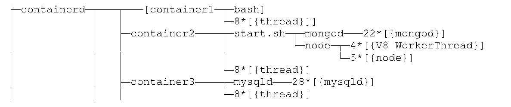
コンテナ内プロセスの構造例
6.3 Implementation Phase
6.3 実装フェーズ
After the container technology has been designed, the next step is to implement and test a prototype of the design before putting the solution into production. Be aware that container technologies do not offer the types of introspection capabilities that VM technologies do.
コンテナ技術の設計が完了した後の次の段階は、ソリューションを本番環境へ移行する前に、設計のプロトタイプを実装してテストすることである。コンテナ技術はVM技術が提供するような種類のイントロスペクション機能を提供しないことに留意する必要がある。
NIST SP 800-125 [1] cites several aspects of virtualization technologies that should be evaluated before production deployment, including authentication, connectivity and networking, app functionality, management, performance, and the security of the technology itself. In addition to those, it is important to also evaluate the container technology’s isolation capabilities. Ensure that processes within the container can access all resources they are permitted to and cannot view or access any other resources.
NIST SP 800-125 [1] では、本番環境への配備前に評価すべき仮想化技術のいくつかの側面として、認証、接続性とネットワーキング、アプリの機能、管理、パフォーマンス、および技術自体のセキュリティを挙げている。それらに加えて、コンテナ技術の分離機能を評価することも重要である。コンテナ内のプロセスが、許可されたすべてのリソースにアクセスでき、他のいかなるリソースも表示またはアクセスできないことを確実にする。
Implementation may require new security tools that are specifically focused on containers and cloud-native apps and that have visibility into their operations that traditional tools lack. Finally, deployment may also include altering the configuration of existing security controls and technologies, such as security event logging, network management, code repositories, and authentication servers both to work with containers directly and to integrate with these new container security tools.
実装には、コンテナやクラウドネイティブアプリに特化し、従来のツールにはない運用の可視性を備えた新しいセキュリティツールが必要となる場合がある。最後に、配備には、セキュリティイベントログ、ネットワーク管理、コードリポジトリ、認証サーバーなど、既存のセキュリティ統制や技術の設定を変更し、コンテナと直接連携させるとともに、これらの新しいコンテナセキュリティツールと統合することが含まれる場合もある。
When the prototype evaluation has been completed and the container technology is ready for production usage, containers should initially be used for a small number of apps. Problems that occur are likely to affect multiple apps, so it is helpful to identify these problems early on so they can be addressed before further deployment. A phased deployment also provides time for developers and IT staff (e.g., system administrators, help desk) to be trained on its usage and support.
プロトタイプの評価が完了し、コンテナ技術を本番環境で使用する準備が整ったら、初期段階では少数のアプリに対してコンテナを使用すべきである。発生する問題は複数のアプリに影響を及ぼす可能性が高いため、さらなる配備の前に対処できるよう、これらの問題を早期に特定することが有用である。段階的な配備は、開発者やITスタッフ（例：システム管理者、ヘルプデスク）がその使用方法やサポートに関するトレーニングを受けるための時間も提供する。
6.4 Operations and Maintenance Phase
6.4 運用・保守フェーズ
Operational processes that are particularly important for maintaining the security of container technologies, and thus should be performed regularly, include updating all images and distributing those updated images to containers to take the place of older images. Other security best practices, such as performing vulnerability management and updates for other supporting layers like hosts and orchestrators, are also key ongoing operational tasks. Container security and monitoring tools should similarly be integrated with existing security information and event management (SIEM) tools to ensure container-related events flow through the same tools and processes used to provide security throughout the rest of the environment.
コンテナ技術のセキュリティを維持する上で特に重要であり、したがって定期的に実施すべき運用プロセスには、すべてのイメージを更新し、古いイメージを置き換えるためにそれらの更新されたイメージをコンテナに配布することが含まれる。ホストやオーケストレーターなどの他のサポート層に対する脆弱性管理や更新の実施といった、その他のセキュリティベストプラクティスも、重要な継続的運用のタスクである。同様に、コンテナ関連のイベントが環境の他の部分全体にセキュリティを提供するために使用されているのと同じツールやプロセスを経由して流れるように、コンテナのセキュリティおよび監視ツールを既存のセキュリティ情報およびイベント管理（SIEM）ツールと統合すべきである。
If and when security incidents occur within a containerized environment, organizations should be prepared to respond with processes and tools that are optimized for the unique aspects of containers. The core guidance outlined in NIST SP 800-61, Computer Security Incident Handling Guide [28], is very much applicable for containerized environments as well. However, organizations adopting containers should ensure they enhance their responses for some of the unique aspects of container security.
コンテナ化された環境内でセキュリティインシデントが発生した場合、組織はコンテナ特有の側面に最適化されたプロセスやツールを用いて対応できるように準備しておくべきである。NIST SP 800-61, Computer Security Incident Handling Guide [28] で概説されている中核的なガイダンスは、コンテナ化された環境にも大いに適用可能である。しかし、コンテナを採用する組織は、コンテナセキュリティ特有のいくつかの側面に対して自らの対応を確実に強化すべきである。
•Because containerized apps may be run by a different team than the traditional operations team, organizations should ensure that whatever teams are responsible for container operations are brought into the incident response plan and understand their role in it.
•コンテナ化されたアプリは従来の運用チームとは異なるチームによって運用される場合があるため、組織は、コンテナ運用を担当するあらゆるチームがインシデント対応計画に確実に組み込まれ、その中での自らの役割を理解しているようにすべきである。
•As discussed throughout this document, the ephemeral and automated nature of container management may not be aligned with the asset management policies and tools an organization has traditionally used. Incident response teams must be able to know the roles, owners, and sensitivity levels of containers, and be able to integrate this data into their process.
•本書全体を通じて述べているように、コンテナ管理の一過性かつ自動化された性質は、組織が従来使用してきた資産管理ポリシーやツールと整合しない場合がある。インシデント対応チームは、コンテナの役割、所有者、機密度レベルを把握でき、このデータを自らのプロセスに統合できなければならない。
•• Clear procedures should be defined to respond to container related incidents. For example, if a particular image is being exploited, but that image is in use across hundreds of containers, the response team may need to shut down all of these containers to stop the attack. While single vulnerabilities have long been able to cause problems across many systems, with containers, the response may require rebuilding and redeploying a new image widely, rather than installing a patch to existing systems. This change in response may involve different teams and approvals and should be understood and practiced ahead of time.
•• コンテナ関連のインシデントに対応するための明確な手順を定義しておくべきである。例えば、特定のイメージが悪用されており、そのイメージが何百ものコンテナで使用されている場合、対応チームは攻撃を止めるためにこれらすべてのコンテナを停止する必要があるかもしれない。単一の脆弱性が多数のシステムにわたって問題を引き起こすことは以前からあり得たが、コンテナの場合、既存のシステムにパッチを適用するのではなく、新しいイメージを再構築して広範囲に再デプロイすることが対応として必要になる場合がある。対応におけるこの変化には、異なるチームや承認が関与する可能性があり、事前に理解し、実践しておくべきである。
•As discussed previously, logging and other forensic data may be stored differently in a containerized environment. Incident response teams should be familiar with the different tools and techniques required to gather data and have documented processes specifically for these environments.
•前述のとおり、コンテナ化された環境では、ロギングやその他のフォレンジックデータが異なる方法で保存される場合がある。インシデント対応チームは、データの収集に必要なさまざまなツールや手法に精通しているべきであり、これらの環境に特化した文書化されたプロセスを整備しておく必要がある。
6.5 Disposition Phase
6.5 廃棄フェーズ
The ability for containers to be deployed and destroyed automatically based on the needs of an app allows for highly efficient systems but can also introduce some challenges for records retention, forensic, and event data requirements. Organizations should make sure that appropriate mechanisms are in place to satisfy their data retention policies. Examples of issues that should be addressed are how containers and images should be destroyed, what data should be extracted from a container before disposal and how that data extraction should be performed, how cryptographic keys used by a container should be revoked or deleted, etc.
アプリのニーズに基づいてコンテナを自動的にデプロイおよび破棄できる機能は、非常に効率的なシステムを可能にする一方で、記録保持、フォレンジック、およびイベントデータの要件にいくつかの課題をもたらす可能性もある。組織は、自らのデータ保持ポリシーを満たすための適切なメカニズムが整備されていることを確認すべきである。対処すべき課題の例としては、コンテナやイメージをどのように破棄すべきか、廃棄前にコンテナからどのようなデータを抽出すべきか、およびそのデータ抽出をどのように実行すべきか、コンテナで使用されていた暗号鍵をどのように失効または削除すべきか、などが挙げられる。
Data stores and media that support the containerized environment should be included in any disposal plans developed by the organization.
コンテナ化された環境をサポートするデータストアおよびメディアは、組織が策定するあらゆる廃棄計画に含めるべきである。
7 Conclusion
7 結論
未レビュー訳Containers represent a transformational change in the way apps are built and run. They do not necessitate dramatically new security best practices; on the contrary, most important aspects of container security are refinements of well-established techniques and principles. This document has updated and expanded general security recommendations to take the risks particular to container technologies into account.
コンテナは、アプリの構築および実行方法における変革的な変化をもたらすものである。劇的に新しいセキュリティのベストプラクティスを必要とするわけではない。それどころか、コンテナセキュリティの最も重要な側面の大部分は、十分に確立された技術と原則の改良である。本書では、コンテナ技術に特有のリスクを考慮に入れるため、一般的なセキュリティ推奨事項を更新および拡張した。
This document has already discussed some of the differences between securing containers and securing the same apps in VMs. It is useful to summarize the guidance in this document around those points.
本書では、コンテナの保護とVMにおける同一アプリの保護との相違点の一部についてすでに説明した。それらの点を巡る本書のガイダンスを要約することは有用である。
In container environments there are many more entities, so security processes and tools must be able to scale accordingly. Scale does not just mean the total number of objects supported in a database, but also how effectively and autonomously policy can be managed. Many organizations struggle with the burden of managing security across hundreds of VMs. As container-centric architectures become the norm and these organizations are responsible for thousands or tens of thousands of containers, their security practices should emphasize automation and efficiency to keep up.
コンテナ環境にははるかに多くのエンティティが存在するため、セキュリティプロセスとツールはそれに応じてスケールできなければならない。スケールとは、単にデータベース内でサポートされるオブジェクトの総数を意味するだけでなく、ポリシーをいかに効果的かつ自律的に管理できるかも意味している。多くの組織は、数百のVMにわたるセキュリティ管理の負担に苦慮している。コンテナ中心のアーキテクチャが一般的になり、これらの組織が数千または数万のコンテナに責任を負うようになるにつれて、遅れを取らないようにするため、そのセキュリティ実践においては自動化と効率性を重視すべきである。
With containers there is a much higher rate of change, moving from updating an app a few times a year to a few times a week or even a day. What used to be acceptable to do manually no longer is. Automation is not just important to deal with the net number of entities, but also with how frequently those entities change. Being able to centrally express policy and have software manage enforcement of it across the environment is vital. Organizations that adopt containers should be prepared to manage this frequency of change. This may require fundamentally new operational practices and organizational evolution.
コンテナでは変更の頻度がはるかに高く、アプリの更新は年に数回から、週に数回、あるいは1日に数回へと移行する。かつて手動で行うことが許容されていた作業は、もはや許容されない。自動化は、エンティティの純粋な数に対処するためだけでなく、それらのエンティティがどれほど頻繁に変更されるかに対処するためにも重要である。ポリシーを一元的に表現し、環境全体でその適用をソフトウェアに管理させることが不可欠である。コンテナを採用する組織は、この変更頻度を管理できるよう準備しておくべきである。これには、根本的に新しい運用プラクティスや組織的な進化が必要になる場合がある。
The use of containers shifts much of the responsibility for security to developers, so organizations should ensure their developers have all the information, skills, and tools they need to make sound decisions. Also, security teams should be enabled to actively enforce quality throughout the development cycle. Organizations that are successful at this transition gain security benefit in being able to respond to vulnerabilities faster and with less operational burden than ever before.
コンテナの使用によってセキュリティに関する責任の多くが開発者に移行するため、組織は開発者が適切な判断を下すために必要なすべての情報、スキル、およびツールを確実に備えているようにすべきである。また、セキュリティチームが開発サイクル全体を通じて品質を積極的に徹底できるようにする必要がある。この移行に成功した組織は、これまで以上に迅速かつ少ない運用負担で脆弱性に対応できるようになるというセキュリティ上のメリットを享受できる。
Security must be as portable as the containers themselves, so organizations should adopt techniques and tools that are open and work across platforms and environments. Many organizations will see developers build in one environment, test in another, and deploy in a third, so having consistency in assessment and enforcement across these is key. Portability is also not just environmental but also temporal. Continuous integration and deployment practices erode the traditional walls between phases of the development and deployment cycle, so organizations need to ensure consistent, automated security practices across creation of the image, storage of the image in registries, and running of the images in containers.
セキュリティはコンテナ自体と同等にポータブルでなければならないため、組織はオープンであり、プラットフォームや環境を越えて機能する技術やツールを採用すべきである。多くの組織では、開発者が一つの環境でビルドし、別の環境でテストし、第三の環境でデプロイするという状況が見られるため、これらにわたる評価と適用の整合性を確保することが重要である。ポータビリティは環境的なものだけでなく、時間的なものでもある。継続的インテグレーションおよびデプロイメントの実践は、開発およびデプロイメントサイクルの各フェーズ間の従来の障壁を取り払うため、組織はイメージの作成、レジストリでのイメージの保管、およびコンテナでのイメージの実行にわたって、一貫した自動化されたセキュリティプラクティスを確保する必要がある。
Organizations that navigate these changes can begin to leverage containers to actually improve their overall security. The immutability and declarative nature of containers enables organizations to begin realizing the vision of more automated, app-centric security that requires minimal manual involvement and that updates itself as the apps change. Containers are an enabling capability in organizations moving from reactive, manual, high-cost security models to those that enable better scale and efficiency, thus lowering risk.
これらの変化に対応する組織は、コンテナを活用して全体的なセキュリティを実際に向上させ始めることができる。コンテナの不変性と宣言的な性質により、組織は、人手による介入を最小限に抑え、アプリの変更に伴って自動的に更新される、より自動化されたアプリ中心のセキュリティというビジョンを実現し始めることが可能になる。コンテナは、事後対応型で手作業による高コストなセキュリティモデルから、より優れた拡張性と効率性を実現してリスクを低減するモデルへと組織が移行するにあたって、それを可能にする機能となる。
未レビュー訳Appendix A—NIST Resources for Securing Non-Core Components
付録A—非コアコンポーネントを保護するためのNISTリソース
未レビュー訳This appendix lists NIST resources for securing non-core container technology components, including developer systems, testing and accreditation systems, administrator systems, and host hardware and virtual machine managers. Many more resources are available from other organizations.
本付録では、開発者システム、テストおよび認可システム、管理者システム、ホストハードウェアおよび仮想マシンマネージャーを含む、コンテナ技術の非コアコンポーネントを保護するためのNISTリソースを一覧に示す。他の組織からも、さらに多くのリソースが利用可能である。
Table 1: NIST Resources for Securing Non-Core Components
表1：非コアコンポーネントを保護するためのNISTリソース
未レビュー訳| Resource Name and URI | Applicability |
| SP 800-40 Revision 3, Guide to Enterprise Patch Management Technologies https://doi.org/10.6028/NIST.SP.800-40r3 | All IT products and systems |
| SP 800-46 Revision 2, Guide to Enterprise Telework, Remote Access, and Bring Your Own Device (BYOD) Security https://doi.org/10.6028/NIST.SP.800-46r2 | Client operating systems, client apps |
| SP 800-53 Revision 4, Security and Privacy Controls for Federal Information Systems and Organizations https://doi.org/10.6028/NIST.SP.800-53r4 | All IT products and systems |
| SP 800-70 Revision 3, National Checklist Program for IT Products: Guidelines for Checklist Users and Developers https://doi.org/10.6028/NIST.SP.800-70r3 | Server operating systems, client operating systems, server apps, client apps |
| SP 800-83 Revision 1, Guide to Malware Incident Prevention and Handling for Desktops and Laptops https://doi.org/10.6028/NIST.SP.800-83r1 | Client operating systems, client apps |
| SP 800-123, Guide to General Server Security https://doi.org/10.6028/NIST.SP.800-123 | Servers |
| SP 800-124 Revision 1, Guidelines for Managing the Security of Mobile Devices in the Enterprise https://doi.org/10.6028/NIST.SP.800-124r1 | Mobile devices |
| SP 800-125, Guide to Security for Full Virtualization Technologies https://doi.org/10.6028/NIST.SP.800-125 | Hypervisors and virtual machines |
| SP 800-125A, Security Recommendations for Hypervisor Deployment (Second Draft) https://csrc.nist.gov/publications/detail/sp/800-125A/draft | Hypervisors and virtual machines |
| SP 800-125B, Secure Virtual Network Configuration for Virtual Machine (VM) Protection https://doi.org/10.6028/NIST.SP.800-125B | Hypervisors and virtual machines |
| SP 800-147, BIOS Protection Guidelines https://doi.org/10.6028/NIST.SP.800-147 | Client hardware |
| SP 800-155, BIOS Integrity Measurement Guidelines https://csrc.nist.gov/publications/detail/sp/800-155/draft | Client hardware |
| SP 800-164, Guidelines on Hardware-Rooted Security in Mobile Devices https://csrc.nist.gov/publications/detail/sp/800-164/draft | Mobile devices |
原本PDFの抜粋画像
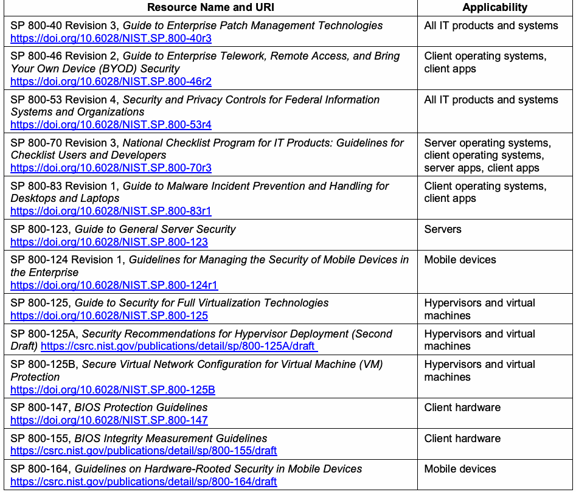
| リソース名およびURI | 適用対象 |
| SP 800-40 Revision 3, Guide to Enterprise Patch Management Technologies https://doi.org/10.6028/NIST.SP.800-40r3 | すべてのIT製品およびシステム |
| SP 800-46 Revision 2, Guide to Enterprise Telework, Remote Access, and Bring Your Own Device (BYOD) Security https://doi.org/10.6028/NIST.SP.800-46r2 | クライアントオペレーティングシステム、クライアントアプリ |
| SP 800-53 Revision 4, Security and Privacy Controls for Federal Information Systems and Organizations https://doi.org/10.6028/NIST.SP.800-53r4 | すべてのIT製品およびシステム |
| SP 800-70 Revision 3, National Checklist Program for IT Products: Guidelines for Checklist Users and Developers https://doi.org/10.6028/NIST.SP.800-70r3 | サーバーオペレーティングシステム、クライアントオペレーティングシステム、サーバーアプリ、クライアントアプリ |
| SP 800-83 Revision 1, Guide to Malware Incident Prevention and Handling for Desktops and Laptops https://doi.org/10.6028/NIST.SP.800-83r1 | クライアントオペレーティングシステム、クライアントアプリ |
| SP 800-123, Guide to General Server Security https://doi.org/10.6028/NIST.SP.800-123 | サーバー |
| SP 800-124 Revision 1, Guidelines for Managing the Security of Mobile Devices in the Enterprise https://doi.org/10.6028/NIST.SP.800-124r1 | モバイルデバイス |
| SP 800-125, Guide to Security for Full Virtualization Technologies https://doi.org/10.6028/NIST.SP.800-125 | ハイパーバイザーおよび仮想マシン |
| SP 800-125A, Security Recommendations for Hypervisor Deployment (Second Draft) https://csrc.nist.gov/publications/detail/sp/800-125A/draft | ハイパーバイザーおよび仮想マシン |
| SP 800-125B, Secure Virtual Network Configuration for Virtual Machine (VM) Protection https://doi.org/10.6028/NIST.SP.800-125B | ハイパーバイザーおよび仮想マシン |
| SP 800-147, BIOS Protection Guidelines https://doi.org/10.6028/NIST.SP.800-147 | クライアントハードウェア |
| SP 800-155, BIOS Integrity Measurement Guidelines https://csrc.nist.gov/publications/detail/sp/800-155/draft | クライアントハードウェア |
| SP 800-164, Guidelines on Hardware-Rooted Security in Mobile Devices https://csrc.nist.gov/publications/detail/sp/800-164/draft | モバイルデバイス |
原本PDFの抜粋画像
The security controls from NIST SP 800-53 Revision 4 [29] that are most important for container technologies are listed in Table 2.
コンテナ技術にとって最も重要であるNIST SP 800-53 Revision 4 [29]のセキュリティ管理策を表2に示す。
Table 2: Security Controls from NIST SP 800-53 for Container Technology Security
表2：コンテナ技術セキュリティのためのNIST SP 800-53セキュリティ管理策
未レビュー訳| NIST SP 800-53 Control | Related Controls | References |
| AC-2, Account Management | AC-3, AC-4, AC-5, AC-6, AC-10, AC-17, AC-19, AC-20, AU-9, IA-2, IA-4, IA-5, IA-8, CM-5, CM-6, CM-11, MA-3, MA-4, MA-5, PL-4, SC-13 | |
| AC-3, Access Enforcement | AC-2, AC-4, AC-5, AC-6, AC-16, AC-17, AC-18, AC-19, AC-20, AC-21, AC- 22, AU-9, CM-5, CM-6, CM-11, MA-3, MA-4, MA-5, PE-3 | |
| AC-4, Information Flow Enforcement | AC-3, AC-17, AC-19, AC-21, CM-6, CM-7, SA-8, SC-2, SC-5, SC-7, SC-18 | |
| AC-6, Least Privilege | AC-2, AC-3, AC-5, CM-6, CM-7, PL-2 | |
| AC-17, Remote Access | AC-2, AC-3, AC-18, AC-19, AC-20, CA-3, CA-7, CM-8, IA-2, IA-3, IA-8, MA-4, PE-17, PL-4, SC-10, SI-4 | NIST SPs 800-46, 800-77, 800-113, 800-114, 800- 121 |
| AT-3, Role-Based Security Training | AT-2, AT-4, PL-4, PS-7, SA-3, SA-12, SA-16 | C.F.R. Part 5 Subpart C (5C.F.R.930.301); NIST SPs 800-16, 800- 50 |
| AU-2, Audit Events | AC-6, AC-17, AU-3, AU-12, MA-4, MP-2, MP-4, SI-4 | NIST SP 800-92; https://idmanagement.gov/ |
| AU-5, Response to Audit Processing Failures | AU-4, SI-12 | |
| AU-6, Audit Review, Analysis, and Reporting | AC-2, AC-3, AC-6, AC-17, AT-3, AU-7, AU-16, CA-7, CM- 5, CM-10, CM-11, IA-3, IA-5, IR-5, IR-6, MA-4, MP-4, PE- 3, PE-6, PE-14, PE-16, RA-5, SC-7, SC-18, SC-19, SI-3, SI-4, SI-7 | |
| AU-8, Time Stamps | AU-3, AU-12 | |
| AU-9, Protection of Audit Information | AC-3, AC-6, MP-2, MP-4, PE-2, PE-3, PE-6 | |
| AU-12, Audit Generation | AC-3, AU-2, AU-3, AU-6, AU-7 | |
| CA-9, Internal System Connections | AC-3, AC-4, AC-18, AC-19, AU-2, AU-12, CA- 7, CM-2, IA-3, SC-7, SI-4 | |
| CM-2, Baseline Configuration | CM-3, CM-6, CM-8, CM-9, SA-10, PM-5, PM-7 | NIST SP 800-128 |
| CM-3, Configuration Change Control | CA-7, CM-2, CM-4, CM-5, CM-6, CM-9, SA-10, SI- 2, SI- 12 | NIST SP 800-128 |
| CM-4, Security Impact Analysis | CA-2, CA-7, CM-3, CM-9, SA-4, SA-5, SA-10, SI-2 | NIST SP 800-128 |
| CM-5, Access Restrictions for Change | AC-3, AC-6, PE-3 | |
| CM-6, Configuration Settings | AC-19, CM-2, CM-3, CM-7, SI-4 | OMB Memoranda 07-11, 07-18, 08-22; NIST SPs 800-70, 800-128; https://nvd.nist.gov; https://checklists.nist.gov; https://www.nsa.gov |
原本PDFの抜粋画像
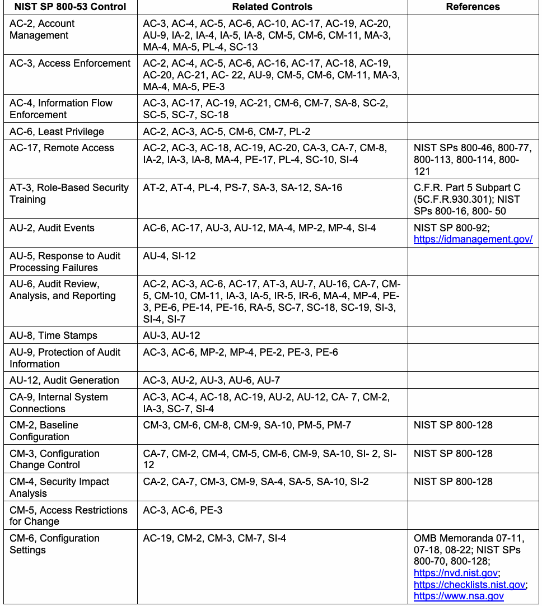
| NIST SP 800-53 管理策 | 関連する管理策 | 参考文献 |
| AC-2、アカウント管理 | AC-3, AC-4, AC-5, AC-6, AC-10, AC-17, AC-19, AC-20, AU-9, IA-2, IA-4, IA-5, IA-8, CM-5, CM-6, CM-11, MA-3, MA-4, MA-5, PL-4, SC-13 | |
| AC-3、アクセス強制 | AC-2, AC-4, AC-5, AC-6, AC-16, AC-17, AC-18, AC-19, AC-20, AC-21, AC- 22, AU-9, CM-5, CM-6, CM-11, MA-3, MA-4, MA-5, PE-3 | |
| AC-4、情報フローの強制 | AC-3, AC-17, AC-19, AC-21, CM-6, CM-7, SA-8, SC-2, SC-5, SC-7, SC-18 | |
| AC-6、最小特権 | AC-2, AC-3, AC-5, CM-6, CM-7, PL-2 | |
| AC-17、リモートアクセス | AC-2, AC-3, AC-18, AC-19, AC-20, CA-3, CA-7, CM-8, IA-2, IA-3, IA-8, MA-4, PE-17, PL-4, SC-10, SI-4 | NIST SPs 800-46, 800-77, 800-113, 800-114, 800- 121 |
| AT-3、役割ベースのセキュリティトレーニング | AT-2, AT-4, PL-4, PS-7, SA-3, SA-12, SA-16 | C.F.R. Part 5 Subpart C (5C.F.R.930.301); NIST SPs 800-16, 800- 50 |
| AU-2、監査イベント | AC-6, AC-17, AU-3, AU-12, MA-4, MP-2, MP-4, SI-4 | NIST SP 800-92; https://idmanagement.gov/ |
| AU-5、監査処理の失敗への対応 | AU-4, SI-12 | |
| AU-6、監査のレビュー、分析、および報告 | AC-2, AC-3, AC-6, AC-17, AT-3, AU-7, AU-16, CA-7, CM- 5, CM-10, CM-11, IA-3, IA-5, IR-5, IR-6, MA-4, MP-4, PE- 3, PE-6, PE-14, PE-16, RA-5, SC-7, SC-18, SC-19, SI-3, SI-4, SI-7 | |
| AU-8、タイムスタンプ | AU-3, AU-12 | |
| AU-9、監査情報の保護 | AC-3, AC-6, MP-2, MP-4, PE-2, PE-3, PE-6 | |
| AU-12、監査生成 | AC-3, AU-2, AU-3, AU-6, AU-7 | |
| CA-9、内部システム接続 | AC-3, AC-4, AC-18, AC-19, AU-2, AU-12, CA- 7, CM-2, IA-3, SC-7, SI-4 | |
| CM-2、ベースライン構成 | CM-3, CM-6, CM-8, CM-9, SA-10, PM-5, PM-7 | NIST SP 800-128 |
| CM-3、構成変更制御 | CA-7, CM-2, CM-4, CM-5, CM-6, CM-9, SA-10, SI- 2, SI- 12 | NIST SP 800-128 |
| CM-4、セキュリティ影響分析 | CA-2, CA-7, CM-3, CM-9, SA-4, SA-5, SA-10, SI-2 | NIST SP 800-128 |
| CM-5、変更に対するアクセス制限 | AC-3, AC-6, PE-3 | |
| CM-6、構成設定 | AC-19, CM-2, CM-3, CM-7, SI-4 | OMB Memoranda 07-11, 07-18, 08-22; NIST SPs 800-70, 800-128; https://nvd.nist.gov; https://checklists.nist.gov; https://www.nsa.gov |
| NIST SP 800-53 Control | Related Controls | References |
| CM-7, Least Functionality | AC-6, CM-2, RA-5, SA-5, SC-7 | DoD Instruction 8551.01 |
| CM-9, Configuration Management Plan | CM-2, CM-3, CM-4, CM-5, CM-8, SA-10 | NIST SP 800-128 |
| CP-2, Contingency Plan | AC-14, CP-6, CP-7, CP-8, CP-9, CP-10, IR-4, IR-8, MP- 2, MP-4, MP-5, PM-8, PM-11 | Federal Continuity Directive 1; NIST SP 800- 34 |
| CP-9, Information System Backup | CP-2, CP- 6, MP-4, MP-5, SC-13 | NIST SP 800-34 |
| CP-10, Information System Recovery and Reconstitution | CA-2, CA-6, CA-7, CP-2, CP-6, CP-7, CP-9, SC-24 | Federal Continuity Directive 1; NIST SP 800- 34 |
| IA-2, Identification and Authentication (Organizational Users) | AC-2, AC-3, AC-14, AC-17, AC-18, IA-4, IA-5, IA-8 | HSPD-12; OMB Memoranda 04-04, 06-16, 11-11; FIPS 201; NIST SPs 800-63, 800-73, 800- 76, 800-78; FICAM Roadmap and Implementation Guidance; https://idmanagement.gov/ |
| IA-4, Identifier Management | AC-2, IA-2, IA-3, IA-5, IA-8, SC-37 | FIPS 201; NIST SPs 800- 73, 800-76, 800-78 |
| IA-5, Authenticator Management | AC-2, AC-3, AC-6, CM-6, IA-2, IA-4, IA-8, PL-4, PS-5, PS-6, SC-12, SC-13, SC-17, SC-28 | OMB Memoranda 04-04, 11-11; FIPS 201; NIST SPs 800-63, 800-73, 800- 76, 800-78; FICAM Roadmap and Implementation Guidance; https://idmanagement.gov/ |
| IR-1, Incident Response Policy and Procedures | PM-9 | NIST SPs 800-12, 800-61, 800-83, 800-100 |
| IR-4, Incident Handling | AU-6, CM-6, CP-2, CP-4, IR-2, IR-3, IR-8, PE-6, SC-5, SC-7, SI-3, SI-4, SI-7 | EO 13587; NIST SP 800- 61 |
| MA-2, Controlled Maintenance | CM-3, CM-4, MA-4, MP-6, PE-16, SA-12, SI-2 | |
| MA-4, Nonlocal Maintenance | AC- 2, AC-3, AC-6, AC-17, AU-2, AU-3, IA-2, IA-4, IA-5, IA-8, MA-2, MA-5, MP-6, PL-2, SC-7, SC-10, SC-17 | FIPS 140-2, 197, 201; NIST SPs 800-63, 800-88; CNSS Policy 15 |
| PL-2, System Security Plan | AC-2, AC-6, AC-14, AC-17, AC-20, CA-2, CA-3, CA-7, CM-9, CP-2, IR-8, MA-4, MA-5, MP-2, MP-4, MP-5, PL-7, PM-1, PM-7, PM-8, PM-9, PM-11, SA-5, SA-17 | NIST SP 800-18 |
| PL-4, Rules of Behavior | AC-2, AC-6, AC-8, AC-9, AC-17, AC-18, AC-19, AC-20, AT-2, AT-3, CM-11, IA-2, IA-4, IA-5, MP-7, PS-6, PS-8, SA-5 | NIST SP 800-18 |
| RA-2, Security Categorization | CM-8, MP-4, RA-3, SC-7 | FIPS 199; NIST SPs 800- 30, 800-39, 800-60 |
| RA-3, Risk Assessment | RA-2, PM-9 | OMB Memorandum 04- 04; NIST SPs 800-30, 800-39; https://idmanagement.gov/ |
| SA-10, Developer Configuration Management | CM-3, CM-4, CM-9, SA-12, SI-2 | NIST SP 800-128 |
原本PDFの抜粋画像
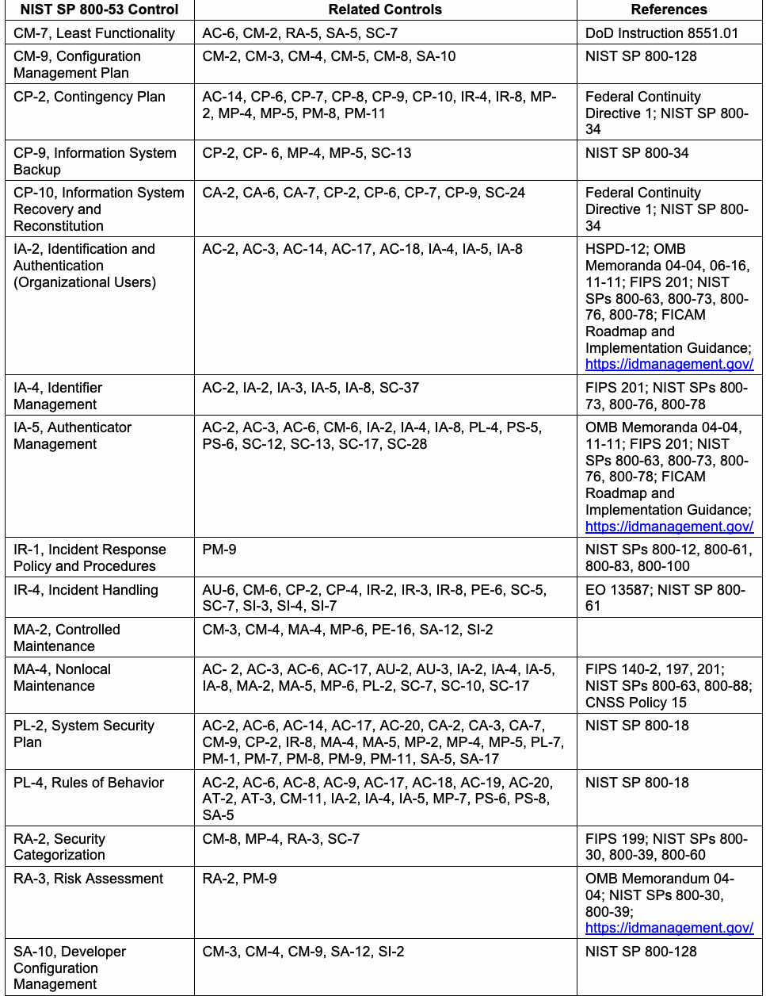
| NIST SP 800-53 管理策 | 関連する管理策 | 参考文献 |
| CM-7、最小機能性 | AC-6, CM-2, RA-5, SA-5, SC-7 | DoD Instruction 8551.01 |
| CM-9、構成管理計画 | CM-2, CM-3, CM-4, CM-5, CM-8, SA-10 | NIST SP 800-128 |
| CP-2、コンティンジェンシー計画 | AC-14, CP-6, CP-7, CP-8, CP-9, CP-10, IR-4, IR-8, MP- 2, MP-4, MP-5, PM-8, PM-11 | Federal Continuity Directive 1; NIST SP 800- 34 |
| CP-9、情報システムのバックアップ | CP-2, CP- 6, MP-4, MP-5, SC-13 | NIST SP 800-34 |
| CP-10、情報システムの復旧および再構成 | CA-2, CA-6, CA-7, CP-2, CP-6, CP-7, CP-9, SC-24 | Federal Continuity Directive 1; NIST SP 800- 34 |
| IA-2、識別および認証（組織のユーザー） | AC-2, AC-3, AC-14, AC-17, AC-18, IA-4, IA-5, IA-8 | HSPD-12; OMB Memoranda 04-04, 06-16, 11-11; FIPS 201; NIST SPs 800-63, 800-73, 800- 76, 800-78; FICAM Roadmap and Implementation Guidance; https://idmanagement.gov/ |
| IA-4、識別子管理 | AC-2, IA-2, IA-3, IA-5, IA-8, SC-37 | FIPS 201; NIST SPs 800- 73, 800-76, 800-78 |
| IA-5、認証子管理 | AC-2, AC-3, AC-6, CM-6, IA-2, IA-4, IA-8, PL-4, PS-5, PS-6, SC-12, SC-13, SC-17, SC-28 | OMB Memoranda 04-04, 11-11; FIPS 201; NIST SPs 800-63, 800-73, 800- 76, 800-78; FICAM Roadmap and Implementation Guidance; https://idmanagement.gov/ |
| IR-1、インシデント対応ポリシーおよび手順 | PM-9 | NIST SPs 800-12, 800-61, 800-83, 800-100 |
| IR-4、インシデント処理 | AU-6, CM-6, CP-2, CP-4, IR-2, IR-3, IR-8, PE-6, SC-5, SC-7, SI-3, SI-4, SI-7 | EO 13587; NIST SP 800- 61 |
| MA-2、管理された保守 | CM-3, CM-4, MA-4, MP-6, PE-16, SA-12, SI-2 | |
| MA-4、非ローカル保守 | AC- 2, AC-3, AC-6, AC-17, AU-2, AU-3, IA-2, IA-4, IA-5, IA-8, MA-2, MA-5, MP-6, PL-2, SC-7, SC-10, SC-17 | FIPS 140-2, 197, 201; NIST SPs 800-63, 800-88; CNSS Policy 15 |
| PL-2、システムセキュリティ計画 | AC-2, AC-6, AC-14, AC-17, AC-20, CA-2, CA-3, CA-7, CM-9, CP-2, IR-8, MA-4, MA-5, MP-2, MP-4, MP-5, PL-7, PM-1, PM-7, PM-8, PM-9, PM-11, SA-5, SA-17 | NIST SP 800-18 |
| PL-4、行動規範 | AC-2, AC-6, AC-8, AC-9, AC-17, AC-18, AC-19, AC-20, AT-2, AT-3, CM-11, IA-2, IA-4, IA-5, MP-7, PS-6, PS-8, SA-5 | NIST SP 800-18 |
| RA-2、セキュリティカテゴリ分類 | CM-8, MP-4, RA-3, SC-7 | FIPS 199; NIST SPs 800- 30, 800-39, 800-60 |
| RA-3、リスクアセスメント | RA-2, PM-9 | OMB Memorandum 04- 04; NIST SPs 800-30, 800-39; https://idmanagement.gov/ |
| SA-10、開発者の構成管理 | CM-3, CM-4, CM-9, SA-12, SI-2 | NIST SP 800-128 |
| NIST SP 800-53 Control | Related Controls | References |
| SA-11, Developer Security Testing and Evaluation | CA-2, CM-4, SA-3, SA-4, SA-5, SI-2 | ISO/IEC 15408; NIST SP 800-53A; https://nvd.nist.gov; http://cwe.mitre.org; http://cve.mitre.org; http://capec.mitre.org |
| SA-15, Development Process, Standards, and Tools | SA-3, SA-8 | |
| SA-19, Component Authenticity | PE-3, SA-12, SI-7 | |
| SC-2, Application Partitioning | SA-4, SA-8, SC-3 | |
| SC-4, Information in Shared Resources | AC-3, AC-4, MP-6 | |
| SC-6, Resource Availability | ||
| SC-8, Transmission Confidentiality and Integrity | AC-17, PE-4 | FIPS 140-2, 197; NIST SPs 800-52, 800-77, 800- 81, 800-113; CNSS Policy 15; NSTISSI No. 7003 |
| SI-2, Flaw Remediation | CA-2, CA-7, CM-3, CM-5, CM-8, MA-2, IR-4, RA-5, SA- 10, SA-11, SI-11 | NIST SPs 800-40, 800- 128 |
| SI-4, Information System Monitoring | AC-3, AC-4, AC-8, AC-17, AU-2, AU-6, AU-7, AU-9, AU- 12, CA-7, IR-4, PE-3, RA-5, SC-7, SC-26, SC-35, SI-3, SI-7 | NIST SPs 800-61, 800-83, 800-92, 800-137 |
| SI-7, Software, Firmware, and Information Integrity | SA-12, SC-8, SC-13, SI-3 | NIST SPs 800-147, 800- 155 |
原本PDFの抜粋画像
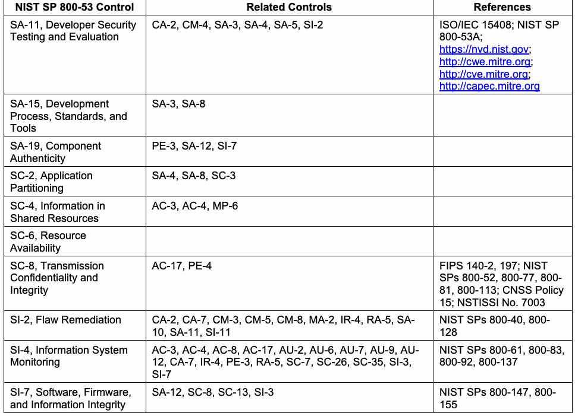
| NIST SP 800-53 管理策 | 関連する管理策 | 参考文献 |
| SA-11、開発者のセキュリティテストおよび評価 | CA-2, CM-4, SA-3, SA-4, SA-5, SI-2 | ISO/IEC 15408; NIST SP 800-53A; https://nvd.nist.gov; http://cwe.mitre.org; http://cve.mitre.org; http://capec.mitre.org |
| SA-15、開発プロセス、標準、およびツール | SA-3, SA-8 | |
| SA-19、コンポーネントの真正性 | PE-3, SA-12, SI-7 | |
| SC-2、アプリケーションのパーティショニング | SA-4, SA-8, SC-3 | |
| SC-4、共有リソース内の情報 | AC-3, AC-4, MP-6 | |
| SC-6、リソースの可用性 | ||
| SC-8、伝送の機密性と完全性 | AC-17, PE-4 | FIPS 140-2, 197, 201; NIST SPs 800-52, 800-77, 800- 81, 800-113; CNSS Policy 15; NSTISSI No. 7003 |
| SI-2、欠陥の修正 | CA-2, CA-7, CM-3, CM-5, CM-8, MA-2, IR-4, RA-5, SA- 10, SA-11, SI-11 | NIST SPs 800-40, 800- 128 |
| SI-4、情報システムの監視 | AC-3, AC-4, AC-8, AC-17, AU-2, AU-6, AU-7, AU-9, AU- 12, CA-7, IR-4, PE-3, RA-5, SC-7, SC-26, SC-35, SI-3, SI-7 | NIST SPs 800-61, 800-83, 800-92, 800-137 |
| SI-7、ソフトウェア、ファームウェア、および情報の完全性 | SA-12, SC-8, SC-13, SI-3 | NIST SPs 800-147, 800- 155 |
The list below details the NIST Cybersecurity Framework [30] subcategories that are most important for container technology security.
以下のリストは、コンテナ技術のセキュリティにとって最も重要なNISTサイバーセキュリティフレームワーク [30] のサブカテゴリを詳述している。
•Identify: Asset Management ID.AM-3: Organizational communication and data flows are mapped o ID.AM-5: Resources (e.g., hardware, devices, data, and software) are prioritized o based on their classification, criticality, and business value
•特定：資産管理 ID.AM-3: 組織の通信およびデータフローがマッピングされている o ID.AM-5: リソース（例：ハードウェア、デバイス、データ、およびソフトウェア）は優先順位付けされている o それらの分類、重要度、およびビジネス価値に基づいて
未レビュー訳•Identify: Risk Assessment ID.RA-1: Asset vulnerabilities are identified and documented o ID.RA-3: Threats, both internal and external, are identified and documented o ID.RA-4: Potential business impacts and likelihoods are identified o ID.RA-5: Threats, vulnerabilities, likelihoods, and impacts are used to determine risk o ID.RA-6: Risk responses are identified and prioritized o
•特定: リスクアセスメント ID.RA-1: 資産の脆弱性が特定され、文書化されている ID.RA-3: 内部および外部の脅威が特定され、文書化されている ID.RA-4: 潜在的なビジネスへの影響と発生可能性が特定されている ID.RA-5: リスクを判定するために、脅威、脆弱性、発生可能性、および影響が使用されている ID.RA-6: リスク対応が特定され、優先順位が付けられている
未レビュー訳•Protect: Access Control PR.AC-1: Identities and credentials are managed for authorized devices and users o PR.AC-2: Physical access to assets is managed and protected o PR.AC-3: Remote access is managed o PR.AC-4: Access permissions are managed, incorporating the principles of least o privilege and separation of duties
•防御: アクセス制御 PR.AC-1: 認可されたデバイスおよびユーザーのアイデンティティとクレデンシャルが管理されている PR.AC-2: 資産への物理アクセスが管理され、保護されている PR.AC-3: リモートアクセスが管理されている PR.AC-4: 最小特権および職務分掌の原則を取り入れて、アクセス許可が管理されている
未レビュー訳•Protect: Awareness and Training PR.AT-2: Privileged users understand roles & responsibilities o PR.AT-5: Physical and information security personnel understand roles & o responsibilities
•防御: 意識向上とトレーニング PR.AT-2: 特権ユーザーが役割と責任を理解している PR.AT-5: 物理セキュリティおよび情報セキュリティ担当者が役割と責任を理解している
未レビュー訳•Protect: Data Security PR.DS-2: Data-in-transit is protected o PR.DS-4: Adequate capacity to ensure availability is maintained o PR.DS-5: Protections against data leaks are implemented o PR.DS-6: Integrity checking mechanisms are used to verify software, firmware, and o information integrity
•防御: データセキュリティ PR.DS-2: 転送中のデータが保護されている PR.DS-4: 可用性を確保するために十分な容量が維持されている PR.DS-5: データ漏洩に対する保護対策が実施されている PR.DS-6: ソフトウェア、ファームウェア、および情報の完全性を検証するために、完全性チェックメカニズムが使用されている
未レビュー訳•Protect: Information Protection Processes and Procedures PR.IP-1: A baseline configuration of information technology/industrial control o systems is created and maintained PR.IP-3: Configuration change control processes are in place o PR.IP-6: Data is destroyed according to policy o PR.IP-9: Response plans (Incident Response and Business Continuity) and recovery o plans (Incident Recovery and Disaster Recovery) are in place and managed PR.IP-12: A vulnerability management plan is developed and implemented o
•防御: 情報保護プロセスおよび手順 PR.IP-1: 情報技術/産業制御システムのベースライン構成が作成され、維持されている PR.IP-3: 構成変更制御プロセスが整備されている PR.IP-6: ポリシーに従ってデータが破棄されている PR.IP-9: 対応計画（インシデント対応および事業継続）および復旧計画（インシデント復旧およびディザスタリカバリ）が整備され、管理されている PR.IP-12: 脆弱性管理計画が策定され、実施されている
未レビュー訳•Protect: Maintenance PR.MA-1: Maintenance and repair of organizational assets is performed and logged o in a timely manner, with approved and controlled tools PR.MA-2: Remote maintenance of organizational assets is approved, logged, ando performed in a manner that prevents unauthorized access
•防御: 保守 PR.MA-1: 組織の資産の保守および修理が、承認および制御されたツールを使用して適時に実行され、記録されている PR.MA-2: 組織の資産のリモート保守が承認され、記録され、不正アクセスを防止する方法で実行されている
未レビュー訳•Protect: Protective Technology PR.PT-1: Audit/log records are determined, documented, implemented, and reviewed o in accordance with policy PR.PT-3: Access to systems and assets is controlled, incorporating the principle of o least functionality
•防御: 保護技術 PR.PT-1: 監査/ログ記録が、ポリシーに従って決定、文書化、実装、およびレビューされている PR.PT-3: 最小機能の原則を取り入れて、システムおよび資産へのアクセスが制御されている
未レビュー訳•Detect: Anomalies and Events DE.AE-2: Detected events are analyzed to understand attack targets and methods o
•検知: 異常とイベント DE.AE-2: 攻撃の対象と手法を理解するために、検知されたイベントが分析されている
未レビュー訳•Detect: Security Continuous Monitoring DE.CM-1: The network is monitored to detect potential cybersecurity events o DE.CM-7: Monitoring for unauthorized personnel, connections, devices, and software o is performed
•検知: セキュリティの継続的モニタリング DE.CM-1: 潜在的なサイバーセキュリティイベントを検知するためにネットワークが監視されている o DE.CM-7: 不正な人員、接続、デバイス、およびソフトウェアに対するモニタリング o が実施されている
未レビュー訳•Respond: Response Planning RS.RP-1: Response plan is executed during or after an event o
•対応: 対応計画 RS.RP-1: イベントの発生中または発生後に対応計画が実行される o
未レビュー訳•Respond: Analysis RS.AN-1: Notifications from detection systems are investigated o RS.AN-3: Forensics are performed o
•対応: 分析 RS.AN-1: 検知システムからの通知が調査される o RS.AN-3: フォレンジクスが実施される o
未レビュー訳•Respond: Mitigation RS.MI-1: Incidents are contained o RS.MI-2: Incidents are mitigated o RS.MI-3: Newly identified vulnerabilities are mitigated or documented as accepted o risks
•対応: 緩和 RS.MI-1: インシデントが封じ込められる o RS.MI-2: インシデントが緩和される o RS.MI-3: 新たに特定された脆弱性が緩和されるか、受容された o リスクとして文書化される
未レビュー訳•Recover: Recovery Planning RC.RP-1: Recovery plan is executed during or after an event o
•復旧: 復旧計画 RC.RP-1: イベントの発生中または発生後に復旧計画が実行される o
未レビュー訳Table 3 lists the security controls from NIST SP 800-53 Revision 4 [29] that can be accomplished partially or completely by using container technologies. The rightmost column lists the sections of this document that map to each NIST SP 800-53 control.
表3は、コンテナ技術を使用することで部分的または完全に達成できるNIST SP 800-53 Revision 4 [29]のセキュリティ管理策を列挙している。最も右の列には、各NIST SP 800-53管理策に対応する本文書のセクションが示されている。
Table 3: NIST SP 800-53 Controls Supported by Container Technologies
表3: コンテナ技術によってサポートされるNIST SP 800-53管理策
未レビュー訳| NIST SP 800-53 Control | Container Technology Relevancy | Related Sections of This Document |
| CM-3, Configuration Change Control | Images can be used to help manage change control for apps. | 2.1, 2.2, 2.3, 2.4, 4.1 |
| SC-2, Application Partitioning | Separating user functionality from administrator functionality can be accomplished in part by using containers or other virtualization technologies so that the functionality is performed in different containers. | 2 (introduction), 2.3, 4.5.2 |
| SC-3, Security Function Isolation | Separating security functions from non-security functions can be accomplished in part by using containers or other virtualization technologies so that the functions are performed in different containers. | 2 (introduction), 2.3, 4.5.2 |
| SC-4, Information in Shared Resources | Container technologies are designed to restrict each container’s access to shared resources so that information cannot inadvertently be leaked from one container to another. | 2 (introduction), 2.2, 2.3, 4.4 |
| SC-6, Resource Availability | The maximum resources available for each container can be specified, thus protecting the availability of resources by not allowing any container to consume excessive resources. | 2.2, 2.3 |
| SC-7, Boundary Protection | Boundaries can be established and enforced between containers to restrict their communications with each other. | 2 (introduction), 2.2, 2.3, 4.4 |
| SC-39, Process Isolation | Multiple containers can run processes simultaneously on the same host, but those processes are isolated from each other. | 2 (introduction), 2.1, 2.2, 2.3, 4.4 |
| SI-7, Software, Firmware, and Information Integrity | Unauthorized changes to the contents of images can easily be detected and the altered image replaced with a known good copy. | 2.3, 4.1, 4.2 |
| SI-14, Non- Persistence | Images running within containers are replaced as needed with new image versions, so data, files, executables, and other information stored within running images is not persistent. | 2.1, 2.3, 4.1 |
原本PDFの抜粋画像
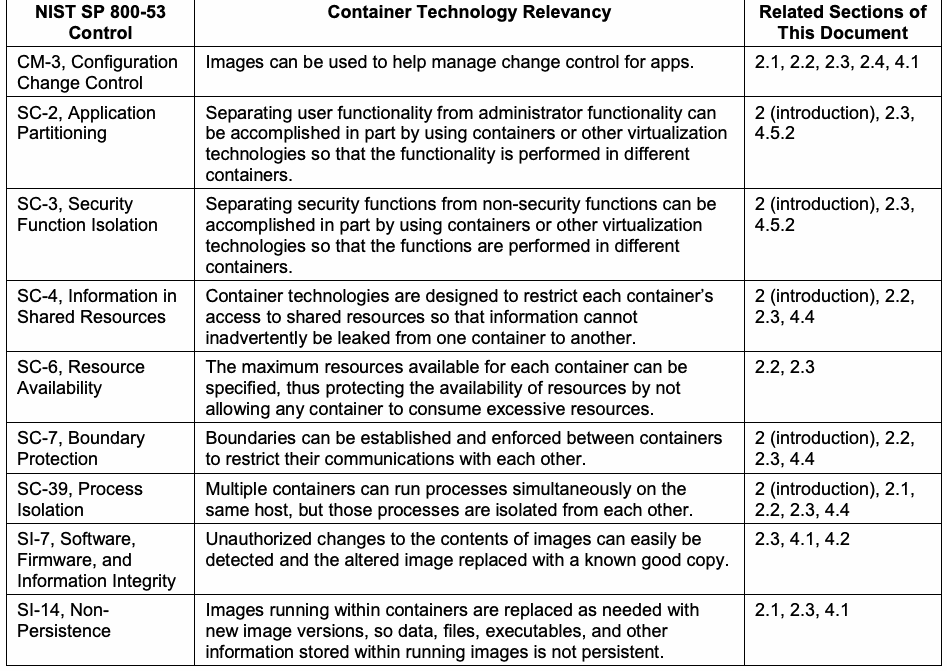
| NIST SP 800-53管理策 | コンテナ技術の関連性 | 本文書の関連セクション |
| CM-3, 構成変更管理 | イメージを使用して、アプリの変更管理を支援することができる。 | 2.1, 2.2, 2.3, 2.4, 4.1 |
| SC-2, アプリケーションのパーティショニング | ユーザー機能と管理者機能の分離は、それぞれの機能が異なるコンテナで実行されるようにコンテナまたはその他の仮想化技術を使用することによって、部分的に達成できる。 | 2 (introduction), 2.3, 4.5.2 |
| SC-3, セキュリティ機能の分離 | セキュリティ機能と非セキュリティ機能の分離は、それぞれの機能が異なるコンテナで実行されるようにコンテナまたはその他の仮想化技術を使用することによって、部分的に達成できる。 | 2 (introduction), 2.3, 4.5.2 |
| SC-4, 共有リソース内の情報 | コンテナ技術は、各コンテナによる共有リソースへのアクセスを制限し、情報があるコンテナから別のコンテナへと不用意に漏えいしないように設計されている。 | 2 (introduction), 2.2, 2.3, 4.4 |
| SC-6, リソースの可用性 | 各コンテナで利用可能な最大リソースを指定することができ、これにより、いかなるコンテナにも過剰なリソースを消費させないことでリソースの可用性を保護できる。 | 2.2, 2.3 |
| SC-7, 境界保護 | コンテナ相互間の通信を制限するために、コンテナ間に境界を設定および適用することができる。 | 2 (introduction), 2.2, 2.3, 4.4 |
| SC-39, プロセスの分離 | 同一ホスト上で複数のコンテナが同時にプロセスを実行できるが、それらのプロセスは相互に分離されている。 | 2 (introduction), 2.1, 2.2, 2.3, 4.4 |
| SI-7, ソフトウェア、ファームウェア、および情報の完全性 | イメージの内容に対する不正な変更を容易に検知でき、変更されたイメージを既知の正常なコピーと置き換えることができる。 | 2.3, 4.1, 4.2 |
| SI-14, 非永続性 | コンテナ内で実行中のイメージは必要に応じて新しいイメージバージョンに置き換えられるため、実行中のイメージ内に保存されたデータ、ファイル、実行可能ファイル、およびその他の情報は永続的ではない。 | 2.1, 2.3, 4.1 |
Similar to Table 3, Table 4 lists the NIST Cybersecurity Framework [30] subcategories that can be accomplished partially or completely by using container technologies. The rightmost column lists the sections of this document that map to each Cybersecurity Framework subcategory.
表3と同様に、表4は、コンテナ技術を使用することで部分的または完全に達成できるNISTサイバーセキュリティフレームワーク[30]のサブカテゴリを記載している。最も右の列には、サイバーセキュリティフレームワークの各サブカテゴリに対応する本書のセクションが記載されている。
Table 4: NIST Cybersecurity Framework Subcategories Supported by Container Technologies
表4: コンテナ技術によってサポートされるNISTサイバーセキュリティフレームワークのサブカテゴリ
未レビュー訳| Cybersecurity Framework Subcategory | Container Technology Relevancy | Related Sections of This Document |
| PR.DS-4: Adequate capacity to ensure availability is maintained | The maximum resources available for each container can be specified, thus protecting the availability of resources by not allowing any container to consume excessive resources. | 2.2, 2.3 |
原本PDFの抜粋画像
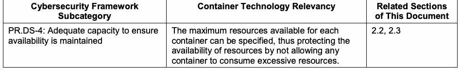
| サイバーセキュリティフレームワークのサブカテゴリ | コンテナ技術の関連性 | 本書の関連セクション |
| PR.DS-4: 可用性を確保するために適切な容量が維持されている | 各コンテナで利用可能な最大リソースを指定できるため、いかなるコンテナにも過剰なリソースを消費させないことによって、リソースの可用性が保護される。 | 2.2, 2.3 |
| Cybersecurity Framework Subcategory | Container Technology Relevancy | Related Sections of This Document |
| PR.DS-5: Protections against data leaks are implemented | Container technologies are designed to restrict each container’s access to shared resources so that information cannot inadvertently be leaked from one container to another. | 2 (introduction), 2.2, 2.3, 4.4 |
| PR.DS-6: Integrity checking mechanisms are used to verify software, firmware, and information integrity | Unauthorized changes to the contents of images can easily be detected and the altered image replaced with a known good copy. | 2.3, 4.1, 4.2 |
| PR.DS-7: The development and testing environment(s) are separate from the production environment | Using containers makes it easier to have separate development, testing, and production environments because the same image can be used in all environments without adjustments. | 2.1, 2.3 |
| PR.IP-3: Configuration change control processes are in place | Images can be used to help manage change control for apps. | 2.1, 2.2, 2.3, 2.4, 4.1 |
原本PDFの抜粋画像
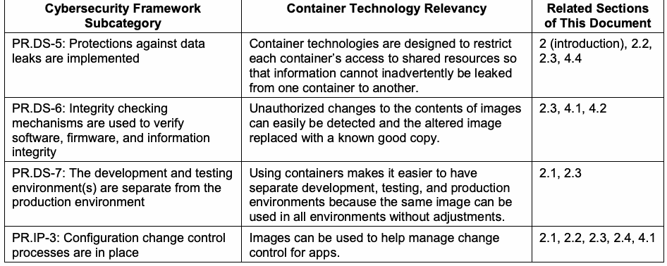
| サイバーセキュリティフレームワークのサブカテゴリ | コンテナ技術の関連性 | 本書の関連セクション |
| PR.DS-5: データ漏洩に対する保護が実施されている | コンテナ技術は、情報があるコンテナから別のコンテナへ意図せず漏洩することがないよう、共有リソースへの各コンテナのアクセスを制限するように設計されている。 | 2 (はじめに), 2.2, 2.3, 4.4 |
| PR.DS-6: ソフトウェア、ファームウェア、および情報の完全性を検証するために完全性チェックメカニズムが使用されている | イメージの内容に対する不正な変更は容易に検知でき、変更されたイメージを既知の正常なコピーに置き換えることができる。 | 2.3, 4.1, 4.2 |
| PR.DS-7: 開発環境およびテスト環境が本番環境から分離されている | 同じイメージを調整なしですべての環境で使用できるため、コンテナを使用することで開発環境、テスト環境、および本番環境を分離することが容易になる。 | 2.1, 2.3 |
| PR.IP-3: 構成変更管理プロセスが整備されている | イメージを使用して、アプリの変更管理を支援することができる。 | 2.1, 2.2, 2.3, 2.4, 4.1 |
原本PDFの抜粋画像
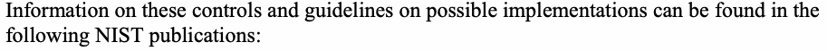
•FIPS 140-2, Security Requirements for Cryptographic Modules
•FIPS 140-2, 暗号モジュールのセキュリティ要件
未レビュー訳•FIPS 197, Advanced Encryption Standard (AES)
•FIPS 197, 高度暗号化規格 (AES)
未レビュー訳•FIPS 199, Standards for Security Categorization of Federal Information and Information Systems
•FIPS 199, 連邦情報および連邦情報システムのセキュリティカテゴリ化のための標準
未レビュー訳•FIPS 201-2, Personal Identity Verification (PIV) of Federal Employees and Contractors
•FIPS 201-2、連邦政府職員および請負業者の個人本人確認 (PIV)
未レビュー訳•SP 800-12 Rev. 1, An Introduction to Information Security
•SP 800-12 Rev. 1、情報セキュリティ入門
未レビュー訳•Draft SP 800-16 Rev. 1, A Role-Based Model for Federal Information Technology/Cybersecurity Training
•Draft SP 800-16 Rev. 1、連邦情報技術/サイバーセキュリティトレーニングのためのロールベースモデル
未レビュー訳•SP 800-18 Rev. 1, Guide for Developing Security Plans for Federal Information Systems
•SP 800-18 Rev. 1、連邦情報システムのためのセキュリティ計画策定ガイド
未レビュー訳•SP 800-30 Rev. 1, Guide for Conducting Risk Assessments
•SP 800-30 Rev. 1、リスクアセスメント実施のためのガイド
未レビュー訳•SP 800-34 Rev. 1, Contingency Planning Guide for Federal Information Systems
•SP 800-34 Rev. 1、連邦情報システムのためのコンティンジェンシープラン策定ガイド
未レビュー訳•SP 800-39, Managing Information Security Risk: Organization, Mission, and Information System View
•SP 800-39、情報セキュリティリスクの管理：組織、ミッション、情報システム視点
未レビュー訳•SP 800-40 Rev. 3, Guide to Enterprise Patch Management Technologies
•SP 800-40 Rev. 3、エンタープライズパッチ管理技術ガイド
未レビュー訳•SP 800-46 Rev. 2, Guide to Enterprise Telework, Remote Access, and Bring Your Own Device (BYOD) Security
•SP 800-46 Rev. 2、エンタープライズテレワーク、リモートアクセス、およびBYOD（私有端末の業務利用）セキュリティに関するガイド
未レビュー訳•SP 800-50, Building an Information Technology Security Awareness and Training Program
•SP 800-50、情報技術セキュリティ意識向上およびトレーニングプログラムの構築
未レビュー訳•SP 800-52 Rev. 1, Guidelines for the Selection, Configuration, and Use of Transport Layer Security (TLS) Implementations
•SP 800-52 Rev. 1、Transport Layer Security（TLS）実装の選択、設定、および使用に関するガイドライン
未レビュー訳•SP 800-53 Rev. 4, Security and Privacy Controls for Federal Information Systems and Organizations
•SP 800-53 Rev. 4、連邦情報システムおよび連邦組織のためのセキュリティ管理策とプライバシー管理策
•SP 800-53A Rev. 4, Assessing Security and Privacy Controls in Federal Information Systems and Organizations: Building Effective Assessment Plans
•SP 800-53A Rev. 4、連邦情報システムおよび連邦組織におけるセキュリティ管理策とプライバシー管理策の査定：効果的な査定計画の構築
未レビュー訳•SP 800-60 Rev. 1 Vol. 1, Guide for Mapping Types of Information and Information Systems to Security Categories
•SP 800-60 Rev. 1 Vol. 1、情報および情報システムの種類のセキュリティカテゴリへのマッピングに関するガイド
未レビュー訳•SP 800-61 Rev. 2, Computer Security Incident Handling Guide
•SP 800-61 Rev. 2、コンピュータセキュリティインシデント対応ガイド
未レビュー訳•SP 800-63 Rev. 3, Digital Identity Guidelines
•SP 800-63 Rev. 3、デジタルアイデンティティガイドライン
未レビュー訳•SP 800-70 Rev. 3, National Checklist Program for IT Products: Guidelines for Checklist Users and Developers
•SP 800-70 Rev. 3、IT製品のための国家チェックリストプログラム：チェックリスト利用者および開発者のためのガイドライン
未レビュー訳•SP 800-73-4, Interfaces for Personal Identity Verification
•SP 800-73-4、個人身元確認のためのインターフェース
未レビュー訳•SP 800-76-2, Biometric Specifications for Personal Identity Verification
•SP 800-76-2、個人身元確認のための生体認証仕様
未レビュー訳•SP 800-77, Guide to IPsec VPNs
•SP 800-77、IPsec VPNに関するガイド
未レビュー訳•SP 800-78-4, Cryptographic Algorithms and Key Sizes for Personal Identification Verification (PIV)
•SP 800-78-4、個人身元確認（PIV）のための暗号アルゴリズムおよび鍵サイズ
未レビュー訳•SP 800-81-2, Secure Domain Name System (DNS) Deployment Guide
•SP 800-81-2、セキュアなドメインネームシステム（DNS）導入ガイド
未レビュー訳•SP 800-83 Rev. 1, Guide to Malware Incident Prevention and Handling for Desktops and Laptops
•SP 800-83 Rev. 1、デスクトップおよびラップトップのためのマルウェアインシデント防止および対応ガイド
未レビュー訳•SP 800-88 Rev. 1, Guidelines for Media Sanitization
•SP 800-88 Rev. 1、媒体のサニタイズに関するガイドライン
未レビュー訳•SP 800-92, Guide to Computer Security Log Management
•SP 800-92, コンピュータセキュリティログ管理ガイド
未レビュー訳•SP 800-100, Information Security Handbook: A Guide for Managers
•SP 800-100, 情報セキュリティハンドブック：管理者向けガイド
未レビュー訳•SP 800-113, Guide to SSL VPNs
•SP 800-113, SSL VPNガイド
未レビュー訳•SP 800-114 Rev. 1, User's Guide to Telework and Bring Your Own Device (BYOD) Security
•SP 800-114 Rev. 1, テレワークおよび私有デバイスの業務利用（BYOD）セキュリティに関するユーザーガイド
未レビュー訳•SP 800-121 Rev. 2, Guide to Bluetooth Security
•SP 800-121 Rev. 2, Bluetoothセキュリティガイド
未レビュー訳•SP 800-128, Guide for Security-Focused Configuration Management of Information Systems
•SP 800-128, 情報システムのセキュリティに焦点を当てた構成管理ガイド
未レビュー訳•SP 800-137, Information Security Continuous Monitoring (ISCM) for Federal Information Systems and Organizations
•SP 800-137, 連邦情報システムおよび組織のための情報セキュリティ継続的モニタリング（ISCM）
未レビュー訳•SP 800-147, BIOS Protection Guidelines
•SP 800-147, BIOS保護ガイドライン
未レビュー訳•Draft SP 800-155, BIOS Integrity Measurement Guidelines
•ドラフト SP 800-155、BIOS完全性測定ガイドライン
未レビュー訳Appendix C—Acronyms and Abbreviations
付録 C—頭字語および略語
未レビュー訳Selected acronyms and abbreviations used in this paper are defined below.
本稿で使用されている主な頭字語および略語を以下に定義する。
AES
AES
未レビュー訳Advanced Encryption Standard
高度暗号化標準
未レビュー訳API
API
未レビュー訳Application Programming Interface AUFS Advanced Multi-Layered Unification Filesystem
アプリケーションプログラミングインタフェース AUFS 高度多層統合ファイルシステム
未レビュー訳BIOS
BIOS
未レビュー訳Basic Input/Output System
基本入出力システム
未レビュー訳BYOD Bring Your Own Device cgroup Control Group
BYOD 個人所有端末の業務利用 cgroup コントロールグループ
未レビュー訳CIS
CIS
未レビュー訳Center for Internet Security CMVP Cryptographic Module Validation Program
インターネットセキュリティセンター CMVP 暗号モジュール検証プログラム
未レビュー訳CVE
CVE
未レビュー訳Common Vulnerabilities and Exposures
共通脆弱性識別子
未レビュー訳CVSS Common Vulnerability Scoring System DevOps Development and Operations
CVSS 共通脆弱性評価システム DevOps 開発および運用
未レビュー訳DNS
DNS
未レビュー訳Domain Name System
ドメインネームシステム
未レビュー訳FIPS
FIPS
未レビュー訳Federal Information Processing Standards FIRST Forum for Incident Response and Security Teams
連邦情報処理規格 FIRST インシデント対応およびセキュリティチームのフォーラム
未レビュー訳FISMA Federal Information Security Modernization Act
FISMA 連邦情報セキュリティ近代化法
未レビュー訳FOIA
FOIA
未レビュー訳Freedom of Information Act
情報自由法
未レビュー訳GB
GB
未レビュー訳Gigabyte
ギガバイト
未レビュー訳I/O
I/O
未レビュー訳Input/Output
入出力
未レビュー訳IP
IP
未レビュー訳Internet Protocol
インターネットプロトコル
未レビュー訳IPS
IPS
未レビュー訳Intrusion Prevention System
侵入防止システム
未レビュー訳IT
IT
未レビュー訳Information Technology
情報技術
未レビュー訳ITL
ITL
未レビュー訳Information Technology Laboratory
情報技術研究所
未レビュー訳LXC
LXC
未レビュー訳Linux Container
Linuxコンテナ
未レビュー訳MAC
MAC
未レビュー訳Mandatory Access Control
強制アクセス制御
未レビュー訳NIST
NIST
未レビュー訳National Institute of Standards and Technology
国立標準技術研究所
未レビュー訳NTFS NT File System
NTFS NTファイルシステム
未レビュー訳OMB
OMB
未レビュー訳Office of Management and Budget
行政管理予算局
未レビュー訳OS
OS
未レビュー訳Operating System
オペレーティングシステム
未レビュー訳PIV
PIV
未レビュー訳Personal Identity Verification
個人身元確認
未レビュー訳RTM
RTM
未レビュー訳Root of Trust for Measurement
測定の信頼の基点
未レビュー訳SDN
SDN
未レビュー訳Software-Defined Networking
ソフトウェア定義ネットワーク
未レビュー訳seccomp Secure Computing
seccomp セキュアコンピューティング
未レビュー訳SIEM Security Information and Event Management
SIEM セキュリティ情報およびイベント管理
未レビュー訳SP
SP
未レビュー訳Special Publication
特別刊行物
未レビュー訳SQL
SQL
未レビュー訳Structured Query Language
構造化問合せ言語
未レビュー訳SSH
SSH
未レビュー訳Secure Shell
セキュアシェル
未レビュー訳SSL
SSL
未レビュー訳Secure Sockets Layer
セキュアソケットレイヤー
未レビュー訳TLS
TLS
未レビュー訳Transport Layer Security
トランスポート層セキュリティ
未レビュー訳TPM
TPM
未レビュー訳Trusted Platform Module
トラステッド プラットフォーム モジュール
未レビュー訳URI
URI
未レビュー訳Uniform Resource Identifier
統一資源識別子
未レビュー訳US
US
未レビュー訳United States
米国
未レビュー訳USCIS United States Citizenship and Immigration Services
USCIS 米国市民権・移民局
未レビュー訳VM
VM
未レビュー訳Virtual Machine
仮想マシン
未レビュー訳VPN
VPN
未レビュー訳Virtual Private Network
仮想プライベートネットワーク
未レビュー訳WAF
WAF
未レビュー訳Web Application Firewall
Webアプリケーションファイアウォール
未レビュー訳Appendix D—Glossary
付録D—用語集
未レビュー訳Application
アプリケーション
未レビュー訳A form of virtualization that exposes a single shared operating system
単一の共有オペレーティングシステムを公開する仮想化の一形態
未レビュー訳virtualization kernel to multiple discrete application instances, each of which is kept
それぞれが保持される複数の個別のアプリケーションインスタンスに対する仮想化カーネル
未レビュー訳isolated from all others on the host.
ホスト上の他のすべてから分離されている。
未レビュー訳Base layer
ベースレイヤー
未レビュー訳The underlying layer of an image upon which all other components are added.
他のすべてのコンポーネントが追加される、イメージの基礎となるレイヤー。
未レビュー訳Container
コンテナ
未レビュー訳A method for packaging and securely running an application within an application virtualization environment. Also known as an application container or a server application container.
アプリケーション仮想化環境内でアプリケーションをパッケージ化し、安全に実行するための手法。アプリケーションコンテナまたはサーバーアプリケーションコンテナとも呼ばれる。
未レビュー訳Container runtime The environment for each container; comprised of binaries coordinating
コンテナランタイム 各コンテナの環境。バイナリで構成され、
未レビュー訳multiple operating system components that isolate resources and resource usage for running containers.
実行中のコンテナのリソースおよびリソース使用量を分離する複数のオペレーティングシステムコンポーネントを連携させる。
未レビュー訳Container-specific A minimalistic host operating system explicitly designed to only run operating system containers.
コンテナ特化型 オペレーティングシステムコンテナのみを実行するように明示的に設計された、最小限のホストオペレーティングシステム。
未レビュー訳Filesystem
ファイルシステム
未レビュー訳A form of virtualization that allows multiple containers to share the same
複数のコンテナが同じものを共有できるようにする仮想化の一形態
未レビュー訳virtualization physical storage without the ability to access or alter the storage of other
他のストレージにアクセスまたは変更する能力を持たない仮想化物理ストレージ
未レビュー訳containers.
コンテナ。
未レビュー訳General-purpose A host operating system that can be used to run many kinds of operating system applications, not just applications in containers.
汎用オペレーティングシステム コンテナ内のアプリケーションだけでなく、多くの種類のアプリケーションを実行するために使用できるホストオペレーティングシステム。
未レビュー訳Host operating The operating system kernel shared by multiple applications within an system application virtualization architecture.
ホストオペレーティングシステム アプリケーション仮想化アーキテクチャ内で複数のアプリケーションによって共有されるオペレーティングシステムカーネル。
未レビュー訳Image
イメージ
未レビュー訳A package that contains all the files required to run a container.
コンテナの実行に必要なすべてのファイルを含むパッケージ。
未レビュー訳Isolation
分離
未レビュー訳The ability to keep multiple instances of software separated so that each instance only sees and can affect itself.
各インスタンスが自身のみを認識し、自身にのみ影響を与えることができるように、ソフトウェアの複数のインスタンスを分離した状態に維持する能力。
未レビュー訳Microservice A set of containers that work together to compose an application.
マイクロサービス 連携してアプリケーションを構成するコンテナの集合。
Namespace
名前空間
未レビュー訳A form of isolation that limits which resources a container may interact
コンテナが対話できるリソースを制限する
未レビュー訳isolation
分離
未レビュー訳with.
分離の一形態。
未レビュー訳Operating system A virtual implementation of the operating system interface that can be virtualization used to run applications written for the same operating system. [from [1]]
オペレーティングシステム仮想化 同じオペレーティングシステム用に作成されたアプリケーションを実行するために使用できる、オペレーティングシステムインターフェースの仮想的な実装。[from [1]]
未レビュー訳Orchestrator A tool that enables DevOps personas or automation working on their
オーケストレーター DevOps担当者、またはその代理として動作する自動化が、
未レビュー訳behalf to pull images from registries, deploy those images into containers, and manage the running containers. Orchestrators are also responsible for monitoring container resource consumption, job execution, and machine health across hosts.
レジストリからイメージをプルし、それらのイメージをコンテナにデプロイし、実行中のコンテナを管理することを可能にするツール。オーケストレーターはまた、ホスト間でのコンテナのリソース消費量、ジョブの実行、およびマシンの健全性の監視も担当する。
未レビュー訳Overlay network A software-defined networking component included in most orchestrators
オーバーレイネットワーク ほとんどのオーケストレーターに含まれるソフトウェア定義ネットワークコンポーネントであり、
未レビュー訳that can be used to isolate communication between applications that share the same physical network.
同じ物理ネットワークを共有するアプリケーション間の通信を分離するために使用できる。
未レビュー訳Registry
レジストリ
未レビュー訳A service that allows developers to easily store images as they are created, tag and catalog images for identification and version control to aid in discovery and reuse, and find and download images that others have created.
開発者が、作成されたイメージを容易に保存し、発見や再利用を支援するための識別およびバージョン管理を目的としてイメージにタグを付けてカタログ化し、他者が作成したイメージを検索してダウンロードすることを可能にするサービス。
未レビュー訳Resource
リソース
未レビュー訳A mechanism for limiting how much of a host’s resources a given
所与のコンテナがホストのリソースをどれだけ消費できるかを制限するためのメカニズム
未レビュー訳allocation
割り当て
未レビュー訳container can consume.
コンテナが消費できる。
未レビュー訳Virtual machine A simulated environment created by virtualization. [from [1]]
仮想マシン 仮想化によって作成されたシミュレート環境。[from [1]]
未レビュー訳Virtualization The simulation of the software and/or hardware upon which other
仮想化 ソフトウェアおよび／またはハードウェアのシミュレーションであり、その上で他の
未レビュー訳software runs. [from [1]]
ソフトウェアが実行される。[from [1]]
未レビュー訳Appendix E—References
付録E—参考文献
未レビュー訳[1] NIST Special Publication (SP) 800-125, Guide to Security for Full Virtualization Technologies, National Institute of Standards and Technology, Gaithersburg, Maryland, January 2011, 35pp. https://doi.org/10.6028/NIST.SP.800-125.
[1] NIST Special Publication (SP) 800-125, Guide to Security for Full Virtualization Technologies, National Institute of Standards and Technology, Gaithersburg, Maryland, January 2011, 35pp. https://doi.org/10.6028/NIST.SP.800-125.
[2] Docker, https://www.docker.com/
[2] Docker, https://www.docker.com/
未レビュー訳[3] rkt, https://coreos.com/rkt/
[3] rkt, https://coreos.com/rkt/
未レビュー訳[4] CoreOS Container Linux, https://coreos.com/os/docs/latest
[4] CoreOS Container Linux, https://coreos.com/os/docs/latest
未レビュー訳[5] Project Atomic, http://www.projectatomic.io
[5] Project Atomic, http://www.projectatomic.io
未レビュー訳[6] Google Container-Optimized OS, https://cloud.google.com/container-optimized-os/docs/
[6] Google Container-Optimized OS, https://cloud.google.com/container-optimized-os/docs/
[7] Open Container Initiative Daemon (OCID), https://github.com/kubernetes-incubator/cri-o
[7] Open Container Initiative Daemon (OCID), https://github.com/kubernetes-incubator/cri-o
[8] Jenkins, https://jenkins.io
[8] Jenkins, https://jenkins.io
未レビュー訳[9] TeamCity, https://www.jetbrains.com/teamcity/
[9] TeamCity, https://www.jetbrains.com/teamcity/
未レビュー訳[10] Amazon EC2 Container Registry (ECR), https://aws.amazon.com/ecr/
[10] Amazon EC2 Container Registry (ECR), https://aws.amazon.com/ecr/
未レビュー訳[11] Docker Hub, https://hub.docker.com/
[11] Docker Hub, https://hub.docker.com/
未レビュー訳[12] Docker Trusted Registry, https://hub.docker.com/r/docker/dtr/
[12] Docker Trusted Registry, https://hub.docker.com/r/docker/dtr/
未レビュー訳[13] Quay Container Registry, https://quay.io
[13] Quay Container Registry, https://quay.io
未レビュー訳[14] Kubernetes, https://kubernetes.io/
[14] Kubernetes, https://kubernetes.io/
未レビュー訳[15] Apache Mesos, http://mesos.apache.org/
[15] Apache Mesos, http://mesos.apache.org/
未レビュー訳[16] Docker Swarm, https://github.com/docker/swarm
[16] Docker Swarm, https://github.com/docker/swarm
未レビュー訳[17] NIST Special Publication (SP) 800-154, Guide to Data-Centric System Threat Modeling (Draft), National Institute of Standards and Technology, Gaithersburg, Maryland, March 2016, 25pp. https://csrc.nist.gov/publications/detail/sp/800-154/draft.
[17] NIST Special Publication (SP) 800-154、データ中心システム脅威モデリングガイド（ドラフト）、米国国立標準技術研究所、メリーランド州ゲイザースバーグ、2016年3月、25pp. https://csrc.nist.gov/publications/detail/sp/800-154/draft.
[18] Common Vulnerability Scoring System v3.0: Specification Document, Forum for Incident Response and Security Teams (FIRST). https://www.first.org/cvss/specification-document.
[18] Common Vulnerability Scoring System v3.0: Specification Document, Forum for Incident Response and Security Teams (FIRST). https://www.first.org/cvss/specification-document.
[19] NIST Special Publication (SP) 800-111, Guide to Storage Encryption Technologies for End User Devices, National Institute of Standards and Technology, Gaithersburg, Maryland, November 2007, 40pp. https://doi.org/10.6028/NIST.SP.800-111.
[19] NIST Special Publication (SP) 800-111, Guide to Storage Encryption Technologies for End User Devices, National Institute of Standards and Technology, Gaithersburg, Maryland, November 2007, 40pp. https://doi.org/10.6028/NIST.SP.800-111.
[20] CIS Docker Benchmark, Center for Internet Security (CIS). https://www.cisecurity.org/benchmark/docker/.
[20] CIS Docker Benchmark, Center for Internet Security (CIS). https://www.cisecurity.org/benchmark/docker/.
[21] Security Enhanced Linux (SELinux), https://selinuxproject.org/page/Main_Page
[21] Security Enhanced Linux (SELinux), https://selinuxproject.org/page/Main_Page
未レビュー訳[22] AppArmor, http://wiki.apparmor.net/index.php/Main_Page
[22] AppArmor, http://wiki.apparmor.net/index.php/Main_Page
未レビュー訳[23] NIST Special Publication (SP) 800-123, Guide to General Server Security, National Institute of Standards and Technology, Gaithersburg, Maryland, July 2008, 53pp.
[23] NIST Special Publication (SP) 800-123、一般サーバーセキュリティガイド、米国国立標準技術研究所、メリーランド州ゲイザースバーグ、2008年7月、53pp.
未レビュー訳https://doi.org/10.6028/NIST.SP.800-123
https://doi.org/10.6028/NIST.SP.800-123
未レビュー訳[24] NIST Special Publication (SP) 800-164, Guidelines on Hardware-Rooted Security in Mobile Devices (Draft), National Institute of Standards and Technology, Gaithersburg, Maryland, October 2012, 33pp. https://csrc.nist.gov/publications/detail/sp/800-164/draft.
[24] NIST Special Publication (SP) 800-164、モバイルデバイスにおけるハードウェアルートセキュリティに関するガイドライン（ドラフト）、米国国立標準技術研究所、メリーランド州ゲイザースバーグ、2012年10月、33pp. https://csrc.nist.gov/publications/detail/sp/800-164/draft.
[25] NIST Special Publication (SP) 800-147, BIOS Protection Guidelines, National Institute of Standards and Technology, Gaithersburg, Maryland, April 2011, 26pp.
[25] NIST Special Publication (SP) 800-147、BIOS保護ガイドライン、米国国立標準技術研究所、メリーランド州ゲイザースバーグ、2011年4月、26pp.
未レビュー訳https://doi.org/10.6028/NIST.SP.800-147.
https://doi.org/10.6028/NIST.SP.800-147.
未レビュー訳[26] NIST Special Publication (SP) 800-155, BIOS Integrity Measurement Guidelines (Draft), National Institute of Standards and Technology, Gaithersburg, Maryland, December 2011, 47pp. https://csrc.nist.gov/publications/detail/sp/800-155/draft.
[26] NIST Special Publication (SP) 800-155、BIOS完全性測定ガイドライン（ドラフト）、米国国立標準技術研究所、メリーランド州ゲイザースバーグ、2011年12月、47pp. https://csrc.nist.gov/publications/detail/sp/800-155/draft.
[27] NIST Internal Report (IR) 7904, Trusted Geolocation in the Cloud: Proof of Concept Implementation, National Institute of Standards and Technology, Gaithersburg, Maryland, December 2015, 59 pp. https://doi.org/10.6028/NIST.IR.7904.
[27] NIST Internal Report (IR) 7904、クラウドにおけるトラステッド・ジオロケーション：概念実証の実装、米国国立標準技術研究所、メリーランド州ゲイザースバーグ、2015年12月、59 pp. https://doi.org/10.6028/NIST.IR.7904.
[28] NIST Special Publication (SP) 800-61 Revision 2, Computer Security Incident Handling Guide, National Institute of Standards and Technology, Gaithersburg, Maryland, August 2012, 79 pp. https://doi.org/10.6028/NIST.SP.800-61r2.
[28] NIST Special Publication (SP) 800-61 Revision 2、コンピュータセキュリティインシデント対応ガイド、米国国立標準技術研究所、メリーランド州ゲイザースバーグ、2012年8月、79 pp. https://doi.org/10.6028/NIST.SP.800-61r2.
[29] NIST Special Publication (SP) 800-53 Revision 4, Security and Privacy Controls for Federal Information Systems and Organizations, National Institute of Standards and Technology, Gaithersburg, Maryland, April 2013 (including updates as of January 15, 2014), 460pp. https://doi.org/10.6028/NIST.SP.800-53r4.
[29] NIST Special Publication (SP) 800-53 Revision 4、連邦情報システムおよび連邦組織のためのセキュリティ管理策とプライバシー管理策、米国国立標準技術研究所、メリーランド州ゲイザースバーグ、2013年4月（2014年1月15日現在の更新を含む）、460pp. https://doi.org/10.6028/NIST.SP.800-53r4.
[30] Framework for Improving Critical Infrastructure Cybersecurity Version 1.0, National Institute of Standards and Technology, Gaithersburg, Maryland, February 12, 2014. https://www.nist.gov/document-3766.
[30] 重要インフラのサイバーセキュリティを改善するためのフレームワーク バージョン1.0、米国国立標準技術研究所、メリーランド州ゲイザースバーグ、2014年2月12日。https://www.nist.gov/document-3766.